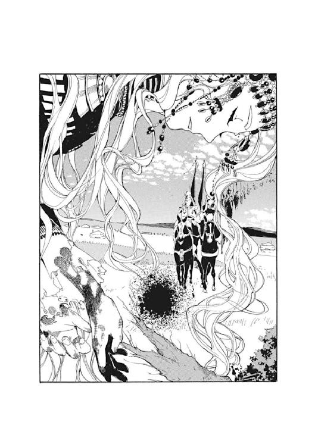

| GOSICKs 03 秋の花の思い出 | |
| 桜庭一樹 | |
| KADOKAWA / 角川書店 (2012) | |
GOSICKs Ⅲ
─ゴシックエス・秋の花の思い出─
桜庭一樹

角川ビーンズ文庫
本作品の全部または一部を無断で複製、転載、配信、送信したり、ホームページ上に転載することを禁止します。また、本作品の内容を無断で改変、改ざん等を行うことも禁止します。
本作品購入時にご承諾いただいた規約により、有償・無償にかかわらず本作品を第三者に譲渡することはできません。
本作品を示すサムネイルなどのイメージ画像は、再ダウンロード時に予告なく変更される場合があります。
本作品は縦書きでレイアウトされています。
また、ご覧になるリーディングシステムにより、表示の差が認められることがあります。
目次
口絵・本文イラスト／武田日向
シャハラザードは夜の明けそめたのに気づき、お許しを得ていた物語をやめた。そして
第千一夜──すなわち本書の終章──になると、また話しはじめた......
──『アラビアン・ナイト18』
池田修訳 平凡社刊
プロローグ
庭園には、群青色をした夜が重たく垂れこめていた。夏の終わりの涼しい風が、湿った夜の匂いに満ちて、庭園の隅にぽつんと立つ、迷路花壇に囲まれたちいさなドールハウスに吹きつけていた。
「我々は......」
「我々は、けして、離れまいよ......」
しわがれた、まるで老女のそれのような、しかし心細そうな響きだけはまだちいさな子供のようでもある不思議な囁き声が、花壇の花々を揺らす風と混ざり合うようにかすかに、ドールハウスの寝室から聞こえてきた。
「久城......！」
真鍮の猫の頭を象ったドアノブも、緑色をしたドアも、フランス窓も、すべてが少しずつちいさかった。部屋の中には、エメラルド色をした長椅子やアールヌーボーの猫足テーブル、花の形のランプなど、おもちゃのようにちいさくてかわいらしい家具が並んでいた。床にも、テーブルにも、古い書物が所狭しと積まれて、溢れていた。食べかけのピンクのマカロンが転がっている。真っ赤なセロハンに包まれたチョコレートボンボンだけが、闇の中で、不吉な鬼火のように輝いている。
奥の寝室から、しわがれた、寂しそうな声が、
「離れないと息の根を、止めて、やるぞー」
「機嫌は、もちろん、悪いとも」
「......できる」
「灰色狼には、不可能は、ひとっつも、ないのだよぅ......」
寝言と、仔猫が寝返りをうったかのようなかすかな衣擦れの音が聞こえてきた。
寝室には天蓋付きのちいさくて豪奢なベッドが鎮座していた。絹のシーツの上に、輝く天上の扇子の如く、見事な金色の髪を広げ、少女が眠っていた。ちいさな顔はつくりもののように整って、輝くばかりの美しさだった。ときどき、すぴー、すぴー、と寝息が聞こえなければ、そして握りしめたちいさな手がときおり、にぎにぎと動かなければ、精巧なビスクドールが置いてあるように見えただろう。さくらんぼ色の唇をすこぅし開いて、少女──ヴィクトリカは、一人で囁き続けていた。
「グレヴィールのことは......。いいから、放っておきたまえよ、君......」
白いモスリンの寝巻きは幾重にもフリルが重ねられて、ひとつひとつのフリルに、それぞれ種類が違う花模様の刺繡が躍っていた。こっちは薔薇、こっちはすみれ、そしてこっちはチューリップ......。しかし、寝返りをうつたびにフリルが少しずつめくれて、やがて、ヴィクトリカのちいさなおへそと、陶器のように真っ白ですべすべしたお腹が現れた。
「......ぐじゃっ！」
ヴィクトリカが、くしゃみをした。
「おや。寒いぞ、君」
「窓を、閉めたまえよー......」
「こら、久城」
寝室は静けさに満ちていた。うなされているのか、ヴィクトリカは苦悩するようにぴくぴくと、ちいさくて形のいい鼻をうごめかせた。むにゃむにゃ、むにゃ、となにかつぶやいたかと思うと、おへそを出したまま、また深い眠りに落ちていった。
庭園は静けさに包まれていた。群青色の夜空が、よりいっそう暗く垂れこめた。朝はまだまだ先なのだ......。
「ぐじゃっ！」
第一話 「純潔」
白い薔薇のおはなし ─ＡＤ１７８９ フランス─
１
夏が終わり、季節がすこしだけ秋に近づいた、朝。
聖マルグリット学園──。
つい数日前よりも柔らかくなった、晩夏の日射しが、フランス式庭園を模した学園の敷地を眩しく照らしていた。木々の葉には朝露がまだ残り、つめたくはじいて、透明に輝いていた。ちちち、と小鳥の鳴き声が遠く聞こえる。ちいさな栗鼠が数匹、不揃いの列になってちょこちょこと芝生を横切り、暗い影の落ちる森へ消えていく。
その静かな朝の学園を、一人だけきびきびとしたしぐさで歩いてくる少年がいた。制服のネクタイをきっちりと締め、一分の隙もない様子で身なりを整えた東洋人の少年だ。漆黒の髪が歩くたびにさらさらと揺れて、髪と同じ黒い、すこし潤んだ瞳を隠したり、また現したりしていた。
少年──久城一弥は整備された砂利道を歩いてくると、その一角でぴたりと歩みを止めた。くるりときびすを返し、道から外れたところに鬱蒼とそびえる四角い緑色のかたまりを見上げた。
迷路花壇。
あまりにも複雑につくられた、生きた花々による、四角い、巨大な迷路。専属庭師による力作だが、そのせいか一度中に入ると迷ってしまい、なかなか外に出てこられないという不思議な場所だ。一弥はため息をつくと、つぶやいた。
「ヴィクトリカのやつ、お熱を出すなんてめずらしいな。チビッコで、フリルとレースの中身のからだはちょびっとしかないけど、あれでなかなか、丈夫で、意地悪で、生意気で、悪魔的なんだよなぁ。......ちょっと心配だな」
最後の一言だけやけにちいさな声で言うと、一弥はうつむいた。それから顔を上げて、また、さきほどまでと同じカッカッカッ......と音がするようなきびきびした動作で、迷わず、その迷路花壇に入っていった。
赤、ピンク、オレンジ、クリーム色......。色とりどり、デザインもさまざまな花が咲き乱れて、朝露にしっとりと濡れて花びらを輝かせていた。その花盛りのロードを一弥は、わき目もふらずに歩いていく。角を右に、左に、右に、また右に、と曲がり、生真面目そうに唇を引き結んだままで歩き続ける。
「きれいだな。この花......」
小声で、ちいさな金色の花を見下ろして一言つぶやいて、その自分の言葉に、恥ずかしそうに頰を染めた。それからまた硬い表情になって歩き続けた。
いつまでも続くと思えた花の迷路はやがてようやく終わり、一弥はちいさな、お菓子の家のような、二階建ての屋敷にたどり着いた。緑色をしたおもちゃのような玄関ドアをノックしようとして、やめ、表に面した一階の窓に近づいた。
遠慮がちに、声をかける。
「ヴィクトリカ？」
「......」
「ヴィクトリカ、おはよう？」
「......う」
しわがれた、老婆のような、でもどこか不安そうな声がほんの一声、屋敷の中から返ってきた。一弥は顔をしかめた。窓に手をやって、そうっと開けながら、
「ヴィクトリカ、君ねぇ」
生真面目そうな声で、文句を言い始める。
「さいきん、返事をさぼりすぎだよ。どうしてぼくが話しかけても、一言どころか、一声しか返してくれないんだよ。ぼくはこの春からずっと、君っていうわがまま姫のためにあっちをうろうろ、こっちをうろうろ。それに、毎日、のどが嗄れるまでしゃべりまくってるのに」
「う？」
「まったく、帝国軍人の三男にあるまじきおかしな努力だよ。......君、聞いてる？ お熱は？」
「う！」
窓を開けると、まず部屋の中がよく見えた。ちいさな猫足テーブルに、おそろいの椅子。翡翠色の飾りがたくさんついた、すばらしい鏡台や重厚なチェスト。テーブルには手をつけられていない朝食が置かれていた。朝摘みフルーツのサラダに、一口サイズの葡萄パン。紅茶が入った銀のポット。
ちいさくておそろしい、部屋の主、ヴィクトリカの姿が見えないので、一弥は身を乗り出してきょろきょろした。と、窓の下から金色のちいさな頭がとつぜん浮上してきて、一弥の白い顎の下でぴたりと止まった。
一弥は見下ろした。
金色のちっちゃな頭の、つむじが見えた。くすくす笑いながらそのつむじを人差し指でつっつくと、不機嫌そうに、ぐるる、と唸る声がした。白い三段フリルの寝巻きでふかふかにふくらんだちいさなからだが、エメラルド色をした豪奢な長椅子の上でのっそりとうごめいている。金色の花に、白い葉っぱの、一輪の花を見下ろしているみたいだった。重ねあわされたフリルからいい匂いがした。花の香油がしみこませてあるようだ。
と、不機嫌そうなちいさな声が聞こえてきた。
「病人の頭をつつくな。君、地獄に落ちるぞ」
「ちょっとつついたぐらいで落ちないよ。それより熱はどうなのさ、ヴィクトリカ？」
「......う」
金色の頭がうごいて、こちらを見上げた。金色の絹糸の束みたいな長い見事な髪が、揺れた。床に届いて、生き物の尻尾のようにうごめく、髪。ちいさな青白い顔は熱のせいですこしだけはれぼったかった。
すべてを吸いこんでしまいそうな、深いエメラルド・グリーンの瞳。老女のような、幼女のような、摑みきれないその色。不思議なふたつの瞳がじっと一弥を見上げていた。
さくらんぼ色をしたつやつやの唇が、ゆっくり開く。
「熱は、ある！」
「あ、そう......」
一弥はがっかりして、うなずいた。
「調子が悪いのかぁ。めずらしいね。やっぱり、修道院から列車で帰ってくるとき、いろいろありすぎたせいかなぁ」
数日前、一弥はヴィクトリカを連れてこの聖マルグリット学園に帰ってきたばかりなのだった。夏休みの最後の日の朝。ヴィクトリカは、いつのまにか海沿いの修道院、〈ベルゼブブの頭蓋〉に監禁されていた。そこでぐったりしてしまっているという話を、彼女の兄、ブロワ警部から聞いた一弥は、フリルとレースとお菓子と書物を持って、彼女を助けに修道院に向かったのだ。
そしてヴィクトリカを助け出して、大陸を横断する豪華列車〈オールド・マスカレード号〉に乗り、学園に戻ってきた。さまざまな事件が二人を襲い、なんとか無事に帰れたものの、疲れのせいかここ数日ヴィクトリカは元気がなく、日課の図書館通いもしていないようだった。
そして今朝、セシル先生から熱があると聞いて、一弥があわてて訪ねてきたというわけだ。
「これから授業なんだけど、顔だけ見ていこうかと思って」
「フン。君は相変わらず、無駄にまめなやつだな」
「うん。ぼくは相変わらず、無駄にまめなや、つ......ちょ、ちょっと待ってよ、ヴィクトリカ。心配してやってきた相手に対して、それはないだろ。君ねぇ」
「君は善良で、単純だ。どうせその、ふくらんでいるポケットの中にも、しょうもないお菓子が入っているのだろう？」
「うん！ あれ、どうしてわかったの？」
「混沌さ。再構成だ。くだらんことだ」
そういうとヴィクトリカは、座っていたエメラルド色の長椅子の上で、退屈そうにふわぁ～とあくびをした。
ぺたん、と寝転ぶと、金の髪がふわふわと彼女を取り巻いた。鈍い金の光。まるでちいさなからだが内側から輝いているようで、一弥は、見慣れたはずのこの友人の美しさに、改めて敬虔な気持ちになった。
（しゃべると、とっても意地悪なんだけどなぁ......？）
ヴィクトリカは眠そうにあくびをしながら、一弥を見た。いまのあくびで、宝石のような緑の瞳にすこし涙がたまっている。さっき見た、朝露に濡れて光るちいさな金の花びらのようだった。
ヴィクトリカが不満そうにつぶやく。
「いいから、はやく出したまえ。君」
「ん？ なにを」
「ポケットの中のものをだよ」
「あぁ、そっか」
一弥はうなずいた。
制服のポケットに手を入れながら、
「ほんとうは、君が退屈しているんじゃないかと思って、おもしろいお話とか、それに植物園にもしばらく行ってないみたいだから、あの温室で咲いている花を持ってこようと思ったんだけど。でも、とりあえずお菓子かなって思ってさ」
「たわけ」
「いや、喜んでくれてぼくもうれしいよ。えっ......いま、たわけって言った？ それぼくのこと？」
「ほかに誰がいるかね？」
ヴィクトリカは、一弥がポケットから出した花の形のクッキーをもりもり食べながら、そっぽをむいた。細い背中をこちらに向けて知らん振りしている。フリルでふっくらふくらんだ寝巻きが、すこしかたむいて、青白くてちいさな肩が片方だけのぞいていた。
一弥は不満そうに、
「ぼくはだんぜん、たわけじゃないよ」
「それなら、おもしろい話も持ってきたまえ」
「むっ。......わ、わかったよ」
「それと、花もだ」
クッキーを食べながら、ちらりとこちらを振り向いて、ヴィクトリカが言った。一弥はうなずいた。
風が吹いて、花壇の花々と一弥の前髪を揺らしていった。
遠くで鐘が鳴り始めた。午前中の授業が始まる時間だ。一弥は、フリルの寝巻き姿でエメラルド色の長椅子にしどけなく横たわるヴィクトリカを、首をかしげてしばらくみつめた。ヴィクトリカも、金の髪を床に垂らしたまま、一弥をみつめている。
鐘が鳴っている。
一弥はくるりときびすを返すと、迷路花壇に向かって歩きだした。ヴィクトリカの顔がわずかに、さびしそうに曇った。十歩ほど歩いて、一弥が振り向いた。ヴィクトリカの顔がほんのすこし、明るくなった......気がした。
風が吹いた。
一弥は真面目な顔で、静かな口調で、言った。
「ヴィクトリカの、いばりんぼ」
「むっ？ なっ！ こら、待て久城！ いまのはなんだ！ 待てっ」
「じゃ、放課後ね？」
怒りのあまり金の髪を逆立てるヴィクトリカをそのままに、一弥はあわてて走って、花壇に飛びこんで、脱兎の如く逃げた。
２
晩夏の日射しは昼になるとさらに優しくなって、おだやかに学園の敷地を照らしていた。バカンスで日焼けした生徒たちがばたばたと急いで通り過ぎる。夕刻が近づくとその喧騒もやんで、庭園は静かに、ただ風で木々の葉を揺らしていた。
「う～ん......」
その庭園の敷地の隅。重厚な石造りの聖マルグリット大図書館で、久城一弥はうんうん唸りながら、なにかを探していた。
放課後。暖かな日射しもこの石の塔には入ってこない。冷え冷えと湿った空気の中、一弥は、細い蛇が無数にうごめくような、遥か上の天井まで続く木階段の途中に座っていた。
その視線は、巨大書棚の一角にすえられている。漆黒の髪をぐりぐりとかいて、
「たしかヴィクトリカ、こっちと、こっちの棚はぜんぶ読んじゃったって、こともなげに言ってたんだよな。それならこっち側の書棚はまだ読んでいない本ばかりなのかもしれないなぁ。なにか、ヴィクトリカがおもしろがる話をみつけて、それから花も持っていかないと......」
分厚い書物を何冊も階段に並べて、考えこんでいる。
「これなんか、どうかな。フランス革命のころの伯爵家の、名もなき乳母の手記。きっとおもしろい話が......。ん、薔薇が出てくるぞ？」
フランス語で書かれた手記を、気難しそうに顔をしかめて読んでいた一弥は、しばらくすると顔を上げた。うん、とうなずく。
「これにしよう。おはなしはこれで、プレゼントの花は、白い薔薇だ。おはなしと同じ花を持っていけば、ヴィクトリカもちょっとは楽しんでくれるかもしれないし。うん」
ぱたん、と書物を閉じる。
そしてその書物を小脇に抱えると、こんどは、温室の花を摘むために木階段を規則正しく、上り始めた......。
「ヴィクトリカ？ いる？」
「......フン」
遠慮がちに窓をノックすると、中から、もはや声ですらない、鼻を鳴らす音が聞こえた。
「いばりんぼさん。書物とお花を持ってきたよ」
顔を出すと、朝と同じようにエメラルド色の長椅子に寝転んだヴィクトリカは、朝よりも熱っぽく、うるんだ瞳と林檎みたいな色のほっぺたで、うらみがましく一弥を見上げた。
「遅い。もう、君なんか、知らん」
「またまた」
一弥は気にもせずに、窓辺に頰杖をつくと、ヴィクトリカを見下ろした。それからコホンと咳をした。赤くなりながら、持ってきた可憐な白い薔薇二輪を、そっとヴィクトリカに差し出した。
ヴィクトリカが、きょとんとした顔で見上げてくる。
「なんだ？ 君、不気味なことをして」
「ぶ、不気味じゃないだろ。おはなしの中に出てくるんだ。白い薔薇が。だから」
ヴィクトリカのほっぺたについたお菓子のくずをふいてやりながら、一弥が答えた。小脇に抱えていた書物を出すと、ヴィクトリカに見せる。
「君、この本はもう読んだかい？ 『フランス革命における、名もなき乳母の手記。〝ジェリコット伯爵家の二輪の薔薇〟』っていうの」
ヴィクトリカはふるふると首を振った。金色の髪もいっしょに、こころもとなく揺れる。
陶器のようにきめ細やかなちいさな顔を、一弥はじっと覗きこんだ。何の表情も表れていないひややかなその顔に、しかし、光が針の穴を通るが如き、ほんのわずかな変化がよぎったのを、一弥は感知したらしかった。
（ヴィクトリカのやつ、ちょっと興味を持ったみたいだぞ......）
と、一弥はほっとした。そして張り切って本を読み始めた。
「『西暦一八一一年、パリにてわたしはこの手記を書いている。あの革命の季節、わたしがジェリコット伯爵家で見聞きしたものと、伝聞をまじえて、二人の美しい薔薇を襲った悲劇を書き記し、後世に伝えたいと思っているからだ。革命の朝、断頭台の露と消えた、美しい少女ビビアン・ド・ジェリコットと、その叔父、アントワーヌの物語を』......どう？」
「......む。もっと読みたまえ」
ヴィクトリカがうむとうなずいた。一弥は背すじをのばすと、滔々と読み始めた。
ふわり、と夕刻の風が吹いた。
花壇の花々が、過ぎし日に思いを馳せるように、ゆっくりと、右から左に一斉に揺らめいた。
３
『西暦一八一一年、パリにてわたしはこの手記を書いている。あの革命の季節、わたしがジェリコット伯爵家で見聞きしたものと、伝聞をまじえて、二人の美しい薔薇を襲った悲劇を書き記し、後世に伝えたいと思っているからだ。革命の朝、断頭台の露と消えた、美しい少女ビビアン・ド・ジェリコットと、その叔父、アントワーヌの物語を。
あの夏。
一七八九年の夏。花の都と呼ばれたフランス、パリの町は血に染まった。
しかし、あの日までのパリはただただ華やかであった。麗しい宮殿、コルセットできつくウエストを締めて鯨の骨で豪奢なドレスの裾をふくらませた、つくりもののように美しい貴婦人たち。夜ごとの、貴族たちの、お遊びの宮廷恋愛。朝がくれば消えてしまう儚い夢のために、彼らは鮮やかな蝶のように明るい夜を飛びまわっていた。
一方で、民衆は飢えていた。あのころこの国は、第一身分の聖職者、第二身分の貴族、そして第三身分のわたしたち労働者、という旧制度に支配されていたのだった。下町に住むわたしの家族は、学校にも行けず、十になるかならないかで働きに出た。まるで別の国であるかのような、貴族の館と、下町。
ジェリコット伯爵家には、夜ごとの舞踏会の貴族たちとはまたちがう、秘密の、そしてささやかな宮廷恋愛が繰り広げられていた。それもまた下町からやってきたわたしには驚きであった。
貴族たちの噂にのぼる、類いまれな美しい令嬢、ビビアン・ド・ジェリコット。夫である伯爵の横暴に耐えかねて、若くして出奔したとされる母君の美貌を受け継いだビビアンは、御年十五歳。金色の髪に、大人びたおおきな黒い瞳を持ち、怠惰な、細長い猫のように日がな一日ソファに横たわってけだるく過ごしていた。舞踏会にも行かず、それどころか、伯爵家のすばらしい幾何学模様をした庭園を、散歩することさえなかった。
彼女は長くは歩けなかったのだ。お仕えしているわたしたちだけがその理由を知っていたが、固く緘口令が敷かれていた。日がな一日、怠惰なビビアンを、わたしたちはまるで宝石を磨くように、髪をとき、肌に香油をすりこみ、より美しくなるようにケアをして過ごした。
父君、ジェリコット伯爵はビビアンを政争に使おうと必死だった。自慢の、立派な書物机に向かい、夜ごと政策を練っていた。美しい令嬢を嫁がせる相手は、隣国の王室か、それとも国王ルイの愛妾にしようか。そのために伯爵は、大人に近づきつつあるビビアンに鋼鉄製の禍々しい貞操帯をつけさせたのだ。どこかに隠され、誰にも開けることのできぬ、その鍵。鋼鉄の呪縛は重く、幼いころは天真爛漫だったビビアンは、そのあまりの重たさに走ることも飛び跳ねることもできず、いつも青白い顔をしてソファに横たわっていた。歩くときはゆっくりと、右に、左に、からだを揺らしながら進んだ。おいたわしさに、わたしたちはときおりため息をついた。美しく生まれたことが、こんな皮肉な運命を生むとは、と。
しかしビビアンには、心のよりどころがあった。同じ伯爵家に住まう叔父、アントワーヌ様だ。年若いこの叔父は、まだ二十歳をすこし過ぎたばかりであったと思う。ビビアンとよく似た、美しい面立ちをした若者は、姪とともにパリの社交界では〝ジェリコット伯爵家の二輪の薔薇〟と呼ばれて貴族たちに愛されていた。
しかし、誰よりもビビアンを愛し、案じながらも、この若者は後見人であるジェリコット伯爵に逆らえずにいた。伯爵の逆鱗に触れれば、屋敷を追い出されるばかりか、なにかおかしな罪をなすりつけられてフランスから追放されてしまうかもしれない。アントワーヌはときおり、伯爵の立派な書物机にもたれてなにごとか思い悩んでいた。
二輪の薔薇がひそかに愛しあっていることは、屋敷にいる誰もがわかっていたが、それはけして口にしてはいけなかった。秘密の、ちいさな宮廷恋愛は、日ごと屋敷を暗い闇に包んでいくようだった......。』
４
ヴィクトリカが、ふわぁ～、とあくびをした。
ん、と気づいて一弥が、
「あっ。君、退屈してる？」
「うぅ～む」
「もうちょっと待って。革命が始まるから。最後に白い薔薇が出てくるからさ。ヴィクトリカ......君、聞いてる？」
ヴィクトリカはまた、あくびをした。ちいさな口がまんまるく開いて、また閉じる。三段フリルのふかふかのお寝巻きを揺らして、むずかるようにつぶやく。
「久城、もしかすると、君が恥ずかしそうに歌ったり踊ったりしているほうが、退屈しのぎになるかもしれないぞ？」
「や、やだよ！ ぼくはそういう浮わついたのは性にあわないんだよ。それにこの家には、図書館とちがってセシル先生がよくくるじゃないか。君に命令されて、泣きそうになって踊ってるところを先生に見られたら、ぼく、恥ずかしくてもう生きていけないよ」
「セシルが？」
ヴィクトリカはつぶやいた。ばかにしたようにフンと鼻を鳴らし、
「ふむ、なるほど。......まぁいいだろう。君もお年頃だ」
「君もだろ！」
「うるさいなぁ。はやく続けたまえよ」
「う、うん。じゃ、読むよ。......まったく、もう」
風が吹いて、また、夕刻の花壇を揺らした。色とりどりの花がかたむいて、花びらが舞い上がった。
遠くで小鳥が鳴いた。
５
『屋敷にはロキシーという若いメイドがいた。長い黒髪をたらし青い瞳をした野性的な女で、どうもアントワーヌに横恋慕している様子だった。幾度か、アントワーヌのもとで泣いたり、懇願しているところを見たことがあった。だがアントワーヌは、鋼鉄に守られた囚われの姪ひとすじで、ロキシーに心動かされる様子はなかったようだ。ロキシーは次第に自暴自棄になり、ビビアンの髪をすくときも、あっ、とこちらが叫びそうになるほど乱暴な手つきで櫛を使い、ビビアンはときおり、櫛に髪をひっぱられて細い悲鳴を上げることもあった。
貴族たちの華やかな夜と、ジェリコット伯爵家の密やかな緊張。そんな中、ふくらみ続けた玉が破裂するように、旧制度最後の日がやってきた。フランス革命が始まったのだ。
改革を願う第三身分の議員たちの声が聞き遂げられず、民衆の不満がついにピークに達した。夜のうちにのろしが上がり、民衆は武器と弾薬を奪うためにバスティーユ牢獄を襲撃した。パリ市長が無残に虐殺され、民衆は人間の血と臓物の海で勝ちどきを上げた。
そして武器を持った声なき人々は、つぎつぎに貴族の屋敷に押し入り、金品の強奪、虐殺、逮捕を始めたのだった。もちろん、実力者であったジェリコット伯爵家も狙われた。ビビアンとアントワーヌの目の前で、民衆の無知を嘲笑った伯爵はまたたくまに幾筋もの銃剣で突かれ、豪華なじゅうたんに倒れて赤い花を咲かすように絶命したのだ。館の豪奢な調度品は壊され、盗まれ、そして〝ジェリコット伯爵家の二輪の薔薇〟は無残にも、粗末な監獄に収監されてしまったのだ。
わたしが最後に見たのは、父君の死に様を目の当たりにして、細い悲鳴を上げて倒れたビビアンの姿と、それを抱きとめたアントワーヌの恐怖にゆがむ顔。そして、あんなにも華奢な、折れそうに細いビビアンなのに、鋼鉄を身にまとうために、そのからだはずっしりと重く、アントワーヌの腕の中からいまにも床に落下しそうにかしいでいたことだ。ビビアンは革命委員会の屈強な男たちの手で、重いからだを引きずられるようにして、館を後にした。それが最後だった。
館の玄関で、ロキシーが獣のように泣き声を上げていた。
メイドのロキシーは革命側の人間だった。女で、学も資産もなく、つまり名もなき民衆の一人でしかないロキシーだったが、なかなかに頭のよい娘だった。立法議会とはなにか、共和政の必要性、新しい世界のための革命について、ときおり、わたしのような無学なものにも熱く語ってみせた。だがロキシーはその一方で、美しい貴族の青年に実らぬ恋をしていたのだ。
目の前で連行されるアントワーヌの姿にロキシーは泣き叫んでいたが、翌日、すこしだけ明るい顔をしてわたしに話しかけてきた。
「ねぇ、あんたはどこに行くか、決めたの？」
わたしたち、貴族の館で暮らしていたものはあの夜のうちに職を失い、革命後は路頭に迷うことになっていた。わたしが肩をすくめ、
「下町の家に帰るわ。そんで、洗濯女をしながらつぎの仕事を探す。ロキシーは？」
「わたしは革命政府のために働くのよ。ねぇ、ばらばらになっても、また会えるわよね」
ロキシーがわたしに好意を持っていたとは、意外だった。彼女の身分ちがいの恋に、ひとりだけ苦い言葉を吐かなかったからかもしれない。それは優しさや理解からではなく、わたしがただ、なにごとにも傍観者であったというだけなのだが。
「会えるわよ。パリなんて、せまい町だわ」
「そうね」
ロキシーは黒髪をかきあげて、微笑んだ。
「わたしね、監獄に行くの。収監された貴族たちの番人をするのよ」
「えっ」
わたしはおどろいて彼女の顔を凝視した。ロキシーは笑っていた。
「わたしたち労働者をこき使っていたあいつらの、しょげた顔をみたいじゃないの」
「ねぇ、お願いよ、ロキシー。あの人に......ビビアンにひどいことはしないで。かわいそうな子じゃないの。金持ちの貴族だけど、ずっと、あんなおかしな鋼鉄に縛られて。恋もできないどころか、思い通りに走ることさえできない人よ」
「いやねぇ、ビビアンなんてわたしにはどうでもいいわ。アントワーヌよ。わたしは男性用監獄を志望したのよ。アントワーヌのいるほうを」
ロキシーはそう言って、くすくすと笑った。
革命政府は裁判を行い、罪状をきめては、広場で、かつて民衆から搾取した貴族たちを処刑し始めた。それは、革命が起こっても暮らしはいっこうに楽にならないことへの、人々の不満を解消させるためのパフォーマンスでもあったらしい。毎朝のように貴族たちが引きずり出され、断頭台の露と消えた。
わたしは下町で弟妹の世話をしながら、戦々恐々と暮らしていた。いつあの薔薇たちが処刑されてしまうのかと。そして秋もせまったある日。アントワーヌ・ド・ジェリコットと、その姪ビビアンに判決が下ったことを知った。
とうとう二人は処刑されてしまうのだ。わたしは動揺し、家族を置いてパリの町をあてどなくさまよった。
レンガ造りの建物に囲まれたちいさな広場。こわれかけの噴水。走り回る子供たち。井戸にはつたがからまって枯れかけている。どこからか風に乗ってくるのは、血の匂い。パリは血に染まっていた。
夕闇の向こうから、黒髪を垂らした女が走ってきた。ロキシーだった。血走った瞳で、わたしをみつけると金切り声を上げた。
「ロキシー......？」
「いいところにいたわ！ あんた、ジェリコット伯爵の書物机を知らない？」
「な、なんの話をしてるの？」
「館に行ってみたけれど、どこにもないの。革命の夜に壊されたものと、盗まれたものがあるでしょう。あの書物机は高価なものだったから、きっと誰かが持ち出して、売り払ったんだわ。捜さなくては。あぁ」
「ロキシー、落ち着いて。もしも書物机が売り払われたのなら、それはきっともうフランス国内にはないわ。この革命で、高価な調度品は盗まれて市場に出回りすぎているし、それなのにこの国の誰も、そんなものを買うお金は持っていない。高価なものはみんな、国外に持ち出されてひっそり売られているんじゃないかしら。オーストリアか、スペインか、それともイギリス......？ とにかく、あれはもうフランスにはないわ。ぜったいよ」
「でも、鍵が入っているのよ！ アントワーヌ様がそう言ったの！」
「......鍵？」
わたしは聞き返した。ロキシーは泣き崩れた。
彼女の話では、ロキシーが監獄に仕事を得たのは、じつはアントワーヌを救い出したいためだった。いつぞやの言葉は、ただ強がっていただけなのだ。革命の理想に燃えていた彼女は、旧制度が崩れた後も不思議と変わらぬ貧しい暮らしと、男たちの権力闘争に疲れていた。しかしアントワーヌは、自分が逃げればロキシーが捕まるだろうと考えて、けして監獄から逃げようとしなかった。そう、アントワーヌは無力だが、優しいところのある青年だった。
裁判で処刑されることが決まったこの夕方、ロキシーがアントワーヌにそのことを告げると、彼はこう言い出した。
できるのならビビアンだけでも助けてほしい。あのばかげた鋼鉄の貞操帯の鍵は、伯爵の書物机に隠されているはずだ、と。
アントワーヌは長らくそれを知っていたが、伯爵の権力を恐れ、ビビアンを自由にしてやることができなかったのだという。「あの鋼鉄の錘は、生きるすべを持たない無力な、若い女を縛る、家の、親の、社会の檻なのだ。わたしはせめてビビアンを自由にしてやりたい。それが贖罪になる」というアントワーヌに、ロキシーはうなずいて、そして書物机を捜しに出たのだという。
「檻、なんて言われてもね。わたしは七つから働きどおしで、自由だの、男だの女だの、そんなこと考えたこともなかったけどね」
ロキシーはつぶやいた。
「貴族って生き物は、おかしなことを考えるもんね」
「えぇ......」
そのときわたしの胸をよぎったのは、伯爵自慢の書物机にもたれてなにごとか思い悩んでいた、ありし日のアントワーヌの姿だった。もしかしてあのときも、机の中に鍵があることを知っていたのだろうか。いま彼は、こんなことならビビアンを連れて、もっと早く逃げるべきだったと悔いているのだろうか。
ロキシーは寂しそうにつぶやいた。
「だけど、鍵はみつからないし。こっそりビビアンのところにも行ったけれど、叔父さんといっしょに死ぬと言って、逃げないのよ。かわいそうね、ビビアンも。あんな重たいからだのまんまで、まだ十五歳で、それなのに監獄にいるんだもの。父の愛も知らないまま。もちろん、母も知らず。あぁ、もっと優しく髪をすいてやればよかったわ。あんなに、憎まなければよかった」
「いまごろ、そんなことを」
「ふふ。でも、アントワーヌ様といっしょに死ねるのかと思うと、やっぱり、うらやましい気もして、憎いわ。どっちかしら」
ロキシーは肩を落として去っていった。わたしはその力ない後ろ姿をいつまでも見送った。愛し愛される二輪の薔薇に横恋慕した、黒髪の、第三身分の女。彼女は、まるで別世界のように一晩で変容した、この新しいパリ、朝から晩まで血の匂いのする、労働者のためのパリで、これからどうやって生きていくのだろうか。
翌朝、薔薇たちの処刑は予定通り、行われた。
広場に集まる民衆は熱狂して、粗末な屋根なしの馬車で運ばれてきたアントワーヌに、罵声を浴びせ、革命を、我らに力を、と口々に叫んだ。アントワーヌはあんなに美しかったのに、やせ細って別人のように面変わりしていた。続いてビビアンも運ばれてきた。心労のせいか髪は真っ白になり、ふらふらと足もともおぼつかない様子だった。二人の目が合ったように見えたがそれは一瞬で、アントワーヌはすぐに追い立てられ、ふらつきながら、断頭台に近づいていった。そして、ギロチンが朝日に輝きながら地面に向かって落下していき、あっというまにアントワーヌの首と胴体は切り離された。
つぎはビビアンの番だった。よろめきながら、断頭台に進んでいく。またギロチンが落ちると、美しかった令嬢の首も胴体からまたたくまに切り離されてしまった。
首切り役人が、もとは金色だった、ぱさつく白い髪を無骨な手で握りしめて血の滴る首を持ち上げると、大衆は熱狂した。
ビビアンは瞳を閉じていた。静かな顔だった。遠目でもそれがわかったので、わたしはすこしだけ救われる思いだった。涙でもう前もなにもよくは見えなくなっていたが。ビビアンとその叔父のために心の中で祈った。天国ではいっしょにいられますように、と。
太った中年の女がおかしな声を上げ、ののしりながら、ビビアンの胴体を蹴飛ばした。やせ細った少女のからだを、容赦なく。青白い腕をつかんで広場の隅まで引きずってみせ、笑い声を響かせる。あまりのことにわたしは目を覆った。涙で前が見えなくなった。
昼に近づくと、どこへともなく人は散り、広場には不気味な断頭台がおかれたまま、血に染まる石畳もそのままに、がらんと静まり返った。
わたしが立ち去ろうとしたとき、歩み去る大衆と逆行するように、一人の老婆が広場にやってきた。ゆっくりと。白い髪をたらしてボロを着た老婆は、足を引きずって断頭台に近づいた。震える手になにかを握っていた。わたしは目をこらした。
白い薔薇、一輪。
老婆は断頭台の前にそれをたむけると、また足を引きずり、どこへともなく歩き去っていった。かつて美しかった薔薇たちの最期を、いたんでくれる人がいるということにわたしは救われる思いがした。老婆を追いかけて、あなたは何者かと聞きたかったが、気づいたときにはもう町角のどこかに消えていた。
あの老婆が誰だったのかは、いまでもわからない。ロキシーにもあれきり会わないままだ。
いま、この手記を書いているのはというと、一八一一年。フランス革命から二十年ほどの月日が経っている。あれからもこの国ではさまざまなことがあった。恐怖政治が始まり、わたしたちは余計なことを言わないよう口をつぐんで暮らした。民衆が待ち望んだ英雄ナポレオンの登場と、その後のたくさんの、不幸な戦争について、いまさらここで語る必要はあるまい。
ただわたしの胸から離れぬのは、革命の夜、鉄の重みをもって恋人の腕に倒れた令嬢の姿と、ぎらぎら輝いていたあの朝のギロチン。女闘士ロキシーの涙と、白薔薇一輪をおいてどこかに歩み去った、名も知らぬ老婆。そう、名もなきわたしたち女の、永遠に解かれることのない歴史の謎、その物語である。
わたしは年老いた。長らく歴史の傍観者であったこのわたしの手記を、ここで終わろうと思う。いつの日か、争いのない、新しい世界、ほんとうの革命がこの世に起こりますように、と、ただ神に祈りながら。』
６
夕刻のおだやかな日射しが、ヴィクトリカと一弥がいるお菓子の家をオレンジ色に照らしていた。夏の終わりは、日暮れがすこしだけ早くなる。花壇の花が風に揺られて、色とりどりの花びらをばらばらにして散らし、窓辺に立つ一弥の足元にも数枚、飛んできた。
夏の花が散り、つぎの秋の花が蕾になる季節なのだろう。一弥は書物を閉じて、どうだったかしらと気にするように、窓枠にへだてられて室内にいる、ちいさな自分のお姫さまのほうを覗いてみた。
「あ、あれっ......？」
一弥はつぶやいた。
エメラルド色をした猫足の長椅子に横たわったヴィクトリカは、瞳を閉じていた。薔薇色のほっぺたがぷくぷくとふくらんで、ちいさな形のいい鼻から、すぴー、すぴー、と寝息のような音がかすかに聞こえていた。
がっかりしたように、一弥が、
「寝ちゃった？」
「起きてる」
「......ほんとう？」
「ほんとうだとも」
不機嫌そうに、うるさそうに、ヴィクトリカはつぶやいた。それからゆっくりと瞳を開けた。長い睫毛が揺れて、ばさり、と音を立てるようにうごめいた。深い緑色をした瞳が、じっと一弥を見る。
「わたしはただ、人の選択とは、非能率的で、非論理的で、それゆえに、そう、おかしなものだな、と考えていたのだ」
「なぁに、それ？ いまの手記を聞いていてそんなことを考えたのかい。君って、変わった人だなぁ」
「むっ？ だって、久城。君、思わないか。どうしてロキシーは死んだのか、と」
ヴィクトリカが憂鬱そうにつぶやいて、また瞳を閉じた。一弥はしばらく考えこんでいた。
風が吹いた。また赤や白やピンク色の花びらが舞い散ってくる。びゅうっと音がして、一弥はすこしだけ身を縮めた。
「ロキシーって、メイドのロキシーのこと？ この人、死んじゃったのかい？ いつ？ 君、どうして知ってるんだよ」
ヴィクトリカが目を閉じたまま、面倒くさそうに言った。
「死んだのは、朝だ」
「ふぅん、朝。......いつの？」
瞳を開けて、あきれたように唇をすこぅし尖らせて、ヴィクトリカが言う。
「いつって、処刑の朝だ。久城、君、同じ手記を読んでいてどうして気づかないのだ？ もしかして、君こそ寝てたのか」
「起きてたよ！ 寝ながら朗読できるわけないだろ。むしろ、寝てるように見えたのは君だよ。すぴー、すぴー、って寝息まで立てちゃって」
「寝てたのは、一瞬だ。それより、久城。まったく、君の頭脳のすかすか南瓜っぷりには恐れ入るよ。どうしたらそんなに目を開けたまま気絶していられるのだ。よく君、極東の島国からこのヨーロッパまで、死なずに海を渡ってこられたものだ。まったく君は」
とつぜんなんのスイッチが入ったのか、ヴィクトリカはいそいそと起き上がって、長椅子の上にちょこんと座って、なにやらお説教らしきものを始めた。さきほどまでの憂鬱そうな様子とは別人のように生き生きと、一弥の悪口を言い始める。薔薇色のほっぺたをふくらませて、ちいさな拳をぶんぶん振り回して、なんとも楽しそうだ。
一弥はしばらく、あきれたような顔をして彼女をみつめていたが、やがてくすっと笑った。
ヴィクトリカがむっとして、口を閉じる。
「なんだ？ なにを笑ったのだ、すかすか南瓜？」
「いやぁ、なんでもないよ」
「なんだ。失敬な」
おこっているヴィクトリカのほっぺたを、人差し指の先っちょでつん、とつついてみる。ヴィクトリカはうるさそうにその指をひっぱたいた。べしっ、といい音がした。
「いてっ」
「フン！」
「......それよりヴィクトリカ、いったい、ロキシーはいつ、どうして死んだんだい？ いまの手記を読んでいても、ぼくにはぜんぜんわからなかったよ。なにしろ手記を書いている乳母は、処刑前夜に話したっきり、ロキシーには会っていないと書いているんだから。書物机を捜してパリの町をさまよっていたところが最後じゃないか。この後、どうして死んだんだい？」
「処刑されて、死んだのだ」
ヴィクトリカは低い声で言った。
また、すこしだけ憂鬱そうになる。
「処刑？ 革命側の人なのに？ いつだい？」
「ロキシーはビビアン・ド・ジェリコットとして死んだのだ」
ヴィクトリカは、一弥にもらった二輪の白薔薇をいじくりながら、答えた。
「どういうこと？」
「あの朝、アントワーヌの後に処刑された白髪の女は、ビビアンではない。ロキシーだ。彼女はおそらく、前夜パリの町を駆け回り書物机を捜したが、みつけることができなかったのだろう。ついにみつからなかった、鋼鉄の鍵。ビビアンはその重さから自由になることはできなかった。夜半に女性用の監獄を再び訪ねたロキシーと、ビビアンとのあいだにいかなる会話があったのか、いまとなってはわからない。手記を書いた乳母の言う通り、〝名もなきわたしたち女の、永遠に解かれることのない、歴史の謎〟だ。だがそこで、ロキシーとビビアンは入れ替わったのだ。心労のために、美しかった金髪が獄中で真っ白に変わり果てていた、ビビアン・ド・ジェリコット。ロキシーはそれにあわせて髪を染めたのか、それとももしかすると、ロキシーの黒髪もまた、焦りと悲しみのために一夜にして色をなくしてしまったのかもしれない。ロキシーはビビアンを逃がし、自らがビビアンになりかわって、監獄であの朝を迎えた。そしてアントワーヌとともに引きずり出され、彼とともに、断頭台の露と消えたのだ。変わり果てたビビアン・ド・ジェリコットとして」
「そんな......」
「もちろんアントワーヌにはわかったことだろう。やってきたのが姪ではなく、メイドのほうだと。入れ替わって自分とともに死ぬつもりなのだと。ビビアンが逃げたことが革命政府に知れれば、追っ手が差し向けられただろう。重たい鋼鉄を引きずる女一人、そう遠くまでは逃げられまい。だが偽者が無事に処刑されれば、逃亡はばれず、追っ手もやってこまい。その最期の時にアントワーヌの胸をよぎったのは、安堵か。それとも悲しみか。愛する女は逃げおおせたが、代わりに、一方的に自分を愛した女が、ともに処刑されることを選んだのだから」
ヴィクトリカは口を閉じた。
すこしだけ首をかしげて、子供のような無邪気な様子で、手の中の薔薇を弄ぶ。
「思い出してみたまえ、久城。女は、処刑されるとき瞳を閉じていた。断頭台で首を切られるものはたいがい、瞳を見開いて絶命しているものだ。もしかすると女は瞳の色で正体がばれることを恐れたのではないか。面変わりしていても、監獄での生活のせいだと思わせることはできるが、瞳の色だけはごまかせない。ビビアンの瞳は黒で、ロキシーは青だ。だからロキシーは最期の瞬間にかたく目をつぶったのさ。ビビアンを守るために」
「あぁ......」
「首と切り離された胴体を、中年女が広場の隅まで引きずった、と書いてあっただろう。鋼鉄を身につけたビビアンの胴体を、女一人の力で引きずれるものか。あれは、ロキシーだ。革命の女闘士はなぜだか、愛に殉じたのさ。だから考えていたのだ。人の選択の、不思議さを。もっとほかの生き方もあったろうに、と」
一弥が不思議そうに聞いた。
「でも、それならあの老婆は誰なんだい？ 白い薔薇を一輪おいて立ち去った人は」
「ビビアンだ」
ヴィクトリカはこともなげに言った。
「手記の書き手は老婆の顔を見ていない。真っ白な髪と、足を引きずるような歩き方でそう思っただけだ。髪の白さは、監獄で得た色。そして歩みの心もとなさは、監獄から生きのびてなお彼女を縛る、鋼鉄の貞操帯のせいだ」
「あっ」
一弥は叫んだ。
「それじゃ、その白い髪の女はビビアンだったのかい。白髪の向こうには、まだ年若い、薔薇と呼ばれた美貌が隠されていたっていうこと？」
「おそらく、そうだ。そして白薔薇一輪、おいて去ったことにも秘密は隠されている。ビビアンが、死んだアントワーヌに送ったメッセージではないかと。自分はずっとあなたのものである、という意味のね。ビビアンはずっと、鉄の重さを引きずったまま生きていくわけだから」
ヴィクトリカは無表情なまま、大人とも子供ともつかぬその声で、言った。
「......白薔薇の花言葉は、純潔なのだよぅ。久城」
風が吹いてまた迷路花壇の花びらを惜しげもなく散らした。日が暮れてきて、薔薇色の夕闇がお菓子の家を取り囲み始めた。すこし肌寒い。一弥は窓枠にもたれて、またたくまに謎を解いたちいさな友達をみつめていた。
「さて、手記はそこで終わっているが、久城。いったいビビアンはそれからどうしたのだろうな。重たいからだを引きずり、パリの町角に消えた、かつての伯爵令嬢。どこに行ったのだろう。どんなふうに生きたのだろう。名もなき女となって、歴史の闇に歩き去った、白い薔薇。人というのは、おかしなものだなぁ。久城」
「うん......」
一弥は窓枠にもたれて、友達の頭を見下ろしていた。
ふいに胸をよぎったのは、一年ほど前。遠い異国に留学することを決めて、船に乗って長旅をし、西欧のちいさな巨人、ソヴュール王国にむかった自分の姿だった。家族みんなが驚いた、この選択。そしてこの国で出逢った不思議な、自身もまたちいさな巨人と評されるような、おそるべき金色の少女ヴィクトリカ。彼女がなぜか、一弥が訪ねてくれるのを待って、こうして友達でいてくれることもまた、ヴィクトリカという個人の、おかしな選択といえるのかもしれなかった。
国においてきた姉、瑠璃の鈍感ではねっかえりなところも。発明に明け暮れる次兄と、秘密の恋人のことも。元気で明るいアブリルが、なぜだか並外れた怪談好きであるところも。一弥が知る、名もなき人々はみんな、どこか不思議な面を隠し持っている。ちいさな個人の、不思議と不思議の調和が、やがて人がつくるおおきな歴史の波を生んでいくのかもしれない、などと一弥は、生真面目そうに直立不動したまま考えた。
ヴィクトリカの手の中で、二輪の可憐な薔薇の花びらが、風もないのにふわり、と揺れた。
彼女のちいさな金色の頭の、つむじのところを、一弥はちょんとつついてみた。ヴィクトリカがうるさそうに、ぐるる、と唸った。
「気軽に触るな。君はさいきん、久城のくせになれなれしいのだ。君、そこに座って、踊るなり、歌うなりしながら、反省したまえ」
「やだよ、踊るのは。ちょっと、つっつくぐらいいいだろ」
「フン。この、すかすか南瓜頭の、お年頃め」
ヴィクトリカはそっぽを向いた。
それから、のっそりと長椅子を下りて、金色の髪をずるずる引きずりながら歩いていった。部屋を出てどこかに行ってしまったので、一弥はちょっと寂しくなった。どこに行ったのかなと思っていると、三段フリルのふかふかの寝巻きを揺らしながら戻ってきた。顔は無表情のままだ。
「どしたの？」
「フン」
「君ねぇ、お返事ぐらい......」
できるだろ、と言いかけて、一弥は口を閉じた。
ヴィクトリカはギヤマン彫りの繊細なグラスに、水をはんぶんほど注いだものを両手で握りしめて、こぼさないようにそうっとそうっと歩いてきた。長椅子のかたわらにある、書物を山のようにのせたミニテーブルに、そうっと置く。
それから、一弥が持ってきた薔薇をグラスに挿した。これでいいのかな、と不安そうにいつまでも花とグラスをみつめている。そのさまがなんだかおかしくて、一弥は笑いながら、金色の頭をちょいちょいと撫でた。ヴィクトリカが怒って、唸り声を上げた。
「ふが！ 触るな！」
「あはは、怒った。......いたい！」
ヴィクトリカの唸り声と、なにかがぶつかる鈍い音、一弥の悲鳴がお菓子の家から響いて、夏の終わりの、薄暗い空に吸いこまれていく。
薔薇色の夕闇はゆらゆらと揺れて、いろとりどりの迷路花壇をやわらかく包みこんでいた。
〈fin〉
第二話 「永遠」
紫のチューリップのおはなし ─ＡＤ１６３５ オランダ─
１
夏の終わりの、柔らかな日射しが降りそそぐ、朝。
聖マルグリット学園──。
緑の色をすこし褪せさせた、晩夏の庭園が、広大な学園の敷地いっぱいにひろがっていた。樹木の葉も、花壇の花々も夏のあいだは鮮やかだった色をすこし変えて、涼しい風にふわふわと揺れていた。
白い噴水から冷たい水がとろとろと流れ落ちている。散ったばかりの花びらが、水面で小舟のように揺れる。まだ朝の早い時間らしく、いつもはかしましい、制服姿の貴族の子弟たちも一人もおらず、庭園はまるで誰もあがってこられない天国のような情景で、音もなく、ただ風に木の葉を揺らしていた。
と、その人気のない、見事な庭園の──。
「よい、しょっ、と。取れたよぅ」
庭園の、砂利道の近く。青々と葉が茂る樹木の上から、少年の弾んだ声がした。続いてがさごそと枝が揺れる音。
葉っぱのあいだから、東洋人の少年が顔を出した。いかにも生真面目そうな表情に、すこしうるんだ漆黒の瞳。太い枝の、股のところでバランスを取りながら、中腰になって下を見下ろしている。
「このリボンだろ？ 紫の、ふわふわした......。おーい、ヴィクトリカ」
少年──久城一弥は笑顔で芝生を見下ろした。片手に濃い紫色をした更紗のリボンをつかんでいる。風が吹いて、手の中のリボンがふわりと舞い上がり、一弥の視界を一瞬、鮮やかな色でふさいだ。
「ヴィクトリカ、もう泣かないで。ほらっ、......って、あれ？ おい、君？」
一弥が見下ろすと、さっきまで芝生にぽつんと立って木の上を見上げていた金色の髪の少女──ヴィクトリカが、ちょこちょこと動き出したところだった。身長百四十センチメートルぐらいのちいさくてほそいからだに、ピンクと紫のグラデーションがついた涼しげな更紗のドレス。腰のところでふっくらふくらんで、くるぶしまでのスカートには、五段ものフリルと輝くピンクパールが舞っていた。
同じピンクパールを三連にして、ほっそりした首に巻きつけている。帽子はちいさなリボンがたっぷりついた、おもちゃみたいな麦わらのミニハットだ。そのミニハットが、ちょこちょこと歩くヴィクトリカにあわせて右に、左に、揺れている。
「どこ行くの、ヴィクトリカ？ あっ、なんだ。こっちにきてくれたの」
すこし遠くで、風に飛ばされて木に引っかかってしまったリボンを見上げていたヴィクトリカが、木のほうに近づいてきたので、一弥はにっこりした。待っていると、ヴィクトリカは黙って、一弥が木の幹に立てかけた梯子を両手で握りしめた。
「ど、どしたの、君。まさか君までのぼってくるのかい？ 君、危ないよ。ちいさいし、運動神経だって悪いんだから。君、よく転ぶじゃないか。ヴィクトリカ。そこでおとなしく待ってなさい」
「......ふん！」
ちいさく鼻を鳴らす音が、かすかに聞こえた。
それからヴィクトリカは、あろうことか、これから一弥が下りようとしていた梯子を持ち上げようとした。梯子はその力では動かすことができず、ヴィクトリカは麦わらのミニハットを揺らしてしばらくがんばっていた。
「な、なにして、るの......？」
低い、老女のようにしわがれた声が下から聞こえてきた。
「これが......うんしょっ......なくなって......むうっ......久城、君が慌てふためいているのを見たら......愉快だろうと、思って、なっ。......きゃっ！」
ヴィクトリカらしからぬ、かわいらしい短い悲鳴が上がった。顔を真っ赤にしてがんばるヴィクトリカの手で一瞬だけ持ち上がった梯子は、重さにたえかねて、両手で握りしめるちいさな女の子ごと、芝生に向かってばったん、と倒れた。
ヴィクトリカは芝生にころんと転がって、うつぶせに倒れた。
ドレスの五段フリルがめくれて、ふかふかしたドロワーズのお尻の、花模様の刺繡が風にぱたぱたと揺れていた。ヴィクトリカは身動き一つせず、息を殺している。
木の上から、リボンをつかんだまま、一弥がおそるおそる、声をかける。
「君、だいじょうぶ？」
「......」
返事はない。
一弥はしばらく、待った。
耐えかねて、
「おぅい、君」
「うぅぅ......」
ピンクと紫の、ふかふかのフリルの玉が、ゆっくりと起き上がった。
ちいさな、ぷくぷくした両手で、ヴィクトリカが顔をおさえていた。細い肩を痛そうにふるわせ、なにごとかにじっと耐えている。
一弥は心配そうに見下ろしていたが、やがてうれしくなって、言った。
「わかった。君、はずかしいんだろ。君ってだいたい、プライドが高いもんなぁ。自分でやったいたずらで、自分で転ぶなんて、あはは。ヴィクトリカのはずかしがり屋～。でも君、そういや......その倒した梯子、もとに戻せるのかい？ そうじゃないとぼく、ちょっと、こまっちゃうんだけど」
「......できても、やらん」
ゆっくりと振り返って、ヴィクトリカが言った。梯子のかたいところにぶつけたのか、ちいさくて形のいい鼻のさきっちょが、ちょっとだけ赤くなっていた。深い緑色をした、宝石のように輝く瞳に涙を滲ませて、
「わたしの誇りにかけてもだ」
「かけなくていいよ！ いくら誇りたかくても、転んだ時点で、そんなのもう台無しだろ！ もうっ、自分でなんとかできないなら、セシル先生を呼んできてよ。ぼく、このまま木の上にいたら、午前中の授業に遅れちゃうよ。成績がトップで、授業をさぼらないっていうのがぼくの誇りなのに」
「......くだらん誇りだ」
「君のほうがくだらないってばっ！ ちょっ、どこ行くんだよ。ヴィクトリカ。君ね、朝から、リボンが飛んだなんて理由でぼくを呼びつけて。朝ごはんの途中でやってきたぼくに対してだよ。その態度はなんですか。だいたい、君には礼節ってものが......。聞いてる？ ちょっと......」
ヴィクトリカはしらんぷりして、芝生をちょこちょこと遠ざかっていく。ピンクがかった、ガラスのようなハイヒールが、一歩、二歩と離れていく。一弥はほんとうに怒り出した。
「待てっ、この、いじわるヴィクトリカ！」
帝国軍人の三男なら、できる、と自分に言い聞かせて、ひらり、と身を躍らせた。
瞳と同じ、濡れたような漆黒の髪が、風に舞う。
制服の上着の裾も、揺れる。
敏捷な動きで芝生に着地した一弥は、すっと立ち上がった。振り返ってそれを見たヴィクトリカが、緑の瞳をおどろいたように、見開く。
一弥は口角を上げて不敵に笑うと、芝生を蹴って、走り出した。ヴィクトリカはあわててちょこちょこと走り出す。黒いドーベルマンに追われたピンクの小兎のように、芝生の途中であっというまに追いつかれて、ヴィクトリカはおびえたようにしゃがんでちいさく丸まった。
一弥はちょっと、勝ち誇った。
「ごめんなさいは？ ヴィクトリカ」
「......ふん」
「ふん、って。まったく君は、いつもながら、こまった人だなぁ。あれっ......」
ぷんぷんと怒っていた一弥は、芝生に膝をついて、丸まっているヴィクトリカのかわいいミニハットに更紗のリボンを巻いてやりながら、首をかしげた。
見事な、長い金髪。金色の小さな川のように、芝生に広がっている。髪のあいだからほの見える首筋が、いつもよりもすこし熱っぽい。
ヴィクトリカと一弥はほんの数日前、大陸を横断する〈オールド・マスカレード号〉に乗り、そこで起こった事件を解決して、学園に帰ってきたばかりなのだ。ヴィクトリカは疲れのためかめずらしく熱を出して、昨日は一日、部屋の長椅子で休んでいた。今日は朝から庭園の散歩に出かけたのだから、元気になったのだろうと思っていたのだが......。
「ヴィクトリカ。怒ってないから、顔を上げて」
「む」
ゆっくりと、ヴィクトリカが顔を上げた。覗きこんでいる一弥の瞳を、かなり間近でみつめかえした。なにも映っていない、緑色の空虚な瞳。表情のわずかな変化を探していつまでもみつめたくなる、ビスクドールじみたちいさくて端整な顔。
......ちょっと、熱っぽいような気がする。
一弥は無造作に手をのばして、おでこに手のひらを当ててみた。ヴィクトリカが、ひゃっと首を縮める。一弥は反対の手のひらを自分のおでこに当ててみて、
「あれ？ 君、やっぱりまだ熱があるよ。あったかいもの」
「うむ。なんだか、だるいのだ」
「じゃ、どうして朝からお散歩したり、いたずらしたりするのさ。まったく、病を押してまで力いっぱいぼくをいじめなくったっていいだろ。君ね、このまま夕方まで、寝てなさい。いいね」
「なにを命令しているのだ。すかすか南瓜の分際で」
「き、君ね。ぼくは心配して言ってるんですよ？ さ、さっさと迷路花壇を抜けて、おうちに帰って、休む。休む。ね？」
一弥は、むずかっているヴィクトリカの手を引いて、色とりどりの花が咲き乱れる見事な迷路花壇に向かって歩きだした。緑の迷路の、角を、右に左に、曲がる。
ヴィクトリカがしょんぼりしている気がして、「熱が下がったら、図書館に行けばよいよ。ね？」と諭してみる。ヴィクトリカはかすかに、うなずいたのか、ちがうのか、ちいさな青白い顎をすこしだけ引いた。表情は変わらない。
「また、花にまつわるおはなしを探してくるよ。君が退屈しないように」
「久城、わたしは紫の花がいい」
「......紫の花？ うん、わかった」
一弥はにっこりした。
「今日の君の、ドレスの色だね」
「うむ」
「それじゃ、夕方。ちゃんと寝ているんだよ」
「うるさい。この小姑」
「......ちょっと待て、ヴィクトリカ！」
怒り出した一弥に、ヴィクトリカはあわてて走って、お菓子の家のようなちいさなおうちの玄関ドアに、巣穴に逃げこむ小兎のように飛びこんだ。
２
さて、その日の夕方──。
すこし日が翳り、聖マルグリット学園の広大な庭園にも、薔薇色の夕暮れが訪れていた。芝生にも、鉄のベンチにも、居心地のいい東屋にも生徒があふれて、思い思いの放課後を過ごしていた。
庭園の奥にある聖マルグリット大図書館のほうから、白い砂利道を早足で歩いてくる少年がいた。一弥だ。分厚い書物を一冊、小脇に抱えて、紫の花束をもう片方の手に握って、生真面目そうな顔でまっすぐに歩いている。生徒たちの談笑のあいだを、右に、左に歩いて抜けて、そしてようやく迷路花壇にたどり着いた。
生徒の輪の中で、金色のショートヘアに青い瞳の、のびやかで健康的な少女が一人、一弥に気づいて背伸びした。アブリル・ブラッドリーだ。友達に声をかけられて振り向き、返事をして、でも見えない糸に引っ張られるように、また一弥がいたほうを見る。と、そのときには一弥は迷路花壇の中に吸いこまれていた。
アブリルは空のような青い瞳をぱちぱちさせて、びっくりしたように、
「消えた！」
「ん？ どうかしたの？」
友人に聞き返されて、アブリルはなんどか首を振った。
ふくれっ面になり、両腕をばたばたと揺らしてみせる。
「花、もってた......。久城くんたら......」
ちいさくつぶやく。
風が吹いて、木々の葉を一斉に揺らした。
アブリルは一弥が消えた方角を不思議そうに見ながら、いつまでも考えこんでいた。
「ヴィクトリカ、いる？」
「......う？」
短い返事の後、お菓子の家の窓がすうっと、音もなく、開いた。
窓際にあるエメラルド色をした猫足の長椅子に、ヴィクトリカがちょこんと座っていた。檻に入れられた兎のようにおとなしく、じっとしている。長椅子の上にはちいさなヴィクトリカと、ドレスのフリルと、それからマカロンやチョコレート、真っ白なメレンゲなどのお菓子がのっかっていた。
ヴィクトリカは窓枠に青白いちいさな顎をのせると、すねたように黙って、一弥を見た。
「な、なんだよ」
「退屈した。死にそうだ。五秒後に死ぬかもしれん」
「そんな理由で死なないよ。それより君、ほら、その......」
一弥は真面目な顔で、手にしていた紫の花束を差し出した。
「は、花」
「うむ」
ヴィクトリカがうなずいた。
「花だな」
「うん......」
それは紫がかった、温室咲きのチューリップの花束だった。一弥が窓から覗きこんでいる、ヴィクトリカのおうち......ちいさな猫足テーブルと椅子、チェスト、素敵なじゅうたんのある、しかし床は書物であらかた埋め尽くされている部屋に、その花束ははっとさせる原色の華やかさを持ちこんだ。ヴィクトリカは興味なさそうに花束を受け取ると、胸の前で、黙って、ぎゅうっと抱いた。
「なんだ、こんなの」
と言いながら、ちいさな鼻をうずめて、匂いをかぐ。
「うむ......！」
花束を抱きしめて、背中を向ける。一弥は真面目な顔で、小脇に抱えていた書物を開いた。ちょっとつっかえながら、読み始める。
「あのね、紫のチューリップは、ええと、フィセロイっていう種類で、チューリップの王者なんだって」
「......む」
かすかに返事があったので、ほっとして、読み進む。
「フィセロイは、そのむかし、オランダでチューリップのブームがあったときに高値で取引されたんだ。もっとも、いまでは、あの図書館の温室にたくさん咲いているけれどね」
「うむ」
「ええと、オランダの人々がこのきれいな紫の花に熱狂したのは、十七世紀。いまから三百年ほども前の話なんだ」
「うむ」
ヴィクトリカを見ると、まだ、くんくんと気持ちよさそうに花の匂いをかいでいた。一弥はそれをちらっと見て、話を続けた。
「花の球根をめぐる取引の多くは、そのころなんと、町角にある居酒屋に集まって、お酒を飲みながら行われていたんだって。それでね、そんな居酒屋の一つ〈金の葡萄亭〉の店主が残した日記が、書物になっていたからさ。それを読んでみるよ。ちょっと不思議な恋人たちのおはなしがあったんだ」
「む」
一弥はそっと、ヴィクトリカを覗きこんでみた。ちいさな耳がすこぅし動いたので、聞いているな、とわかる。
「じゃ、読むよ」
背筋を伸ばすと、一弥は書物を読み上げ始めた。
「『俺が経営する〈金の葡萄亭〉は、もともとは俺の親父の親父、いまじゃアムステルダム郊外の墓地に眠ってる、じいさんの代から始めた居酒屋だ。じいさんが店を開けたのはいまから五十年前、一五九〇年辺りのことらしい......』」
風が吹いて、ヴィクトリカの手の中の、紫色をした花弁がいくつも、ふわふわと揺れた。
３
『俺が経営する〈金の葡萄亭〉は、もともとは俺の親父の親父、いまじゃアムステルダム郊外の墓地に眠ってる、じいさんの代から始めた居酒屋だ。じいさんが店を開けたのはいまから五十年前、一五九〇年辺りのことらしい。いまとなっちゃ当時のことはよくわからないが、まぁ、このオランダ一の港町、アムステルダムの歴史の一端をみつめてきた古い店、ってことには間違いない。
昔のことはわからないが、俺は自分が経営者になってからの十年ほどで、いろんなおもしろい事件を見聞きしてきた。そのことをいま、そう、店が閉まって、かしましい酔客たちも千鳥足で家路に就き、掃除を終えた一人きりの〈金の葡萄亭〉で、書き残してみようと思うのさ。俺は居酒屋の親父にしちゃ、学があるんだ。文字も読めるし、なんとか、書ける。書き終わったらどうするかってぇと、きっと、俺の息子に手渡すだろう。いまはまだ鼻水をたらしたガキだが、あいつも大人になったらきっとこの店を継ぐんだ。そして親父や、その親父や、そのまた親父と同じように、町の人々の悲喜こもごもの目撃者になるのさ。そうに決まってる。だから、俺は、俺が見聞きしたことを残しておく。俺だって親父たちの見たものを知りたかったからさ。
この十年のオランダで、もっともおもしろかった出来事といえば、まちがいなくあれだろう。チューリップ貿易だ。これからその話をしよう。狂乱するあの花のブームの陰で踊った、一組の恋人たちの話だ。
いまとなってはなんだったのか。俺たち市井の人間にはよくわからないが、店の常連の学者先生が、ほろ酔いで、俺に教えてくれたことがある。もともとは、いまから七十年ほど前に始まったオランダ独立戦争ってやつが発端らしい。戦争の余波で、田舎の漁師の町だったはずのアムステルダムは、急に各国との貿易でにぎわう華やかな港町になった。オランダ自体も、スペインが独占していた東方との貿易に食いこんで儲けるようになった。つつましやかな民だった俺たちは、七十年かけて少しずつ、贅沢に、そして勢いを増していったんだ。
俺たちの国、オランダは東方の植民地から香辛料や砂糖を船で運んできては、ヨーロッパで売りさばくことで時代の寵児になった。着るものも食べるものも派手になって、景気のいい時代が続いた。衣服、食べ物、ときたらつぎは？ 住居だ。オランダではまず、すばらしい建築の贅沢な屋敷をつくって住むことが流行った。みんな、ちょっとどうかっていうぐらい舞い上がって、競うように屋敷を建てては自慢したんだ。で、屋敷ができたら......？
おつぎは、庭だ。そう、庭園作りに燃えたのさ。素人の家とは思えないすばらしい庭を競い合った。
そして、そして、つぎは？
花さ。......もうわかったかい？ 俺たちオランダ人は、その庭園に植えて、自慢の種にするめずらしい美しい花を求めたんだ。
そして、めずらしい花といえば、チューリップだった。
東方の地、エキゾチックな国の後宮の庭に咲いていたという、見たこともない形をした幻想的な花。その魅力はまず、屋敷や庭園作りに熱中する金持ちを捉え、そのあと、俺たちのような市井の人々、そんな買う金もないほどの庶民にまで熱狂が広がっていった。一六二〇年代から三〇年代までのわずか十年ほどのことだがね。短いと思うかもしれないが、突発的な熱狂ってのはそういうものだ。とにかく、東方の不思議な花チューリップの球根は、その十年間、俺たちオランダ人にとっての見果てぬ夢になったわけだ。
そしてその熱狂は、金持ちが出入りする豪華な取引所から、次第に庶民の生活の場にくだって、ついには俺の経営する、〈金の葡萄亭〉にまでやってきた。時は一六三五年。チューリップブームがふくらんで、みんな踊って、ぱちんとはじける直前だった。
そして、ようやく美女の登場だ。
ブルエット・マーシュ。チューリップのせいでえらい目に遭った、アムステルダム一の美女さ。
〈風との取引〉という言葉を知っているかな。
この港町に出入りする船乗りたちにとっちゃ、逆風のときに舵を取ることのたいへんさをそう呼ぶらしい。だけど当時のオランダでは、市井でのチューリップの球根の取引をそう呼んでいた。まさにあれは、実体のない、幻の風との約束に過ぎないような、そんな取引だった。
最初のころこそ、実際のチューリップの球根を前にして、金額を決めて売り買いしていたが、ブームはすごくて、じきに追いつかなくなった。それに、花好きなやつはともかく、金儲けしたいだけのやつにとっては、花そのものなんてじつはどうでもよかったんだ。だからやつらは、まだ手元にきていない、これから手に入れるはずの空想上の球根を売り買いし始めた。しかも、こいつがあいつに売った値段より、あいつがそいつに転売した値段のほうが高いって具合で、値段がどんどんつりあがるんだ。みんな、見たこともない空想上の球根を自分の資産として、銀行から金を借りたりし始めた。球根が届いたら金持ちになるから、金を返すよ、って具合だ。そして一攫千金を夢見る庶民は、取引の場所に近所の居酒屋を選んだ。この店に行けば、誰とでも取引できるってわけさ。
俺の〈金の葡萄亭〉もその一つだ。夜ごと、見たこともない自分のチューリップを売る人、買う人でかしましかった。〈小さいＯ〉といって、石板に描かれたＯの字の中に、自分が売りたい値段を書いて見せて回るっていうやり方が流行っていてね。男たちはみんな、ちいさな石板片手に、毎晩大騒ぎさ。
ちょうどそのころに、アムステルダムにマーシュ父娘が引っ越してきた。なんでも、東方との貿易で莫大な利益を上げた金持ちの父娘だったらしいけれど、そんなやつは当時のオランダじゃめずらしくなかった。それなのにマーシュ父娘が有名になったのは、その娘、まだ十八歳ぐらいのブルエットが、ちょっと見たこともないぐらいの別嬪だったせいさ。
母親の話は聞いたことがないから、ありゃ、もしかすると東方の女の血が混ざっていたのかもしれない。浅黒い肌は濡れたように輝いていて、黒い瞳に、くすんだ金の髪。彫りの深いエキゾチックな顔をしていたよ。アムステルダム中の男がマーシュ氏の屋敷近くをうろついて、ブルエットを追いかけ回したもんだ。あれも、一種の狂乱だったね。
その中にハリー・ハリスっていうさえない青年がいた。年は十六か十七だけど、文無しで、親もいなくて、実を言うとこの〈金の葡萄亭〉で半年ほど前から働いていた。その前にどこにいたのかは知らない。ちょっとブルエットに似ていたな。いや、美形ってわけじゃないが、やっぱりエキゾチックで、肌が浅黒くて、目つきも同じようだった。もしかしたらハリーにもあっちの血が混ざっていて、それを隠していたのかもしれないね。聞いてみたことはないが。
ハリーはすっかりブルエットにまいっちまって、もともとあんまり働き者じゃなくて俺に怒鳴られてばかりだったのが、ますますぽーっとなって、役立たずになっちまった。なんでも、公園を歩いていて、雨が降り出したところを、ブルエットを傘に入れてやったんだと。マーシュ氏の屋敷まで送っていく道すがら、すこし話しただけで、ハリーは彼女を気に入って、寝てもさめてもブルエット、ブルエットになっちまった。だけどぜんぜん望みはなかったんだ。どうしてかっていうと......。』
４
夕刻の、ひんやりした風が吹いて、迷路花壇の花を揺らした。
窓辺に立って書物を読み上げている一弥の漆黒の髪も、風になびいた。
お菓子の家の中で、エメラルド色の長椅子に横たわったヴィクトリカは、金色の川のような見事な髪を床にたらして、瞳を閉じていた。
一弥が言葉を切って、そっと覗きこんでみる。
耳をすませる。
「すぴー......。すぴー......」
一弥は、がっかりした顔をした。
「寝てるのかぁ......」
「起きている」
低い、老女のような声がした。
長い睫毛が動き、ヴィクトリカがゆっくりと目を開ける。うるんだ深い緑色の瞳が一弥をとらえた。
「どうして望みがないのだね？ ハリーの恋は」
「あっ、聞いてたんだ」
一弥ははりきった。こほん、と咳をして、書物に目を落とす。
「どうしてかっていうとね、ええと、あぁ、そうだ。お金がないんだよ」
「だめなやつだなぁ」
「君だってないだろ？」
「うむ。ない」
ヴィクトリカは無表情で、こくんとうなずいた。
それからまた瞳を閉じた。片手を上げて、続けろ、というようにひらひら振ってみせる。一弥は書物を手に、背筋を伸ばした。
「『ぜんぜん望みはなかったんだ。どうしてかっていうと......』」
空の遠くで、薔薇色の夕闇がゆっくりと辺りを包んで、お菓子の家と、迷路花壇と、窓の中と外にわかれて寄り添っている二人をやわらかく照らしていた。
５
『どうしてかっていうと、ハリーは一文無しで、一方のマーシュ氏は評判の金持ちだった。借家だが立派な屋敷と庭園を持っていたし、それに、娘は自分より金持ちの男にしかやらないと公言していた。贅沢に慣れた娘が、貧しい男と恋に落ちても、きっと幸せな生涯は送れまい、と父親なりに考えていたらしい。
ハリーは毎日、マーシュ氏の屋敷を見上げてはため息をついていた。働きもせずにね。こりゃ望み薄だなと俺も思ってたんだが、ある日。ハリーはブルエットともっとちゃんと知り合うことができた。こんどは、ハリーが困ってるところを女のほうが助けたんだ。靴のかかとがどぶ板にはさまってね。四苦八苦してるところにブルエットが通りかかって、
「あんた、靴をお脱ぎなさいよ。あたしがどぶ板の穴から抜いてあげるわ」
靴を脱いで、片足立ちで待ってるハリーに、靴を引き抜いて渡してくれたらしい。それからブルエットは、ハリーの顔を見に気楽に〈金の葡萄亭〉にもくるようになったんだが、うん、気のあう二人ってのはどこか面差しが似てるもんだね。話も弾むし、二人とも楽しそうだ。だけど問題はマーシュ氏だ。ある日、ハリーのほうがマーシュ氏の屋敷を訪ねたら、マーシュ氏に文字通り叩き出されちまった。怒れる親父の怒鳴り声が、アムステルダム中に響いたもんだ。
「蛆虫め！ 娘に近づいたら、東方行きの船の船倉に積んで、荷物といっしょに追放してやる！」
なにしろ、この店まで聞こえるほどの大声だったからね。町中の人の知るところとなった。かわいそうなのはブルエットさ......と言いたいところだが、意外とさっぱりしていた。泣いているハリーの背中をどやして、
「だって、とうさんが怒ってたらあんたと結婚はできないわよ。父一人、子一人で育ったんだもの」
「蛆虫はひどいだろ」
「あはは、ひどいわね。でもとうさんにとっては、貧乏人は蛆虫なのよ。そこは話しあったってきっと変わらないわ」
「君はどうなんだい、ブルエット。お金か？ 愛か？ 君はどちらを信じる女性なんだい」
「あはは、両方よ」
そういや、ブルエットのほうが一つ、二つ年上だったしね。あっけらかんとそう言うんで、ハリーはげっそりとやつれちまった。そんな痴話げんかを、二人がまた、うちの店のカウンターで大声でするもんだから、チューリップの〈風との取引〉で忙しい大人たちもまた、ついつい聞き耳を立てちまう。
そんなある日、空想上のチューリップの球根を取引する大人たちの声が、悩めるハリーの耳に入っちまったんだ。そう、幻の、チューリップの王者。フィセロイと呼ばれる、ほとんど誰も見たことがない紫のチューリップの噂がだ。
なんでも、美しい紫の花弁を持つ大きなその花は、東方のとある小国の後宮にあるちいさな庭にしか咲いていないらしい。ヨーロッパに持ち帰ったつわものは一人もいなくて、だから、それが一輪あれば十年は暮らせるほどの高値になるだろうって話だ。さすがの連中も、手に入らないその球根でまで空取引する勇気はなかったんだ。誰もが、恐れるように、小声でささやきあうだけさ。そしてハリーは、あのとんだ大馬鹿者のハリーだけは、美人のブルエットを手に入れるために、その紫の花を手に入れようと思いこんじまったんだ。
ハリーが消える前夜のことはよく覚えているよ。
ブルエットと、店のカウンターで例によって大げんかをやらかしてね。町中に響くような声でブルエットが、
「オランダ一の、大馬鹿者！」
「ちょっと美人だからって調子に乗るなよ、色黒のくせに！」
「あんたもだっ！」
なにでもめてるのか、しばらくわからなかったんだが、大人全員が取引や給仕の手を止めて聞き耳を立てたところによると、こういうことだった。ハリーは大金持ちになってブルエットと結婚するために、東方に旅立つと言っていたんだ。
「俺は必ず金持ちになって帰ってくるよ。そしたら君と永遠にいっしょにいられるだろう。永遠に」
ブルエットは、あんたみたいな抜けた男には無理だ、とさんざんな言い様だったが、俺たち、周囲の人間にはブルエットの気持ちがわかったよ。要するに、遠くに行って、危険なことをしてほしくなかったんだな。ブルエットは恋人の身を案じてたんだが、そのことをうまく伝えられなかったんだ。素直じゃないんだな。二人はひどいけんか別れをして、そして翌朝、ハリーはなんとマーシュ氏の貿易船に忍びこんで、本当の本当に、東方に向かってしまった。
俺たちはあきれたが、ハリーはそんなに賢いやつじゃないし、こりゃあ金持ちになるどころか、無事にヨーロッパに帰ってくるかも絶望的だな、と思ったもんだ。みんなハリーのことは忘れて、そしてまた、過熱する取引のほうにもどった。
半年後。仰天するようなニュースが飛びこんできた。
香辛料の買い付けのために東方に向かったマーシュ氏が、市場でばったり、ハリーに再会したのだという。なんでも、明るくてのんびりしたハリー・ハリスとは別人のように面やつれして、真っ青な顔をして、からだも常にぶるぶる震えているといった有様だった。もちろんマーシュ氏たちは心配したが、ハリーは、いったいこの地でなにがあったのかけして話さなかったという。だけどハリーは、別人のように面やつれしたのと引き換えに、とんでもない切り札を手に入れていたんだ。
フィセロイ。紫のチューリップさ。
その球根をたくさん手に入れたというハリーに、マーシュ氏と、ともに東方に向かったオランダ商人たちはさいしょは首をひねった。だがハリーが、これからオランダに向けて船を出すところだと、自分の粗末な船に案内するので、すこし不気味に思いつつもしかたなくついていった。真っ黒い、闇のように不吉な、ちいさな船だった。その薄暗い船室に案内されて、マーシュ氏がこわごわと入っていった。そして大声を上げた。ほかの商人たちも、その声につられて船室を覗きこんだ。
粗末な船の薄暗い部屋いっぱいに、不気味な紫のチューリップが咲き乱れていた。埃が舞い、薄汚れたせまい船室で、ドアから射しこむ光の中、チューリップの色で空気までが濃い紫色に染まっているようだった。剣の束のような形の花が、船室の床の右に左に、影を落としていた。
マーシュ氏は呆然としていたが、やがてふらつきながら船室を出た。それで、言ったのさ。
「買うぞ。ハリー、わたしは紫の花を買う」
「娘さんは？」
「もちろん、おまえがオランダに帰ってきたら結婚させるさ。おまえはわしよりずっと金持ちになる。これだけのフィセロイを積荷にして戻るのだから！」
商人たちも争って球根を買うことにした。噂はたちまちヨーロッパ中に流れ、この町のあちこちで〈風との取引〉が始まった。紫の花の球根を、みんなで買い、売り、値段はそれこそ聞いたことがないぐらいはねあがった。
ハリーとフィセロイの球根を乗せた粗末な船は、東方の港を出た。
俺たちはハリーの帰還を待った。一月が経ち、二月が経ち。ハリーはアムステルダムに着かなかった。一度、おおきな嵐がやってきた。嵐の向こうから戻ってきた船は、ハリーのものではなく、マーシュ氏と商人の仲間たちを乗せた豪華な船のほうだった。あとから出た船が先に着いたのだ。マーシュ氏たちはしだいに落ち着かなくなった。あの紫の花はどうなったのだ？ 莫大な金額で買い、大金持ちになった青年を待っているのに。
さらに十日後。
一枚の木の板が、流れ着いた。
ハリーが乗った粗末な船の名前が、はしっこに残っていた。
あの気のいいハリーは、東方の地でなにがあったのか、すごい幸運をつかまえて、でも、最後は嵐で船ごと沈んじまったんだ。ハリーは死んだし、紫の花も海に沈んだが、みんなだって大損さ。ブルエットは、噂じゃショックで寝込んじまって、そのまま起き上がれない半病人になっちまった。で、マーシュ氏は大損したまま、娘の療養のためにって、スイスに向かう列車に乗った。空気のいい山の中で娘を休ませるってさ。
そのころから、チューリップのブームにも翳りが出始めた。みんな、実体のないものに踊らされすぎたんだ。値段だけつりあがって、球根はあとからくるわけだから、どこかで、はねあがった値段ごとはじけちまう。一六三六年の終わりに、その時期がついにきたってわけさ。空手形はみんな宙ではじけて、そして、終わった。いまじゃ、誰もチューリップの話なんてしなくなっちまった。もったいないね。かわいくってさ、なかなかすてきな花だったのに。
今夜もこの〈金の葡萄亭〉では、客がさまざまな話をしていたが、もう誰も、かわいそうなハリー・ハリスと、エキゾチックな美人ブルエットの話なんて覚えちゃいない。いまの話題は、東方から入ってくる新しい香辛料、ナツメグのことさ。なかなかいい香りでね。肉料理に使うといいって、女房たちがほしがるんだ。でも、高くてね。
もう誰もすてきな紫のフィセロイの話はしない。だから俺だけでも、あの花と、おかしな、かなしい恋人たちの話を書き残しておこうと思ったのさ。
おっと。そろそろもう夜が明ける。帰って、夜食を食べて、寝るとするか。またなにかおもしろい出来事があれば書き残すことにする。アムステルダムはおかしな町だからな。
そうだ、もう一つ。なぜなのかはいまだにわからないが、スイスに発ったはずのマーシュ父娘は......』
６
おはなしをしているうちに、聖マルグリット学園の広大な敷地も、とっぷりと日が暮れて、鮮やかに青白い月光がお菓子の家の屋根を染め上げ始めた。
エメラルド色の長椅子に横たわったヴィクトリカは、ゆっくりとからだを起こすと、ふわぁ～とちいさなあくびをした。さくらんぼみたいにつやつやした唇が半開きになる。それからとても退屈そうに、ゆっくりと言った。
「スイスに発ったはずのマーシュ父娘は、しかし、スイスにたどり着かなかったのだろう？」
「う、うん」
一弥はうなずいた。ぱたん、と書物を閉じて、窓枠に頰杖をつく。ヴィクトリカのほっぺたをつついて、
「どうして知ってるの？ この本、読んだことあるのかい？」
「ない」
ヴィクトリカは不機嫌そうに背を向けた。金色の髪をざわざわとうごめかせて、ちいさな声で文句を言った。
「気軽につつくな」
「ん？ あぁ、ごめんよ。つい、ぷくぷくしてたもんだから」
「！」
ヴィクトリカは、気にしていたらしく、瞳を見開いて一弥のほうを振り返った。それから低い声でゆっくりと言った。
「マーシュ父娘はスイスに向かう途中で下車して、そうして、ハリー・ハリスと落ち合ったのだろうよ」
「ハリー？」
一弥は聞き返した。
「ハリーって、だって彼は死んだんじゃないのかい。東方から紫の花を載せて、船で戻る途中、嵐にあって......」
「船など出ていない」
ヴィクトリカはしわがれた声でちいさく、言った。
「おそらく出港した振りをして、夜の闇にまぎれて戻ってきたのだろう。そしてハリーは逃げた。あとはマーシュ父娘の仕事さ」
「仕事？」
「なんだ、君。どこまで気づいてないのだ。ええい、仕方ない。最初から説明してやる。謝りながらそこに立っていろ」
「ごめんなさい......。なんか、君の剣幕にびっくりして謝っちゃったよ。なんなんだい。マーシュ父娘とハリーは他人じゃないのかい」
「最初からグルだ。三人組の詐欺師さ。町の人々も気づきそうなものだがなぁ」
長椅子の上で、ヴィクトリカが不思議そうに首をかしげて、からだをちょっと揺すった。金色の髪が床に流れて、かすかにさわわっ......と涼しげな音を立てた。
青白い月光がすこしずつ増してくる。ヴィクトリカは唇を開いて、ゆっくりと話し出した。
「マーシュ父娘、いや、マーシュ一家はだね、君」
「ん？ 一家って」
「マーシュ氏、姉のブルエット、弟のハリーだ。まぁ、おそらく偽名だろうがね。便宜上こう呼ぶしかあるまいよ」
「マーシュ氏とハリーって、父子なの？ えっ。ブルエットとハリーは血がつながってるの？ でも、恋人どうしなんじゃ......」
「恋人どうしであるものか。〈金の葡萄亭〉の店主の日記を思い出してみたまえ。二人とも東方の血が混じったエキゾチックな顔立ちをしていたし、面差しも似ていた。ただの姉弟さ。二人の会話だって、そうだ。思い出してみたまえよ。仲良く語らっていたというが、その内容はおよそ、甘い睦言とは言えないではないかね。あれはただの姉弟げんかだ。もちろん居酒屋にいるカモたちに聞かせるための芝居として、けんかしてみせていたのだろうが、多分に本音が見え隠れ、といったところだろう」
「でも......どうして......？」
「これはチューリップブームを利用した詐欺なのだよ。いいかね。マーシュ一家はまず、美女である姉を使ってアムステルダムで有名になった。他人として、同時期にこの港町にやってきて働き出した弟と恋に落ちた振りをして、大騒ぎしてみせた。父は資産のない男に娘はやらんと町中に聞こえる大声で言い、弟は東方に旅立った。そして、半年後。ハリーは東方で、ほんとうに、幻のチューリップをみつけたと......マーシュ氏が目撃した」
「あっ」
一弥は叫んだ。
金色の、ヴィクトリカの髪が月光の中でうごめいた。笑ったのだ。
「東方の地は広い。いかにオランダ人どうしであろうと、マーシュ氏一行とハリーがばったり会う確率は低いと思うがね。おそらく二人は示し合わせて、演技をしたのだ。そしてハリーが粗末な船に案内し、マーシュ氏だけが船倉に入った。誰よりもハリーと敵対しているはずのマーシュ氏が、叫んだ。『フィセロイだ！』」
「うん......」
「商人たちは信じた。そしてマーシュ氏とともに争って紫の花を買ったのだ。そこにはない、それこそ幻のチューリップを」
「でも、ヴィクトリカ。日記には、たしかにマーシュ氏が紫のチューリップの中に立っていて、商人たちは外からそれを見たって書いてあるよ。それって......」
「かんたんなトリックだ」
ヴィクトリカはふんっと鼻を鳴らした。
「ハリーはおそらく、ほんのすこしのチューリップを買ったのだ。それをたくさんあるように見せるため、花をおいた船室に鏡をたくさん持ちこんだのさ。鏡に映ったものがこっちの鏡にも映り、すこしの花が船室いっぱいの花畑になる。書いてあっただろう。剣の束みたいなチューリップの影が、右に左にのびていた、と。船室の入り口から入る光。それによってできる影は、本来、一方向にだけのびるものだ。それが右にも左にも見えたのは、影もまた、鏡に映っていた虚像だからだ。チューリップ自体はおそらく白い花で、それを、紫に塗った鏡に映して、暗がりの中で紫の花のように見せていたのだ。だから空気までが紫に染まっているように見えたのだ。......しかしね、君」
「うん」
「船室の外から覗きこんだ商人たちはだまされても、中まで入ったマーシュ氏がそれに気づかぬわけはない。よって、彼はハリーとグルである、と結論づけられるのさ。わかったかね」
一弥はうなずいた。
「それじゃ、ハリーたちは存在しない紫のフィセロイを商人たちに買わせて、値段をつりあげて、そのお金を持って三人で逃げたってこと？」
「そうだ」
ヴィクトリカは物憂げにうなずいた。
「ヨーロッパにおける、エキゾチックな東方の花、チューリップのブームはとても短かった。おそらく、そのことをいちばんよく知っていたのは、東方に詳しいマーシュ氏と、その血を受け継いだ、自身もまたエキゾチックな花のような存在であったブルエット、その弟のハリーだったのではないかね。彼らはふくらんだ玉がはじける寸前で、幻を売り切り、莫大な儲けとともにどこかに逃げたのだ」
「うん......」
「〈金の葡萄亭〉で使われていた、石板による庶民の取引の俗称〈小さいＯ〉だがね、それはオランダ語では、君、〝いっぱい食わせる〟という裏の意味もあるのだよ。皮肉なことだがね」
ヴィクトリカはつぶやいた。一弥が首をかしげて、それから閉じた書物をみつめた。生真面目そうな顔で考えこんでいる。それに気づいたヴィクトリカが、なんだね、というように一弥を見上げた。
「いや......。それならさ、ハリーが海で溺れたんじゃなかったら、マーシュ父娘がスイスに療養に行ったんじゃなかったら、莫大な金額を手に入れて、この三人はいったいこのあと、どこに行って、どんなふうに暮らしたのだろう、と思ってさ」
「さてね。それは誰にもわからないさ。彼らが歴史の表舞台に出てくることは二度となかっただろうからね。市井の人々というものは、ほんの一瞬姿を現して、また歴史の裏にくるりと消えるのさ」
ヴィクトリカはこちらに身を乗り出してきて、窓枠にちいさな青白い顎をちょこんとのせた。頰杖をついている一弥と、間近でみつめあう。その表情は今夜もまた、限りなく無表情に近くて、でもどこかもの悲しげな様子にも見えた。一弥はいっしんに、この不思議な友達の、ひんやりとした、陶器の人形のごとき美貌に目をこらした。摑みづらい、謎めいた少女の顔に、わずかでも表情の変化があれば、自分はそれに気づきたいという気がしたのだ。
「莫大な儲けを手に、西か。東か。どこへ消えたのか。お金が三人を幸福にしたのかもしれない。案外なにも変化しなかったのかもしれない。もしかすると、逆に不幸にすることもあったかもしれない。どちらにしろ、昔から人々は富を求めるものだ。愛か、お金か、と聞かれて、両方よ、と笑った在りし日の美女、ブルエットのように。それこそが紫のチューリップの持つ花言葉......」
ヴィクトリカの顔がほんのすこし、楽しげに弾んだ気がした。でも、気のせいかもしれない。
「〝永遠〟にふさわしい狂乱であろうよ。富を求める人々の夢は、果てしない。人の世が続く限り繰り返されることだろうね、君」
「うん......」
一弥は目を閉じた。
青白い月光が視界から消えた。
ふいに一弥の脳裏に、手をつなぎ、笑いながらどこかに駆けていく、エキゾチックな顔立ちの若い男女の姿が浮かんだ。浅黒い肌に黒い瞳、金の髪をした仲のいい姉弟。父親らしき年配の男も一緒だ。「うまくやったじゃない、わたしたち？」「うん！」「あはは。あぁ、あいつらの儲けそこなった顔、見物だったわ」「姉さん、これからどうする？」「ほしいものがたくさんあるわ」「俺もさ」「おとうさんは？」「わしか。そうさなぁ、まずは......」
まずは？
なんだったのだろう。
いや──、
幻だ。
一弥はゆっくり目を開けた。
どうしたのか、と不思議そうな様子で、ヴィクトリカが一弥をみつめていた。びっくりするぐらい近くにちいさな顔があったので、一弥はあっと息を呑んだ。それからちいさな美しい友達ににこっと微笑みかけてみた。ヴィクトリカもわずかに頰をゆがめ......たぶん、そう、微笑みかえした。でも、気のせいかもしれない。
月光が、きらきらと青白く、迷路花壇に降り落ちては色とりどりの花びらを照らしていた。
〈fin〉
第三話 「幻惑」
黒いマンドラゴラのおはなし ─ＡＤ２３ 中国─
１
白くて柔らかな日射しが降り注ぐ、午後。
聖マルグリット学園──。
ていねいに刈り込まれた芝生のところどころに、ちいさな白い花が咲いて、ときおり吹く優しい風に揺れている。授業が終わったことを知らせる鐘が遠くで鳴り響いている。コの字型をした巨大な校舎から、貴族の子弟たちがぞろぞろと出てきて、芝生の花を踏まないように気をつけながら、寮に向かって歩いていく。
ざわめきと、足音。それがしだいに減っていき、庭園はまた静けさに包まれる。
眠たくなるような、天気のいい午後......。
「呪いよ！」
ふいに、芝生のちょっと奥のほう、いろいろな動物の形に刈り込まれた、外界と学園を遮断する高い垣根に近い辺りで、女の子のかわいらしい声がした。英国訛りの残るフランス語で、小鳥がさえずるような話し方だ。
そのかわいい声とは裏腹に、話している内容はなぜかおどろおどろしかった。
「マンドラゴラは呪いの根菜なのよ。呪いの儀式に使ったり、見ただけで悪い呪いにかかったり、とにかく、怪談といえばマンドラゴラなんだってば」
「呪い！」
つられたように、緊迫感のある声で答える女性がいた。こちらは訛りのないフランス語で、ちょっとおっとり、ふわふわしている。
「そうなのよ！」
「そうなの？」
「セシル先生、マンドラゴラから離れて！」
「きゃっ！」
芝生の奥の暗がりから、制服姿の女の子と、白ブラウスにホワイトグレーのロングスカート姿の女性が、抱き合ってころころと転がり出てきた。女の子のほうは、金髪のショートへアに、澄んだ青空のようなおおきな瞳。制服から、のびやかな長い手足がのびて、いかにも健康的な様子だった。大人の女性のほうは、肩までのふわふわのブルネットに、おおきな丸眼鏡。仔犬のような丸っこい瞳をして、年齢よりもずいぶんとこどもっぽい、かわいい雰囲気をしていた。
女の子──英国からの留学生にして、冒険家サー・ブラッドリーの孫娘、アブリル・ブラッドリーは、勢いよく立ち上がると、藪の中をじぃっと睨みつけた。遅れてよろよろと立ち上がった大人の女性──みんなの担任教師であるセシル・ラフィットは、そんなアブリルの後ろに隠れて、
「こわい。先生、そういうこわいのって、いやなのよぅ」
「......なにがこわいんですか、先生？」
二人の背後から、落ち着いた少年の声がした。アブリルとセシル先生はぎゅっと手を握り合ったまま振り向いた。
漆黒の髪に、同じ色の瞳。生真面目そうに直立不動した東洋人の少年が立って、不審そうに二人の様子をうかがっていた。少年──久城一弥がこわごわと二人に近づいてくると、アブリルとセシル先生は一弥に駆け寄って、口々に説明し始めた。
「久城くん、マンドラゴラって知ってる？ 呪いの植物で、昔話によく出てくるの！」
「先生、こわくって。アブリルさんが、そこに生えてるへんなの、ぜったいそれだっていうんだもの！」
「呪いだってば。ぜったいそう！」
「わたしのすみれのすぐ近くに！ こわい！」
二人がわぁわぁと騒ぎながら、通りがかりの一弥を引っ張って、藪の奥のほうに案内した。「いや、ぼく、ちょっと、用が......。あぁ、声をかけなければよかった」と逃げ腰の一弥にはかまわず、二人は一弥の背中をどんっと押して、藪の奥に押し込んだ。
「わっ！ おっとっと......。あれ、ここに、なにかあるけど」
「そう！ それそれ！」
「このあいだまでなかったのよ！ なんかへんな植物！」
「いや、なんかへんな植物って、これ......大根に似てるなぁ」
一弥はしゃがみこんで、地面からにょっきり生えているそれを、じいっとみつめた。
細長い根の部分が土からすこし覗いている。それから、葉っぱの部分が青々と茂っている。一弥の生まれ育った極東の島国にある野菜、大根によく似ていた。
「大根......それか、カブかなぁ。にんじんかも。どっちにしても、呪いとか、そういった迷信はナンセンスだとぼくは思いますよ。なぜなら、たいがいの出来事は論理的に説明がつくはずですし、その辺りを考慮せずに呪いだとか迷信の話に結びつけるのは......アブリル、聞いてる？ 主に、君に話してたんだけど。ねぇ？」
アブリルは芝生にぺたんと女の子座りして、熱心に雑誌をめくっていた。呪いや迷信について書いてあるらしい、アブリルお気に入りの雑誌だ。あろうことかセシル先生も、しゃがんで両手で膝をかかえ、楽しそうに、いっしょに雑誌を覗きこんでいる。
「どこ？ マンドラゴラの記事。アブリルさん」
「待って、待って。たしかこのへん。百ページぐらいに載ってたはず。えっとねぇ」
一弥はため息をつきながら、立ち上がった。熱心にマンドラゴラの記事を探している二人に背を向けて、もともとの目的地だった場所に向かって歩き出す。
背後からは、楽しそうな悲鳴や、きゃっきゃとはしゃぐ声が聞こえてくる。
「女の子って、相変わらず、よくわかんないなぁ......」
生真面目そうな顔で、かりかりと頭をかく。
それから姿勢を正して、カッカッカッ......と音を立てながら砂利道を歩いて、一弥は目的地、聖マルグリット大図書館に向かった。
図書館は今日も、静寂に満ちていた。
革張りのスイングドアを開き、一歩入ると、知性と、埃と、静寂の匂いで満ちていた。四方の壁はすべて巨大な書棚で埋め尽くされ、遥か彼方に見える吹き抜けの天井には、荘厳な宗教画が描かれている。そして細い蛇の群れのような、謎めいた迷路階段。
今日の一弥は、階段を上がっていこうとはしなかった。一弥がいつも苦労をしていちばん上の秘密の植物園に向かうのは、あの少女に会うためだし、だけどここ数日間、彼女は植物園にはいないと知っていたからだ。
少女──欧州一の〈知恵の泉〉にして、フリルとレースに彩られた不思議な花のような、あのヴィクトリカ・ド・ブロワは、ここ数日間、体調を崩して自分のちいさな家にこもりきりになっていた。バルト海沿岸の不気味な修道院〈ベルゼブブの頭蓋〉と、帰りに乗った大陸横断鉄道〈オールド・マスカレード号〉での冒険のせいで、ちょっとばかり知恵熱を出したのかもしれなかった。だからここ何日かというもの、一弥は熱を出して、退屈してごねているヴィクトリカのために、図書館で本を選んでは、不思議なおはなしを語り聞かせていたのだった。
お花にまつわる、ちょっとばかり謎めいた、歴史をだ。
「うーん。今日はなんの話にしようかなぁ......」
一弥はため息をつきながら、図書館の巨大な書棚を見上げた。
ここにはいったい何万冊の書物があるのだろう。気が遠くなるほどの書物の壁。圧倒されて息苦しくなるほどだ。
一弥は迷路階段をちょっと上がって、それから足を止めた。
「そういえば......さっき、アブリルとセシル先生が騒いでたマンドラゴラってなんだろう？ たしかに昔話によく出てくるみたいだけど......」
迷路階段を軽やかに駆け上がって、何冊かの書物を手にとっては、階段に座ってめくりはじめた。ふんふん、ふんふんとうなずいていたが、やがて一弥はそのうちの一冊を小脇に抱えると、立ち上がった。
「よし、この本にしよう」
階段を駆け下りながら、つぶやく。
「あんまり待たせると、すねちゃうからな。急がなくちゃ」
背筋を伸ばし、図書館を出て、また砂利道を歩き出す。
日射しがさっきよりかたむいて、夕方のおだやかな光に変わっていた。噴水がちょろちょろと音を立て、砂利道はどこまでも白く続いている。
図書館から遠ざかり、学園の広大な庭園の、またもとの辺りにさしかかったとき、さっきと同じ場所から、こそこそと小声で話す声が聞こえてきた。
「......抜いてみる？」
「そうねぇ。ちょっとひっぱってみましょうか」
「本物のマンドラゴラだったら、引き抜かれるときに不気味な悲鳴を上げるはずよ」
「悲鳴!? こわい！」
藪の奥から、アブリルの制服のプリーツスカートと、セシル先生のホワイトグレーのロングスカートの裾がのぞいていた。話すたびに右に、左に、いっしょに揺れている。
一弥はため息をついた。
通り過ぎようとしたとき、「せーの！」とかわいらしい二人の掛け声が聞こえた。
ずるっとなにかを引き抜く音。
つづいて、この世のものとは思われない......。
「きゃああぁぁぁ──────────！」
マンドラゴラ......ではなく、たぶんアブリルの悲鳴が響き渡った。
一弥が足を止めて、あきれて見ていると、藪の中から二人が転がり出てきて、「いまの悲鳴は？」「わ、わたしだけど！ でも、ほかの声も聞こえなかった？」「耳が、耳がきぃーんって......」わぁわぁ騒ぎながら顔を見合わせた。二人とも顔や服に土がついている。それから、二人でみつめあって、ごくんとつばを飲んだ。
遠くで小鳥が鳴いた。
いい天気だ。暮れかけの日射しも暖かい。
アブリルとセシル先生が同時に、叫んだ。
「きゃああああ！」
「呪い！ 呪いかも！」
「あの......先生、さっきから、いったい......」
一弥の遠慮がちな声に、アブリルとセシル先生が振り向いた。そして、二人で握りしめていた、どうやらおおきなにんじんらしき泥だらけの野菜を、きゃあきゃあ悲鳴を上げながらぽーんと投げた。
一弥は仕方なく、にんじんを受け取った。
「あげる！」
「久城くん、マンドラゴラ、あげる！」
「いや、いらないんですけど......。それに、これ、にんじんだと......」
一弥は口を開いていろいろ言おうとして、それから、待ち人がいることを思い出して顔を引き締めた。泥だらけのにんじんを片手に、もう片方の手には書物を持って、また歩き出す。
きゃあきゃあと黄色い声で騒ぐ二人から遠ざかって、一弥は砂利道を歩き、やがて迷路花壇の入り口にたどりついた。なれた足取りでふっと花壇の中に消える。
風が吹いて、花壇の花々をすこし激しく揺らした。
栗鼠がちょろちょろと走り、砂利道を横切る。
静かな、夕方の庭園。
芝生の上で騒いでいたアブリルは、なんの気なしに振り向いた。そして目をむいた。
「き、消えた......！」
泥だらけの手のままで、ほっぺたに手を当てて、考えこむ。
「そういえば昨日も、あのへんで久城くんの姿が消えた......。ちょっと目を離して、また振り向いたら、もういなくなってた。どういうことかしら？」
短い金髪を揺らして、ううーん、とつぶやく。
アブリルは首をかしげて、いつまでも考えていた。
２
「マンドラゴラだと？」
「......うん、そう」
迷路花壇を奥にすすんで、すすんで、ようやくたどり着いたお菓子の家。
その窓辺に頰杖をついて、一弥は、窓の内側に向かって小声で話しかけていた。なにもかもがすこしずつ小さくつくられた、まるで精巧なドールハウスのような二階建ての家。外にちっちゃくてかわいい螺旋階段がついていて、一階のドアは緑、二階のドアはピンク色だ。ドアノブは猫の形をしていて、アーモンドみたいな形のつぶらな瞳で訪れる人を見上げている。
そのお菓子の家の窓際に、一弥がぴしりと背を正して立っていた。内側から、まるで老婆のようにしわがれた低い声が一弥に返事をしていた。
「マンドラゴラ一つで、そこまで騒げるとはな。どうりで外界が騒々しいと思っていたが。ふん！」
「ここまで聞こえてたの？ うーん、たしかにすごい悲鳴だったからねぇ」
「さすがは屁こきいもりだな。相変わらずおかしなやつだ」
部屋の中には、まるで誰もいないかのように人影がなかった。窓から覗きこんでいる一弥の視線の先に、エメラルド色をした長椅子があった。そこにまるで、こういうふうに持ち主に飾られたのだというように、精巧な、見事なビスクドールが一体、しどけなく横になっていた。
ほどけた絹のターバンのような金色の長い髪が、床にむかってさらさらとたれ落ちていた。薔薇色の頰に、深い緑色をした見事な瞳。少女はまさに命のある人形そのものといった様子で、ひんやりとした無表情のまま、瞳だけをときおりかすかに動かしていた。漆黒のフランスレースでつくられた異国風のドレスを身にまとい、珊瑚を散らした薄い黒レースのベールをかぶっている。足はなぜか裸足で、退屈をまぎらわせるかのように、ときおり、ちいさくてぷくぷくして、それでいて青白い足をぱたぱたと、上に下に揺らしている。
猫足テーブルにも、床にも、チョコレートボンボンやマカロン、赤や黄色や透明の、動物の形をした棒つきキャンディーなどがころころと転がっている。
窓辺に立った一弥が、少女──ヴィクトリカ・ド・ブロワに向かって、さっきナイスキャッチした泥だらけのにんじんを振ってみせた。
「いるかい、君？」
「なんだそれは」
「いや、だからこれが、問題のマンドラゴラなんだよ」
黒尽くめの、金髪の少女が、あきれたようにちいさな形のいい鼻を鳴らした。
「君、そいつは、にんじんだ」
「......だよね。ぼくにもそう見える」
「誰が見ても、にんじんだ。ふわぁ～」
少女は退屈そうにあくびをした。さくらんぼみたいにつやつやした唇が、ゆっくりと開く。
のっそりとした動きで、長椅子の上で寝返りを打つ。金色の髪がさらさらと揺れて、床の上にさっきとはべつの幻想的な模様をつくった。
「マンドラゴラは、ペルシャ語で〈愛の野草〉というのだ。そんなにこわがらなくとも、そいつはつまり媚薬の一種なのだよ。一説によると、二股にわかれて、髪の毛のような繊毛を生やした、人間のような姿をしていると言われているのだがね」
「でも、伝説の野菜であって、実在のものではないんだろ？」
「うむ」
ヴィクトリカはこちらをちらりと見た。
「......あってたまるか、君」
やっぱりまだ熱があるらしい。ちょっとうるんだ緑の瞳で、一弥をぎろりと見る。
「無実の死刑囚の涙が落ちたとき、土と混じって、そこから生まれるという言い伝えがあるな。強い力を持つ魔の野菜だが、引き抜くときに悲鳴を上げる。その声を聞いたものは死んでしまうため、罪びとに抜かせたり、動物に抜かせたりしていた、と後世には語り継がれているがね」
「さっき、アブリルとセシル先生が二人で引き抜いてたよ」
「これはにんじんだから平気だ」
ヴィクトリカはそう答えると、にやっと笑った。黒尽くめのドレス姿でのっそりと起き上がり、一弥の手から泥だらけのにんじんを奪い取った。
両手で握りしめて、瞳に近づけ、よぅくみつめる。興味を持った様子に一弥は微笑んだが、にんじんから落ちた泥に気づくと、あわてて、
「君、ドレスが汚れてるよ」
「......」
「そんなすごいドレスを、汚しちゃだめだよ。聞いてる？」
「......うるさいやつだ」
ヴィクトリカはにんじんの表面をぷくぷくの指で拭いた。それから、くんくん匂いをかいだ。なにしてるのかな、と首をかしげてみつめていると、ヴィクトリカはとつぜん、ちいさな口でかぷっとにんじんにかぶりついた。
「君、生だよ！」
「......」
ヴィクトリカは黙っていた。
「君？」
「......」
それから、ぴくぴくっと眉をひそめた。いきなりにんじんを放り出したので、一弥はあわてて腕を伸ばして、空中でキャッチした。
「......非常に、まずいぞ。驚くほどまずい」
「生でかじるんだもの。でも、ヴィクトリカ、君って野菜も食べるのかい？ いつ見てもお菓子をかじってるからさ。ちゃんといろんなごはんを食べたほうがいいよ。パンと、お肉と、野菜ね。君......聞いてる？」
ヴィクトリカは面倒くさそうに一弥に背を向けた。
「君？」
「小姑」
「君ねぇ」
「南瓜」
「......」
「死神」
「......あのねぇ」
「にんじんなんか、食わん！」
「こらっ。食べたいものばかり食べてちゃだめだよ。にんじんも食べなよ？」
「......甘かったら、食べるがね」
ヴィクトリカは急にむくっと起き上がった。ひたと一弥をみつめる。
その姿が、こんなに小さいのにまるで女王のように気品にあふれていたので、一弥は思わず襟を正した。まるで百年の時を生きた老人のように深く、悲しげな緑の瞳。だいぶ親しくなってきたいまでも、ときどき、この友達にはこんなふうにびくっとさせられる。いまがそうだ。一弥がみつめていると、ヴィクトリカはひとりぼっちの女王のように尊大な態度で、とてもえらそうに、玄関のほうを指差した。
「君、玄関から、入ってきたまえ」
「えっ。......おうちのなかに？ いいのかい？」
「もちろんこの部屋はいかん。わたしは、君、君のようなつまらん凡人と自宅で同席するようなヴィクトリカ・ド・ブロワではないのだ」
「熱を出してるくせに」
「むっ！ ......いいから、ごちゃごちゃ言わずに入ってこい。ほら、向こうにミニキッチンがある。そしてグラッセをつくれ。こら、なにをぼさっとしてるのだ。さっさとしたまえよ」
ヴィクトリカは低い声で、
「にんじんのグラッセが食べたくなったのだ」
「マンドラゴラかもよ？」
「そんなわけあるか。たわけ。小姑。すかすか南瓜。いいからはやくキッチンで、にんじんを切って、お砂糖でことこと煮るのだ。下僕のようにあくせくと働くのだ。さぁ、久城。さぁ、さぁ、さぁ」
「ちぇっ、わかったよ......。君ってまったく、とつぜんへんなこと思いつくんだから。......いばりんぼ」
「ふん！」
一弥はしぶしぶ、にんじんと書物を持って、なかに入った。
３
そのころ、迷路花壇の入り口では。
アブリル・ブラッドリーが一人、暮れかけた夕方の日射しを浴びて、首をかしげていた。目の前には、色とりどりの花が咲き誇る、だがどう見ても迷路状の見事な花壇が広がっている。
耳を澄ます。
......なんにも聞こえない。
「たしかに、ここなの。いつもここで久城くんは消えるのよ。でも、どこに行っちゃうんだろう？ うーん......」
アブリルは首をかしげた。
それから、あんまり深く考えずに、うんとうなずいた。
「とりあえず、入ってみよう！」
そして、数分後。
「あ、あれ......？」
アブリルは勢いよく迷路花壇から飛び出してきた。
鳩が豆鉄砲を食らったような顔をしている。
怪訝そうに首をかしげる。
「出てきちゃった......。ちょっと迷っちゃったし......」
アブリルは首をかしげながらも、
「もう一回、トライしてみよっと」
また花壇に飛びこんだ。
数分後......。
「あれー？」
また出てきた。
「もうっ、なんで？ 久城くん、どこに行っちゃったんだろ」
首をかしげる。
ちょっと怒ったように、
「なんとなく、この件の背後には、あの灰色狼がいるような気がする。あの、おっそろしくきれいな子。悪魔的な女の子。なんでだろう。そんな気がする......」
そうつぶやいて、制服を腕まくりする。
「もう一回！」
さらに、数分後......。
「う、うぅぅー......」
アブリルは半泣きでよろめき出てきた。見えない力に押し出されるように。こころなしか、ショートヘアの金髪も、ぱりっとしていた制服もボロボロになっているように見える。アブリルはベンチに片手をついて、もう片方の手を腰に当てて、息切れしながら、
「どうなってるのー？」
叫んだ。
夕暮れの空を見上げて、無念そうに、
「もう、迷路なんてきらい。わけがわかんないんだもん。えっと......。でも、これだけ迷うってことは、やっぱり呪いじゃないかな......。灰色狼が、誰にもじゃまされないように、狼っぽい呪いをかけてるにちがいないわ。呪いの花壇！ なーんて......」
ちょっとさびしそうにうつむいている。
「あーあ......」
それからアブリルは、迷路花壇のほうをなんども振り返りながら、白い砂利道をゆっくりと離れていった。のびのびとしたしなやかな足で、小石を蹴っ飛ばす。薔薇色の夕空が、アブリルの後ろ姿を柔らかく照らしだしていた......。
４
「ヴィクトリカ、ねぇ......。マンドラゴラといえばさ」
お菓子の家で、一弥がキッチンに立ち、にんじんを切っていた。
極東の島国では、男子が台所に立つなどもってのほかで、十歳を過ぎたころからは、台所にいる母親に用があっても、立ち入ることさえできなかったのだが、この国ではそんな規約はないらしい。すこし抵抗を感じながらも、ヴィクトリカが待っている気配もするし、元来生真面目なたちなので、一弥はきちんとにんじんを切って、ていねいに面取りもし、鍋に入れた。
お砂糖でことことと、とろ火で煮始める。
そうしながらも、退屈そうに長椅子でのびている、熱のあるヴィクトリカのほうを振り向いて、
「マンドラゴラといえば、さっき図書館で、この植物が出てくる昔々のおはなしを読んだんだよ。中国の戦乱時代にあった、ちょっと不思議なおはなし。どうかな、ヴィクトリカ」
「......う」
ヴィクトリカがかすかに唸った。
こちらを振り向いた顔は、無表情だが、ちいさな鼻だけがぴくぴくと動いている。台所からいい匂いがするせいだろう。
「......話したまえよ。そのにんじんが煮上がるまでの退屈しのぎにはなるだろう」
「うん」
一弥はうなずいた。
焦げないようにお鍋をみつめながら、話し出す。
「昨日のおはなしに出てきた、東方の地。そこからシルクロードを通って、さらに東へ東へ行った中国大陸のおはなしだよ。シルクロードを歩きながら、時代もさらにさかのぼって、もっと、ずぅっと昔。このおはなしから、マンドラゴラの花言葉が生まれたとも言われているらしいんだよ」
「うむ......」
「それじゃ、読むよ。『その昔。はるか昔。アジアの巨大な大陸は戦乱に明け暮れ、燃えていた。広大な中国の国土は、常にいくつかの国家が乱立し、戦っていたのだ......。』」
ヴィクトリカは聞いているのか、いないのか、長椅子に寝そべってぽうっと天井を見上げている。ちょっぴり熱っぽい、真っ赤なほっぺた。ぱたぱた振られる、ちいさな足。漆黒のフランスレースのドレスが、ときどきゆらりと揺れる。
窓の外で風が吹いて、暗い色をした花びらが幾枚も、夕刻の空に舞い上がった。
５
『その昔。はるか昔。アジアの巨大な大陸は戦乱に明け暮れ、燃えていた。広大な中国の国土は、常にいくつかの国家が乱立し、戦っていたのだ。それと同時に、シルクロードを通じてペルシャやトルコからさまざまなめずらしい金品が届き、絢爛たる文化を花開かせてもいた。
この昔語りは、中国大陸の北、モンゴルの、北方騎馬民族の、とあるちいさな一族の物語から始まる。
騎馬民族は馬に乗り、羊を飼い、乾いた広大な大陸を、季節によって西に、東に、テントを張りながら暮らしていた。そのちいさな一族の長には、何人もの妻がいた。そのうちの一人、異人の血が混じって金色の髪をした第五夫人には、自分と同じ金色がかった髪をした美しい連れ子がいた。連れ子の性別は女で、年齢は十四歳だった。この子は瞳も灰色がかって、その民族にはいないめずらしい容姿をしていた。なかなか美しいが、じゃじゃ馬で、長である父のいうことも聞かなかった。そして、婚姻の年齢が早い民族にしてはめずらしく、その娘は誰も愛さなかった。金の髪のせいか、灰色の瞳のせいか、はたまた別の理由があったのか。娘はどうしても、自分のいるべき場所がここではない気がし続けていたのだ。物心ついたときから、ずっと。
娘の名は、灰連。
灰連は毎日、馬を駆っては北の大地を駆け回った。十四歳にしてはがっちりとして、金の髪をなびかせて走るさまはまことに堂にいっていた。長は、男子であればよかったのにともらしたことがあるという。たしかにその灰色の瞳は意志が強そうで、男であればよい若長になったかもしれなかった。
第二、第三夫人の息子たち、つまり灰連の義兄たちが、自分の妻にと灰連を望んだ。厳しい自然の中で暮らす彼らには、なによりも丈夫で、こどもをたくさん産める女が好まれたのだ。だが、娘のほうはのらりくらりとそれをかわしていた。心はいつも、シルクロードのその先、まだ見ぬ世界か、もしくは戦乱に明け暮れ絢爛たる文化を誇る中国か、ともあれここではないどこかを夢見てならなかった。灰色の乾いた大地で暮らしていても。
しかしそんなある日、灰連におそろしい運命が降りかかってきた。第五夫人であった母が病に倒れたのだ。
連れ子である灰連は、一族の掟によって、母がなくなるとその代わりに、長の新しい第五夫人にならなければならなかった。しかし長は、自分の三倍も長く生きていて、灰連にとってはとても夫だなどと思える男ではない。母の床につき従い、灰連は毎日震えていた。
十日の後、母はなくなり、灰連は第五夫人になることになった。
灰連は大地の神に祈った。ここではないどこかへ連れて行ってくださいと。このまま、はるか年上の長の夫人となって、自由もなく、子を産んで育てるだけで朽ち果てるのはいやだと。祈っていると、ある夜のこと。大地の向こうから男が一人やってきた。
馬に乗り、見慣れぬ服装をした、壮年の男。黒い口ひげを生やし悪鬼のようにおそろしい形相をしていたが、灰連をみつけると相好を崩した。「母親にそっくりだな」。男は、遠い中国の、とある国家の武将だった。灰連の母が死んだと聞いて、その娘をさらいにきたのだ、と男は話した。
「でも、なぜ？ 母の知り合いなのですか」
「わたしはそなたの父だ。あの女は、生まれたこどもを連れてこんな北にまで逃げたけれどな。わたしが生まれたこどもを利用するのではないかと恐れて」
灰連はおどろいた。
しかし、父と名乗るその男の立派な男ぶりに心うたれてもいた。まだ見ぬ中国の大地にも心惹かれた。婚礼の準備をしている、一族のテントを振り返った。若い灰連には、この土地に未練はないように思えた。心の中で、なくなった母に別れをつげ、灰連は男とともに、馬で旅立った。
そして数日の旅の後、絢爛たる中国の都会にたどりついた......。』
６
窓の外でだいぶ日が暮れて、薔薇色の夕闇が射しこみ始めた。かすかな風に、レースのカーテンがふわふわと揺れている。
一生懸命、話している一弥に、ヴィクトリカが物憂げに声をかけた。
「焦がすなよ、君」
「う、うん」
一弥はあわてて、お鍋を覗きこんだ。グラッセはいかにもおいしそうなオレンジ色に輝いている。うなずいて、
「焦がしてないよ」
「そうか。うむ、ならいい」
ヴィクトリカの声は、こころなしかうきうきしている。甘いにんじんの香りが部屋に充満して、ヴィクトリカはちいさな形のいい鼻をぴくぴくさせている。
「それにしても、君の話には、ぜんぜんマンドラゴラが出てこないな」
「も、もうちょっとだよ。もうちょっとしたら、この中国の武将が死んでしまってね。そしたらマンドラゴラが生えるよ」
「まだ生えてもいないのか。気の長い話だなぁ、君」
ヴィクトリカがめずらしく、のんびりした口調で言った。
「とにかく、灰連と武将は中国にたどりついたんだよ。それで、灰連は一人の青年に出会うんだ。それから武将が死んじゃうんだよ」
「む......」
「続きを読むよ」
夕闇が濃くなって、お菓子の家を鮮やかに照らし出した。家を囲む、色とりどりの花々もすこしずつ花弁を閉じて、近づいてくる、晩夏の夜の準備をし始めた。
７
『中国の地は、北方の乾いた大地での暮らしを一瞬で忘れるほどの絢爛たる都会だった。絹、玉、色鮮やかな建物たち。女たちが高く結った黒髪の、艶やかさ。そして男たちのおしゃれなこと。
灰連は武将から、自分の跡取り息子だという青年をこっそり教えられた。名は勇喜といい、灰連はその自分の兄かもしれない青年に心奪われた。黒髪に、切れ長の瞳。いかにも上品な、美しい青年だった。政府の士官をしているが、父は彼を自分よりも出世させて天下を取らせたいのだと語った。灰連は王宮の小間使いに入ることにした。女たちしか入れない城に自由に出入りし、国王と妻たちの閨の会話を盗み聞いた。父とともに、勇喜を出世させるための情報集めに協力することにしたのだ。ふと、母が心配していたのはこのことか、と思ったが、利用されているとは思わなかった。一言も言葉を交わしたことのない、勇喜の姿に心奪われていたのだ。
それから二年の月日が経った。
勇喜は順調に出世し、父もまた武将として名を馳せていた。だが、ある日のこと。長年の政敵であった男につまらない罠にはめられ、父は誤解を晴らせぬまま斬首されることになってしまった。
灰連は捕らえられた父のもとに走った。獄舎から父は訴えた。「かならず勇喜をこの国の長にするのだ。わたしがいなくなったあとは、おまえが」。灰連は誓った。翌朝、父は斬首された。その血と涙の滴る王宮の中庭に、夜、灰連が忍んでいくと、そこには勇喜もいた。二人はようやくそこで向かい合った。
「あなたは？」
聞かれた灰連は、答えなかった。なんといっていいのかわからなかったのだ。
「わたしは、わたしは、あなたの影」
「影？ わたしの？」
「ええ。あなたのおとうさまとともに、あなたのために働いていたものです」
めずらしい金の髪、激しさを秘めた暗い灰色の瞳を、勇喜はしげしげとみつめた。
そのとき灰連は、地面から生えてきた不思議な植物をみつけた。黒い、見たこともない植物。灰連はマンドラゴラの伝説を思い出した。シルクロードを伝ってやってきた、不思議な植物の噂を。
無実の死刑囚の涙が地面に落ちたとき、生えるという、呪われた植物。
勇喜は、父がいないいま、後ろ盾もなく、自分はこれ以上の出世はむりだろう、と語った。しかし灰連は首を振った。
「奥の手があります。ここに、マンドラゴラが」
勇喜の髪を一束もらい、灰連は引き抜いたマンドラゴラ、父の涙から生えたそれといっしょに、言い伝えのとおりにつくった。呪われた媚薬を。
マンドラゴラの媚薬をつくった者は呪いを受けるという言い伝えもあったが、灰連は気にしなかった。呪われるのは自分で、勇喜ではないのだ。
真っ黒な植物をすりつぶして煮ると、紅色の汁となり、鍋から勢いよく飛び散った。一粒だけそれが灰連の口に入ってしまった。灰連はおどろき、口をゆすいだ。そして王宮に戻り、王のただ一人の跡取りである姫にそれを飲ませた。
姫は、王宮の催しで出会った勇喜を気に入り、勇喜も優秀な士官であったために、婚礼は滞りなく進められた。
その後、勇喜は順調に国土を増やし、勇敢に戦い、よき国王となった。
勇喜は姫と仲むつまじく暮らし、たくさんの子をつくったが、戦いになると、金の髪をした謎の女武将をかならず連れていった。女の出自は謎で、北方騎馬民族の娘だと言われてはいたが、その髪、瞳の色は遠いシルクロードの向こう、はるか西の地からやってきた異人のようだった。女が金の髪をなびかせて、黒い馬にまたがり砂の地を翔けると、戦いをつかさどる異国の女神ではないかと敵軍に恐れられた。女は生涯、独身で、ただ戦いのおりにのみ、悪鬼のごとき活躍をした。
「わたしは呪いを受けているから。いつ発動するかわからぬ、マンドラゴラの呪いの装置。だから、誰とも添い遂げない。子孫も残さない。ただ影として、国王とともにあるのみ」
ある夜、戦の前に話しかけたとある武将に、女がそう言った、と伝えられた。
そして二十年が経った。国土は倍ほどに広がり、国は栄華を誇った。戦争はなくなった。すると、影のように国王に付き添っていた女武将が、病に倒れた。
高い熱を出し、あのときマンドラゴラの鍋から飛び散って口に入ったのとよく似た、紅色の粒のような幻想的な模様が、青白いからだに浮かんだ。呪いが発動したのだ、とうわごとのように女武将は言い続けたが、看病する女官たちにはその意味するところはわからないままだった。
女武将は幻を見るようになり、恍惚とした病人となって、夜ごとマンドラゴラの悪夢をさまよった。
ある日のこと。病の床にやってきた国王が、短い接見をした。女武将は起き上がろうと努力をしながら、ついにできず。国王はやさしく、倒れふす女の、いまでは白いものが混じる長い金の髪を幾度も撫でた。
「長きの力添え、ご苦労であったな。灰連。いまのわたしがあるのはそなたのおかげだ」
「もったいないお言葉。国王、わたくしこそ、あなたに出会う前はなんの希望もなく、生きる目的も、場所もなくつまらない日々でした。あなたに出会って、この方を国王とする、という目的ができた。あなたは希望でした。わたくしは己の望み通りに生きたのです」
「灰連、そなたは......」
国王は迷うように言葉を切り、それから問うた。
「そなたは本当にわたしの妹なのだろうか」
「......いまとなっては、わかりませぬ」
灰連は笑った。
「父と名乗ってやってきた、あの男の言うことを信じただけ。母はもうおらず、確かめるすべはなかったけれど、でも......わたくしは、信じたいと思ったものを信じたのです」
「そうか。では、わたしも信じることにしよう。我が妹よ」
「我が兄。......では、さようなら」
「さようなら、愛しき人」
こうして二人は永遠の別れを告げた。それから二十日間、灰連は恍惚とした夢をさまよったが、こんどはもう黒いマンドラゴラの悪夢を見ることはなかった。

見る夢は、とうの昔に捨てたはずの北方の、乾いた大地、そこをどこまでも一人で走る、少女のころの自分だった。たてがみのような金の髪をなびかせ、どこまでも走っていく。
二十日の闘病と恍惚の後に、灰連はついに息を引き取った。御年、四十歳になる少し前。勇敢な武将として手厚く埋葬され、北の大地が見える郊外の地に永眠した。
マンドラゴラの呪いは勇喜を助けるあいだ灰連を見逃し、二十年の後にとつぜん発動して女を連れ去った。しかしそれからも、歴史上では繰り返し、マンドラゴラを使ったさまざまな悲喜劇が繰り返された。
マンドラゴラの花言葉、〝幻惑〟は、この金の髪を持つ戦いの女神、灰連の最期からつけられたものだといわれている......。』
８
......にんじんが煮上がった。
窓の外に薔薇色の夕暮れがたちこめて、長椅子に寝そべるヴィクトリカの、漆黒のフランスレースに包まれた一輪の花のような姿を柔らかく照らしていた。鍋を火からおろして、真っ白な磁器のお皿にてらてらと輝くにんじんをうつしかえながら、一弥がつぶやいた。
「おしまい。......マンドラゴラにまつわる、はるか昔の遠い土地のおはなしだよ」
「......うむ」
ヴィクトリカはけだるそうに返事をすると、ゆっくりと長椅子から起き上がった。裸足のままでちょこちょこと、一弥のいるキッチンに近づいてくる。
一弥はいかにも生真面目な様子で、お皿の上ににんじんをていねいに並べている。
「君、戦場はおそらく不潔で、鼠の類いも多かっただろうからな。チフスにかかっても不思議はあるまいよ」
「チフス？ 誰が？」
一弥がびっくりしたように聞き返した。くんくんと鼻をうごめかせるヴィクトリカは、作り手のまじめで細かい性格のおかげか見事に仕上がったにんじんのグラッセに心奪われた様子で、返事をする気配もない。一弥がもう一回、
「チフスってなにさ？」
「む？」
ヴィクトリカは不思議そうな顔をした。
「なにって、君。いまのは、戦いの女神がチフスで死ぬ話ではないか」
「......えっ、そうなの？」
一弥はあわてて、にんじんのお皿を、くれ、というように両手を出しているヴィクトリカに渡した。持ち手のところが白鳥の形になっている銀製のフォークも、そっとおいてやる。それからさっきの書物を手にとって、ぱらぱらとめくってみた。
「......ヴィクトリカ、そんなの、どこにも書いてないよ」
「もぐもぐ、もぐもぐ」
「ねぇ、ヴィクトリカ......」
「もぐ」
「グラッセ、おいしい？」
「......む」
猫足の椅子に腰かけたヴィクトリカが、足をぶらぶらさせながら、懸命に甘いグラッセを口に運んでいた。一弥が辛抱強く待っていると、やがてヴィクトリカは仕方なさそうに、ちらりと横目で一弥を見て、
「ええい、仕方ない。気づいていないのなら、教えてやろう」
「う、うん」
「灰連は戦場でチフスという病気にかかったのだ。これは不潔な衛生環境にある場所でよく発症する病気で、さいきんであれば、そうさな、英国が金とダイヤモンドの鉱脈をめぐって南アフリカ大陸に攻めこんだ、前世紀末のボーア戦争のときだ。あのときの英軍の死者は、戦死者が八千人なのに、チフスによる死者が一万人を超えていた。移民の多い新大陸の都市でも、ある時期は多かったようだ。灰連のからだに散った紅色の模様というのは、君、チフス患者の特徴なのだよ」
「へぇ......そうだったんだ」
一弥はうなずいた。ヴィクトリカはフォークを置いて、低いしわがれ声で続けた。
「そうなのだ。チフスの症状は高い発熱、鮮やかな紅色の徴、そして恍惚状態といわれる、幻覚や夢に彩られた精神などだ。灰連が見た幻や悪夢は、おそらくそれだろうと思われるがね」
「うん......」
「健康保菌者であった場合、チフス菌の潜伏期間は長い。もしかしてもしかすると、灰連は北方の地にいたころから保菌者であったのかもしれない。兄を思い、気を張っているあいだは潜伏していて、もう兄は大丈夫と思ったときに、気が緩んで、出てきたのかもしれないな。どちらにしろ、いつかは発動する病の装置だ。......マンドラゴラの呪いではなく、な」
「それなら、姫が灰連の兄を好きになったのも......」
「ただ、恋だろう。勇喜はなかなかの男ぶりだったとある。マンドラゴラなど迷信さ」
ヴィクトリカはそう言うと、またにんじんのグラッセをもりもりと食べ始めた。ちいさな口に、一口サイズに切って甘く煮たにんじんがどんどん消えていく。一弥はしばらくその様子を眺めていたが、やがて優しい声で、
「甘かったら、食べるんだね」
「うむ。食べる」
「お砂糖で煮たのが好きなのかぁ。マロンのグラッセは？」
「好きだとも」
ヴィクトリカが当然だというように言った。一弥はうんうんとうなずいた。
夕暮れの外の景色と、お菓子のようなちいさな家を、四角く切り取られたような窓が隔てている。外では迷路花壇が色とりどりの花を風に揺らしている。
「〝幻惑〟か......」
ヴィクトリカがふいにつぶやいた。
「ん？」
「マンドラゴラの花言葉だ。少女、灰連を走らせたものは、まだ見ぬ世界への憧れ。遠いところからやってきた、本当の父を名乗る男の魅力。そして美しい兄への思慕。戦いに明け暮れる、戦場での興奮。人はさまざまなものに幻惑されて、花の香りに吸い寄せられる蝶のように、世界のあちこちを幻の如く飛びまわるものなのだなぁ」
「そうだね......」
一弥はうなずいた。
「君みたいなぼんやりしたまぬけな男には、わからないだろうが」
「わ、わかるよ。ぼくだって、花とか、きれいなものとか、謎めいたものとか、そう......」
一弥は首をかしげて、考え込んだ。
「そうだね......。理屈では説明できない、心躍るもののことは、わかるよ。そういうものが、人になにか重大な選択をさせることがあるのも」
「ふむ」
ヴィクトリカはうなずいた。
そうっと手をのばして、一弥は白いお皿に残っているグラッセをひとつ、つまんでみた。口に入れると、にんじんなのにおどろくほど甘いという、一弥には理解できない未知の味が、口いっぱいに甘い悪夢のようにひろがった。
「甘い!?」
「......そこがおいしいのだ」
「げほっ、ごほほっ」
一弥はなんとかして、甘いにんじんを飲み込んだ。それからくすくすと笑い出した。不思議そうに自分を見上げているヴィクトリカに、微笑んで、
「ヴィクトリカ、つまり君は、書物と、お砂糖に幻惑されているってわけだね。こんなに甘いものを......食べるんだもの......」
「ふん！」
ヴィクトリカは返事の代わりに、鼻を鳴らした。
それからにんじんのグラッセをひとつ、口にふくんだ。無表情な、ひんやりとした顔にほんの一瞬、幸せそうな微笑のようなものがよぎり、またこの世の向こうに吸い込まれるように消えていった。
一弥がそれを見て、にっこりした。
風が吹く。
花壇の花々が揺れて、また、黒っぽい暗い花びらが数枚、風にあおられて夕暮れの空に勢いよく、舞い上がった。
〈fin〉
第四話 「思い出」
黄のエーデルワイスのおはなし ─ＡＤ１６２７ アメリカ─
１
秋の風が柔らかく吹きすぎる、天気のよい週末の午後。
聖マルグリット学園──。
涼しい風に揺られて、すこしだけ色の褪せた芝生がゆっくりと揺れる。白い噴水からはひんやりとした水がときおり、そばを通り過ぎる生徒につめたい飛沫をかける。東屋に落ちる日も短くなって、コの字型をした巨大な校舎の影も長く、薄く庭園を覆っている。
そんな、秋の始まりの庭園......。
敷地の一角にある男子寮から、カッ、カッ、カッ、カッ......と規則正しい、いかにも生真面目な生徒とわかる足音が聞こえてきた。東洋からの留学生らしき小柄な少年が、背筋をぴしっとのばした姿勢で廊下を曲がり、姿を現した。
少年──久城一弥は、一週間前、ヴィクトリカを連れて聖マルグリット学園に帰ってきたばかりだった。海沿いの修道院〈ベルゼブブの頭蓋〉に監禁されたヴィクトリカを迎えに行き、帰りの列車〈オールド・マスカレード号〉でようやく戻ってきた。さまざまな事件が二人の身に降りかかり、ようやく帰還したものの、今週はずっとヴィクトリカは元気がなくて、日課の図書館通いもお休みしていた。一弥は毎日のように迷路花壇の奥にあるヴィクトリカの特別寮に通い、様子を見ていたのだった......。
一弥の足音が男子寮の廊下から聞こえてくると、一階にある大きな台所で腕まくりをしていた寮母のゾフィが、耳をぴくっとうごめかした。クリームとレモンと小麦粉が山と積まれた台所で、そばかすの浮かぶ顔にニィッと笑みを浮かべ、赤毛のポニーテールをぶるるん、と揺らした。髪に合わせた赤いワンピースから、見事な脚線美の脚もあらわに、廊下に飛び出す。
ちょうど、規則正しい足音とともに階段を下りてきた一弥が、台所の前を通りすぎようとしているところだった。相変わらず、頑固で、でもどこか気弱な表情を浮かべて、すこしだけうつむきがちの姿勢だった。天気のよい週末、廊下には貴族の子弟たちがあふれて思い思いに談笑している。その真ん中を縫うように歩いてきた一弥の腕を、ゾフィは、
「つーかまえたっ！」
ぎゅむとつかんで、台所に引きずりこんだ。
一弥は生真面目な顔のまま、
「きゃっ！」
と、不意をつかれたせいで思わず女の子みたいな悲鳴を上げた。それから、自分の上げた声に顔を赤くして、
「な、なんだ。寮母さんでしたか。でも、ぼくはびっくりしていません」
「びっくりさせようと思って引っぱったんだから、びっくりしていいのよー」
「いや、男子たるもの、このようなちょっとしたことで悲鳴なんて......」
「はい、これ」
「......えっ？ なんですか、これ」
有無を言わさず、搾りたてのクリームが入ったボウルを渡されて、ゾフィに、かき混ぜて、というジェスチャーをされ、一弥は迷った。「あの、ぼく、これから図書、館、に......。友達に......。寮母さん、あの......」言ってみるが、ゾフィはかまわず、
「手伝ってってば、手伝って！ 時間がないの～。土曜の午後は、セシルとお茶会する約束をしてるんだけど、ケーキ作るの間に合わなくて」
「お茶会？」
一弥はうんうんとうなずいて、じいさんみたいな合いの手を入れた。
「セシル先生とお茶会ですか。それはじつに楽しそうですね。しかし」
「楽しいわよ。校長先生の物まねしたり、理事長の物まねしたり、セシルがまた、上手なのよねぇ。ああいうことだけ、どうしてうまいのかしら？ ......ほら、ほらほら、考えなくていいから、かき混ぜて」
「いや、あの」
ゾフィは両手に三つ、眩しく輝く黄色いレモンを持って、ひょいひょいと宙に投げては器用に受け止めてみせた。こっちのを投げては受け止め、つぎのを投げながら、一弥に向かってニィッと笑って、
「レモンケーキよ！ 甘酸っぱい初恋の味」
「初恋の......」
ボウルを両手で持った一弥の顔が、ちょっと赤くなった。
「そうなの。できたら、半分あげるから。ね？」
「半分！」
一弥はとたんに、生真面目な顔をして、規則正しい動きで熱心にクリームを混ぜ始めた。ゾフィはその横顔を見て、この子、ケーキが好きだったかしら、と不思議がるように首をかしげた。いつのまにやら一弥は、ふんふん、と鼻歌まで口ずさみながらクリームをかき混ぜている。生真面目さが功を奏して、クリームはきめの細かい見事な様子になって、甘いバニラの香りを漂わせ始めた。
ふんふん、ふんふん～、と、一弥の鼻歌が台所に響いた。ゾフィもそれにあわせて、陽気なアイルランド民謡を歌い始めた。台所の中は完成に近づくケーキの甘い香りと、おかしなふたつの歌に包まれた......。
さて、それから一時間後。
「じつにおいしそうなケーキだな。これなら、あの意地悪できまぐれで悪魔みたいなヴィクトリカも、喜んで受け取ってくれるんじゃないかな。謎もいいけど、お腹がすいてたら、ヴィクトリカのやつ、むきゅ～、と倒れちゃうからね。ケーキ、ケーキ......」
一弥は、お皿にこんもりと盛られたレモンケーキを両手で持って、掲げるようにして庭園を歩いていた。
白い砂利道を、ときおり栗鼠がちいさく鳴きながら横断していく。
「ケーキ、ケーキ......」
図書館まですこし近道しようと、芝生に入って歩きだした。ぴしりと姿勢を正して、ケーキを掲げて歩いている一弥に、とつぜん、
「こらっ！ 久城くん！」
かわいらしくて子供っぽい声の叱責が届いた。一弥はぴしりと足を止め、
「すみません！ ......あっ、うっかりなんのことかわからないのに謝ってしまった。調子が狂うなぁ。でも、なんですか」
ちいさな子供用スコップを片手に、芝生にしゃがんでいた女性が、ふくれっ面をしてこちらを見上げていた。セシル先生だ。肩までのふわふわブルネットに、丸眼鏡。おおきくてすこし垂れ目がちの、仔犬のような瞳を潤ませて、一弥を睨んでいる。
「こらっ！ 久城くん！ ......すみれを踏んじゃいけません！」
「すみれ？ あぁ、すみません。気づかなくて......」
セシル先生が指さしている場所に、すみれの花がいくつか、ぽつんぽつんと咲いていた。片手にスコップ、片手に花の種らしきものを持って、セシル先生はその両方を振り回している。どうやら怒っているようだ。
「男の子って、どうしてこういうちいさなお花とか、気づかずに踏んづけちゃうのかしら」
「ごめんなさい......。無骨なもので......」
「でも、力仕事はやっぱり男の子よね。先生、腕がだるぅくなってきちゃって」
「そうですね。力仕事はやっぱ、り......。えっ、力仕事？」
気づくと一弥は、スコップを渡されて、土を掘り返すはめになっていた。セシル先生が厳格そうな顔をして「ここを掘って。あと、ここも。このへんに花壇を作るの。花壇にしたらみんな踏まないと思うから......」と言いながら、一弥が掘った穴に花の種を蒔いていった。
秋の風が、ぴゅうっと吹いた。
落ち葉が数枚、ゆっくりと芝生に落ちてきた。
「久城くん、種を蒔いたところはまた、埋めてね」
「はい、先生」
「......」
「......そのケーキは食べちゃだめです。ヴィクトリカのです」
「あっ、見てたの」
セシル先生はあわてて、ケーキの皿にのばしていた手を引っこめた。
ごくん、とつばを飲む音がした。
「......一口」
「だめ！」
「こらーっ！」
おおきなだみ声がしたので、一弥とセシル先生は同時に振り返った。
大柄な老庭師が、なめし革のように皮膚の分厚い、日に焼けた顔を真っ赤にして、二人に走りよってきた。
「勝手に土を掘り返しよって！ あちこちに花壇みたいなのをつくっておったのは、おまえらか！ わしが丹精込めてつくった庭園を、適当に掘ったり埋めたり、おまえらはっ！ あっ、コラ待てセシル！」
一弥が振り向くと、セシル先生がすたこらと逃げていくところだった。両手をばんざいするように上げて、一目散に走っている。一弥は「あっ、先生！」とあわてて後を追おうとしたが、ケーキという大荷物もあり、また、怒っている庭師に背を向けることもできずに、結局、その場に残ってしまった。
「す、すみません！ 元に戻しておきます......」
生真面目に九十度、腰を曲げて頭を下げる一弥に、庭師も毒気を抜かれたように、
「いや、まぁいい。主犯はセシルだろう。それにしても、相変わらず逃げ足だけは速い子だ。生徒のころから変わらんな......」
あきれたようにつぶやいた。
落ち葉がまた数枚、ゆっくりと漂うように一弥の周りに落ちてきた。
「ふぅ......。災難だった。なんだか今日は、なかなかヴィクトリカのところにつけないなぁ。......あっ！」
ケーキを掲げて、また図書館に向かって歩きだした一弥は、ベンチに寝転んでいる短い金髪の女の子をみつけて、ちいさく叫んだ。制服から、輝くばかりの健康的な、長くてしなやかな足がのびて、秋の日射しを白く照り返している。からりと晴れた青空のような、澄んだ瞳を真ん丸く見開いて、両手でひろげた新聞を読んでいる。新聞の一面には「サー・ブラッドリー・ジュニアがついにロンドンに地下鉄を完成！」とでかでかとした文字が躍っていた。
一弥はなんだかいやな予感がした。気配を押し殺して、抜き足差し足でベンチの前を通りすぎようとした。ゆっくりと進んでいく一弥を、口にいっぱい木の実を詰めこんだちいさな栗鼠が一匹、立ちどまって、小首をかしげて見上げていた。ちいさなからだと、つぶらな瞳、無表情だがむやみに愛くるしく感じる姿に、一弥は思わず、くすっと笑った。栗鼠も、ちいさくキュッと鳴き声を上げると、一弥のズボンから、背中に向かって一気に駆け上がってきた。
「あはは、うふふ、くすぐったいよ。うわっ、背中に入った。あっ、出てきた。あは、は......しまった！」
はっと気づくと、ベンチからむっくりと起き上がった短い金髪に青い瞳の、健康的な女の子──アブリル・ブラッドリーが、瞳を真ん丸にしてこちらをみつめていた。
一弥はおそるおそる、
「こんにちは、アブリル」
「久城くんが......」
「いい天気だね。それじゃあ」
「ケーキ、持ってる......」
「あの、その。ぼく、ちょっと急ぐから......」
「久城くんが、ケーキ持って、しかも、急いでる......？」
アブリルの瞳がきりきりっとつりあがった。一弥は一歩、後ずさった。
ゆっくりと、アブリルが新聞をたたんで、なぜか頭の上に載せた。
（また、頭にものを載せてる......）
と、一弥は脅えながら考えた。これまでも、アブリルはときどき、金色の髑髏などのヘンなものを頭に載せることがあり、その後、怒って追いかけてきたり、なぜか走って逃げていったり、おかしな行動を取るのだ......。一弥にはまったくわからない、理不尽な理由のために......。
「わかったぞぅ。また、灰色狼さんのところに持っていくんでしょ。そうはさせませんよ！」
「ど、どうして!? アブリル、君ってどうして、ヴィクトリカのことをそう気にするのさ。あいたた、君、いま、石を投げたね？ 危ないよ！」
「待てー！」
一弥はわけもわからず、さっきのセシルのようにすたこらと逃げた。肩に栗鼠を乗せたまま、走って、聖マルグリット大図書館に逃げこんだ。革張りのスイングドアを開けて、中に飛びこむと、内側から鍵をかけた。しばらく、外からアブリルの「出てこーい！」「久城くんのばーか！」などという元気な声が聞こえてきたが、やがて静かになった。
一弥はほっと一息ついて、ケーキの皿を抱えたままで床に座りこんだ。
ほっとして、天井を見上げる。吹き抜けになった天井のはるか上で荘厳なフレスコ画が輝いていた。図書館の壁をおおう巨大書棚が、すこしだけ背を曲げて、どうしたのだ、とこちらを覗きこんでいるような気がした。自分の存在をとてもちいさく感じて、一弥はふっと吐息をついた。
どうやら今日も、図書館にヴィクトリカはいないようだ。入り組んだ迷路階段のはるか上にある、秘密の植物園からは生きている何者の気配も感じなかった。
（まだ、花壇の奥にある特別寮にいるのかな。風邪はもうほとんど治っていたみたいだけど......）
一弥は、書物をおみやげにしてあのちいさなお菓子の家のほうに行ってみよう、と思いながら、立ち上がった。
「それにしても......」
おもわずつぶやく。
「ただ男子寮を出て、ヴィクトリカのところに行くだけで、どうしてこんなに困難な道行きになったんだろう？ 今日はまったくおかしな日だな......」
首をかしげながら、ゆっくりと図書館の迷路階段を上がりだした。
「なにか一冊、ヴィクトリカに書物を持っていこう。きっと退屈してるだろうし......」
階段をすこし上がったところで、肩に乗っていた栗鼠がぴょんと書棚に飛び移った。そのせいで書物が一冊、一弥の頭上に落っこちてきた。
「うわっと！ いてて、角が当たったよ。ケーキも危なかった。ええと......」
書棚に戻そうとして、その前にぱらぱらとめくってみる。
「なになに。......『ベアトリーチェの黄色い花畑。エーデルワイスで財を成した女実業家の一代記』か。ちょっとばかりおもしろそうだな」
ふんふん、とうなずきながらしばらく読んでみる。肩に乗った栗鼠も、一緒に読んでいるかのように書物のページを覗きこんでいた。
「このベアトリーチェっていう大昔の女の子も、一生懸命、花壇をつくってる。それでやがて財を成したのかぁ。ふぅん......。女の子って、やっぱり花が好きなんだなぁ。セシル先生も花壇作りに燃えていたし......」
一弥はうなずいて、書物を閉じた。小脇に抱えて、ケーキの皿をまた捧げもって、階段を下りる。肩に乗せた栗鼠に、
「ケーキと、書物。あと花壇で花を摘んで、それで、ようやくヴィクトリカに逢えるよ。ふぅ、ようやくね」
独り言のようにつぶやくと、栗鼠もうれしそうに、キュッと短い鳴き声を上げた。
そのころ、庭園では......。
「久城くんったら、うれしそうにケーキ持って、歩いてた......。灰色狼のところに持っていくんだわ。でも、それはそうと......」
アブリルがふくれっ面をして、ベンチに座っていた。かわいい顔もいまは機嫌が悪そうで、そのうえ頭の上にはまだたたんだ新聞がのっている。
そばを通りかかった女の子たちが、アブリルー、と声をかけようとして、あわてて言葉を飲みこんだ。こそこそと「頭になにか、のせてる......」「あの場所になにかのっけてるときは、アブリルちゃんは機嫌が悪いんだよ。近づいちゃだめ」「くわばら、くわばら......」などと言い合いながら、そうっと離れていく。
アブリルはふくれっ面のままで、頭を右に、左に、振った。頭の上の新聞はまるでテープでくっつけてあるかのように、落ちる気配もなく安定している。アブリルがもう一つ、悲しそうなため息をついたとき、
「......あっ！」
砂利道の向こうから、一弥が戻ってくるのが見えた。相変わらずおいしそうなレモンケーキを捧げもち、肩に栗鼠を乗せて、小脇に分厚い書物を抱えている。
「それはそうと、灰色狼が普段はどこにいるのか、わたし、知らないのよね。意地悪したくても、会えないんだもん。また髪の毛をぎゅうぎゅう引っぱったり、妖怪呼ばわりして怒らせたりしたいのに。よーし、今日こそ......」
アブリルはベンチの後ろにこそっと隠れて、しゃがんだ。
鼻歌混じりに、一弥が歩いてきた。
一弥は隠れているアブリルに気づかない。でも、肩に乗った栗鼠が、ベンチの後ろから覗いている、左右に神経質そうに揺れる新聞紙をみつけて、不気味そうにじっとみつめた。瞳をぱちくりとして、木の実がたくさん詰まったほっぺたをうごめかせる。
頭隠して新聞隠さず、のアブリルは、歩きすぎていく一弥をベンチの陰から女スパイのような鋭い目つきでみつめていた。
迷路花壇の前で立ちどまった一弥が、小首をかしげた。
それからかすかに微笑んだ。
黄色い花をいくつか手折ると、レモンケーキのお皿にそうっとのせる。うん、とうなずいて、そして吸いこまれるように一瞬にして、迷路花壇に消えた。
「......久城くん？」
アブリルは立ち上がって、頭に新聞をのせたまま走った。迷路花壇の前にたどり着くと、
「やっぱり！ 昨日もおとといも、ここでいなくなったんだもんね。ということはやっぱり、灰色狼、ヴィクトリカさんはこの花壇の奥にいるんだわ！ でも......」
ため息をつく。
頭の上からぱたりと新聞が落っこちる。アブリルはそれを反射神経のよさそうな動きで、はっしと受け止めた。
「でも......昨日も、ここで迷っちゃったしなぁ。気軽には入れないや」
それから、なにか決意したようにうんとうなずく。
「よぅし、夜になったら、迷路花壇冒険ツアーをやるぞ！ なんてったって、冒険家サー・ブラッドリーの血を引くわたしよ。用意万全で臨めば、だいじょうぶ。迷路花壇の奥まで行って、ヴィクトリカさんの髪の毛を、引っぱるぞー！」
アブリルは元気にうなずいて、迷路花壇を見上げた。
すると急に強い風が吹いて、抵抗するようにびゅうっと、花びら混じりの風となってアブリルのからだに吹きつけた......。
２
「ヴィクトリカー。おーい！」
さて、そのころ。
一弥は、ようやくのことでたどり着いた、迷路花壇の奥にあるお菓子の家みたいなちいさな家の前で、遠慮がちに友達の名前を呼んでいた。
「おーい。いないのかい？ 図書館に気配がないから、まだこっちにいるのかな、と思って、きてみたけれど......。君、熱は下がったのかい？ おーい......」
二階建ての家は、まるでドールハウスのようにちいさくて、緑のドアは凝ったデザインをしていた。一弥は一階の窓をそうっと開けて、遠慮がちに居間を覗きこんでみた。エメラルド色をした寝椅子には誰もいなくて、チェストの上には、からっぽのいちご形のお皿がひとつ載っていた。ギヤマン彫りのグラスに、一弥がおとといと、その前の日にあげた薔薇とチューリップの花が生けられていた。
しかし、部屋の主はいない。
「ヴィクトリカー」
「......」
「おーい」
「......」
「レモンケーキがあるよ？」
「......う」
どこか遠く、ちょっと上のほうから、返事ともうめき声ともつかない、かすかな声がした。一弥は窓から首を覗かせて、居間の奥をみつめた。ちいさな樫の木のドアはいまは開け放たれて、寝室につながる細い廊下が見える。その廊下の端に、複雑に絡まる蔦のようなデザインをした、ほっそりと危険な螺旋階段が見えた。
みつめていると、螺旋階段の上から、ころころ、ころり、となにかが落っこちてきた。一弥は目をぱちくりした。
桃色をしたちいさなマカロンだった。きっとチェリー味だ。
「ヴィクトリカ、君、上にいるの？」
「うるさいやつだ」
不機嫌そうなしわがれ声がした。その割には、ちょっとうれしそうに弾む足音で、ヴィクトリカは螺旋階段をちょこちょこと下りてきた。
木の実を押しこんだ栗鼠のほっぺたみたいに、右の頰がぷっくりふくらんでいる。さくらんぼ色をした唇の端から、棒付きキャンディーの白い柄が覗いていた。片手に分厚い書物、片手に白い陶器のパイプを持って、ちらり、と一弥を見る。フリルでふっくらふくらんだ白いドレスに、ピンクのバレエシューズ。レースでつくられた白いボンネットから、絹糸の如き見事な金髪が床に流れ落ちて輝いている。
一弥の肩に乗っている栗鼠が、キュッと短く鳴いた。窓枠を走り、一弥にはできない身軽さで長椅子へ、床へと飛び移っていき、白いフリルでぷくぷくとふくらんだヴィクトリカの頭の上にちょこんと乗っかった。得意そうに、キュッとまた短く鳴く。
ヴィクトリカは頭に乗った栗鼠のことはまったく気にせず、一弥をちらりと見た。キャンディーでぷっくりふくらんだほっぺたで、ごにょごにょと、
「どこだね」
「ヴィクトリカ、君、元気そうだね。よかった。熱が下がったんだね。......ん？ どこってなにがだい？」
「レモンケーキは、どこだね」
「あぁ。それなら、ここだよ」
一弥はぱっと皿を上げて、給仕のように洒落た動作で一礼して見せた。それから、国にいる父や兄に、いまのような軟派な動きをした自分を見られたら、きっと裸にされて縄で巻かれて二階の窓からつるされてしまうだろう、と思い立ち、すぅっと顔色を青くした。
一人でふざけたり、青くなったりしている一弥を、ヴィクトリカが不気味そうに見やった。頭の上の栗鼠も、瞳を細めて一弥をみつめている。
「君も、複雑なお年頃だなぁ」
「こらっ。自分はちがう、みたいな言い方しないでよ。言っとくけど、ぼくと君は同級生なんだからね。ほら、ここに座って。はい、ケーキ。ぼくも作るのを手伝ったんだよ。そしたら寮母さんが半分くれたんだ。あと、これ......」
一弥はすこしだけ赤くなってもじもじした。
「は、花......」
「うむ。ご苦労」
一弥が恥ずかしそうに差し出した黄色い花束を、ヴィクトリカはむんずと受け取った。うれしいのか、なんとも思っていないのか、ひんやりとした無表情のままでしばらく花をみつめていた。それから、グラスにそうっと、注意深く、挿した。薔薇とチューリップと混ざって、ちいさくてかわいらしい色とりどりの花瓶になった。ヴィクトリカはしばらくじぃっと花瓶をみつめ続けていた。
やがて、レモンケーキを、白馬の形をした銀のフォークでちいさく切っては口に運びだした。頭の上に乗った栗鼠も、頰袋をもふもふと動かしている。ヴィクトリカはケーキを食べながらも、じぃっと花瓶をみつめ続けている。
一弥は窓に頰杖をついて、そんなヴィクトリカを不思議そうに眺めている。
「ヴィクトリカ？」
「なんだね......」
「君、もしかして、いつにもまして退屈してる？」
「うむ......」
「だって、いつまでもじぃっと花を見てるからさ。だけど、それだけ元気になったってことだね。よかったよ」
「ふむ......」
ヴィクトリカはけだるげにゆっくりと振り向いて一弥を見た。だがまた、花瓶に視線を戻した。もふもふとケーキを食べながら、つめたくけぶる碧の瞳で花をみつめ続けている。一弥はその様子をしばらくみつめていたが、
「それなら、ぼく、本を朗読してみようかな」
ヴィクトリカが、ケーキを頰張りながらちらりと一弥を見た。頭の上に乗った栗鼠も、不思議そうにキュッと鳴いて一弥のほうを振り返った。
「どんな本だね」
「あのね、黄色い花をめぐるおはなしなんだよ。タイトルは『ベアトリーチェの黄色い花畑。エーデルワイスで財を成した女実業家の一代記』っていうんだ」
「〈ベアトリーチェの黄色い花畑〉？ どこかで聞いたことがあるな、君」
ヴィクトリカが小首をかしげた。金色の見事な髪が、さらり、と揺れて床に別の文様をつくった。一弥はうん、とうなずいて、
「新大陸で有名なお花屋さんの名前だよね。あちこちに支店を作って、いまではすごくおおきな会社になっているよ。その一代目が、いまから三百年ほど前にイギリスで生まれた、ベアトリーチェ・バランっていうやり手の女実業家だったらしいんだ。もちろん、もうとっくにおばあさんになって亡くなってるけど。これはその人の養母の目から見た、花をめぐる不思議なサクセスストーリーなんだって」
「ふぅむ」
ヴィクトリカはケーキをもふもふ頰張りながら、うなずいた。
「サクセスストーリーなどという、無粋なものに興味はないがね。まぁ、読んでみたまえよ、君。せめてちょっとした退屈しのぎにはなるだろう」
「うん」
一弥はうなずいた。生真面目そうに姿勢を正して、両手で本を掲げるようにして持つ。ヴィクトリカはエメラルド色の長椅子に寝そべって、怠惰な仔猫のようにうーん、と伸びをした。フリルの奥にあるちいさなからだが、びっくりするぐらいよく伸びて、またフリルの奥に隠れるようにちいさく丸まった。
宝石のようにひんやりとした碧色の瞳を瞬かせて、一弥を見上げる。熱はだいぶ下がったものと見えて、今日のヴィクトリカは、頰に薔薇色の輝きを取り戻していた。はやくしろ、というように、うふん、とせきばらいをする。頭の上に乗っかった栗鼠も、つられたようにキュッと鳴いた。
一弥は背筋を伸ばして、朗々と読み上げ始めた。
「『人には、両親というものが存在する。
わたしにも、あなたにも。必ず。
よく聞かれることだろう。あなたは両親のどちら似？ と。
厳格な父親似か。優しい母親似か。
もしくは夢見がちな父親似か。現実的な母親似か。
どんな両親であるかによって、自分がどちらに似ていたいか、子供の気持ちだって様々だろう。これからわたしがするのは、つまりそういった種類のおはなしだ。わたしが育てた養女、ベアトリーチェ・バランが、両親のどちら似だったかについての物語だ。
ベアトリーチェは極端に性質の異なる両親のもとに生まれ、その片方の資質を強く受け継ぎ、新大陸で財を成して幸せになった。つまりこれは、そういうおはなしなのだ』」
読み上げながら、一弥は知らず自分の両親のことを思い出して遠い目になった。厳格な父と、優しい母。父親によく似た、二人の、大きくて強い兄......。
ヴィクトリカもまた、なにか思案するような表情を、つめたくけぶる瞳にかすかに浮かべた......ように見えた。
退屈そうに一度、ふわ～あ、とあくびをしたが、ちいさな声で、
「うむ。君、続きを読みたまえよ......」
「うん」
一弥は姿勢を正して読み続けた。
迷路花壇に小鳥がやってきて、ぴーちちち、とちいさく歌声を響かせ始めた。
３
『人には、両親というものが存在する。
わたしにも、あなたにも。必ず。
よく聞かれることだろう。あなたは両親のどちら似？ と。
厳格な父親似か。優しい母親似か。
もしくは夢見がちな父親似か。現実的な母親似か。
どんな両親であるかによって、自分がどちらに似ていたいか、子供の気持ちだって様々だろう。これからわたしがするのは、つまりそういった種類のおはなしだ。わたしが育てた養女、ベアトリーチェ・バランが、両親のどちら似だったかについての物語だ。
ベアトリーチェは極端に性質の異なる両親のもとに生まれ、その片方の資質を強く受け継ぎ、新大陸で財を成して幸せになった。つまりこれは、そういうおはなしなのだ。
まずわたし自身が名を名乗らなくてはならないだろう。わたしの名はレネ。一六二七年までドイツのとある田舎町に住んでいた。わたしは結婚をせず両親の世話をして暮らしていたが、三十歳になったとき両親を病気で相次いでなくした。そしてその年に、長らく出奔していた妹が、十四歳になった汚い娘を抱えて戻ってきて、あろうことか娘をわたしに預けるとまたどこへともなく消えてしまった。
つまり妹は、そういった女だったのだ。衝動的で、ひとつのところに落ち着こうとしない女。妹はまだ十代のときに年上の男に恋をして家を出ていってしまい、しかし相手の家族から拒絶されて、行方不明になっていた。知らぬ間にその男の子供を産んで、苦労をして育てていたらしい。わたしは妹が置いていった汚い娘を、しかたなく養女にして育てることにした。内心、とても心配をしていた。妹が恋した相手は、若いがやり手の商人だった。この娘の資質は、はたして両親のどちら似なのだろうか。衝動的で愚かな母親か。それともやり手の父親か。
これが、わたしの養女、後に著名な女実業家となるベアトリーチェ・バランとの出会いである。結局、わたしの心配は杞憂に終わったわけだが、それに気づくのにはずいぶん長い時間を要した。
それには理由がある。
その理由も、おいおい、書こう。
いまではわたしは年老いてしまったので、昔のことを思い出すのには時間がかかる。字が震えているのは、書きなれないためではない。震えているのはわたしが老いているからだ。ペンを持つ手にもそう力が入るものではない。なんといってもいまはもう一六九八年。わたしは百歳を超えたのだ。いったいどうしてこんなに長生きをしたのだろう。
いや、それはいい。
年寄りの話は、いつも脱線していけない。
あなたがたが読みたいと欲しているのは、ベアトリーチェの成功の秘密だ。みんな彼女にあやかりたいのだ。いまでは新大陸の若者は誰もが成功したがっている。こころの中の、ひそかな誇りや、精神の高潔さではなく、この新しい世界アメリカの経済界での成功を夢見ている。出版社を営む若者がこうして老いたわたしのもとにやってきて、女実業家ベアトリーチェの成功の秘密を原稿にしようとしたのも、そのためだろう。
しかし、若者の未来に役立つなら、わたしは喜んで語ろうと思う。
......ああ、また話が脱線した。いけない。だから年寄りは嫌われるのだ。
養女ベアトリーチェとの出会いから語らなければいけない。結局のところ彼女の成功の秘密は、両親のどちら似だったかの一語に尽きるということを、語らなくてはならない。
若かりしころ、妹は美女だった。彼女が置いていった十四歳になる汚い娘も、会ったときは薄汚れてへんな臭いがしたが、湯を沸かして丁寧に全身を洗ってやると、くりくりと長い巻き毛の金髪が背中に垂れ落ちて、灰色の瞳はぱっちりとし、びっくりするぐらいきれいな、年齢よりも大人びた少女だった。これはいけない、とわたしはあわてた。妹に似ている。似ているどころか、そっくりだ。この子はきっと、だらしなくて衝動的な母親似の子供なのだ。
わたしは厳しく戒めて育てることにしたが、すぐに挫折してしまった。
ベアトリーチェは口が利けなかったのだ。最初は厳しいわたしに反抗して黙っているのかと思ったが、ぱっちりした灰色の瞳を悲しそうに潤ませてなんども首を振るので、これはおかしいと医者に連れて行った。この子は口が利けませんよ、と医者に言われてわたしは絶望した。口の利けぬ子をどうやって育てればいいのか。慣れない子育てにわたしは困り果てた。だいいち、意思の疎通が難しかった。わたしが教え諭したことを理解したのかもわからないのだ。
ベアトリーチェは一日ぼんやりしていて、知性がどれだけあるのかもわからなかった。だが、母親譲りの美しさはすぐに町中で噂となった。くりくりとした長い金髪をなびかせて町を歩くと、少年たちが、花にまとわりつく蝶のようについてきた。わたしは敬虔な清教徒であったので、異教徒の不真面目な少年が養女にしつこくすることは不愉快だった。とくにベアトリーチェにまとわりついていたのは、花屋に勤めるすこし年上の少年だった。冴えない、そばかすの浮かぶ顔が次第に思いつめたように暗くなり、日々、ベアトリーチェをしつこく追いかけた。
やがて......。』
４
「あれ？ ヴィクトリカ、おーい......」
小鳥が、ぴーちちち、と鳴いた。
窓に寄りかかって朗読を続けていた一弥は、ふと家の中を見た。エメラルド色をした長椅子にしどけなく横たわったヴィクトリカは、瞳を閉じていた。絹糸のような見事な金色の髪におぼれるように半分埋もれている栗鼠も、眠たそうにきゅう～、とのびていた。
ヴィクトリカの長い睫毛がかすかに震えた、と思ったら、ゆっくり瞳を開けた。
「眠いのかい？」
「むー」
「わかった。さては、さっきのレモンケーキでお腹がいっぱいなんだね、君」
「おばあさんの話が、脱線しすぎるのだ」
「仕方ないさ。百歳を超えた人が一生懸命書いてるんだもの」
「......うむ。しかし君、花屋の開店はまだなのかね」
「もうちょっと先だよ。このあとすぐ、ベアトリーチェは船に乗って新大陸に行くからね」
「うむー。では、読みたまえ」
「うん。じゃ、続きを読もう。ベアトリーチェはこのあとすぐ船に飛び乗るよ。『やがて半年が経ち......』」
一弥はまた姿勢を正して、読み始めた。
金色の波のようなヴィクトリカの長い髪の奥に、栗鼠がもぐりこんで姿を消した。
ドールハウスの外で秋の涼しい風が吹いて、花壇の花をゆっくりと揺らしていった。
遠くでまた小鳥が鳴いた。
５
『やがて半年が経ち、わたしは新大陸への移住を決意した。海を渡り、新たな土地を開墾して村を作るという道に求道者的な魅力を感じたこともあるが、なにより、妹から託されたベアトリーチェの行く末が気にかかっていたのだ。ハンブルクにいればベアトリーチェが私生児であることは隠せない。きっと年頃になってもよい縁談もなく、苦労をすることになるのだろう。わたしは先に老いて死んでしまうだろうし、口も利けない娘の行く末を考えるだに、わたしは不安になったのだ。
清教徒の新大陸移住はこのころ、まだ始まったばかりだった。みんなで船に乗り、はるかな海を渡ってアメリカ大陸の土地を開墾し、新しい国家をつくるという大事業だ。わたしは娘とともに船に乗って海を渡る決意をした。新しく開墾する土地なら、労働力も必要だし、私生児だという過去も隠して生きていけるかもしれない。そのことをベアトリーチェに告げると、不安そうな顔をして首を左右に振ったが、話の内容を理解しているのか、どう思っているのかはその顔を眺めていてもわからなかった。
わたしたちが移住することが知れ渡ると、大人たちはなにも言わなかったが、少年たちが名残を惜しんでベアトリーチェに会いにきた。娘はなにも言わずに、首をかしげて座っていた。夜になると、花屋の少年が訪ねてきて、乱暴にドアを叩いた。
「なぁに？ こんな夜中になんの用？」
ドアをすこしだけ開けて応じると、少年は無愛想な声で「おばさん、ベアトリーチェを置いていってくれ」と言った。
「それはできないわ。もう夜中よ、家に帰りなさい」
「置いていってくれ。俺とベアトリーチェは結婚する約束をしたんだ」
少年はしつこく言い続けた。噓をついているのは、大人であるわたしにはすぐにわかった。口の利けない子と、約束を？ わたしは少年を怒鳴りつけてドアを閉めた。
いよいよ出発の日となった、前の晩。わたしは長くてくるくるとしたベアトリーチェの金髪を切った。「長いままだと、船旅のときにじゃまだから」と言ったが、本当はそれだけでなく、男たちを誘うのはこの髪にちがいない、妹によく似た輝く巻き毛だ、と感じたのだ。ベアトリーチェはおとなしくされるがままになっていた。巻き毛が床に落ちると、すこしだけ涙を流したが、それだけだった。髪が短くなると、ベアトリーチェの怪しい魅力はかき消えて、まるで少年のような青白い瘦せっぽちに姿を変えた。妹の気配がようやく消えたことにわたしは安堵して、その夜はよく眠った。
ちいさな荷物を一つずつ持って、わたしとベアトリーチェは翌朝、生まれ育った町を出た。港のある町まで馬車に揺られて、ようやく船にたどり着いた。出航しようとすると、岸壁にたくさんの少年が集まってきた。ベアトリーチェに別れを言おうとやってきたのだ。だが、どの少年もベアトリーチェをみつけることはできなかった。目印になる金色の巻き毛がなくなっていたからだ。
いよいよ船が出るというとき、岸壁を走ってきた少年がいた。そばかすだらけの小汚い姿。あの花屋の少年だった。巻き毛はもうないというのに、なぜだか彼はベアトリーチェをみつけ、迷うことなくまっすぐにやってきた。
汽笛が鳴った。
船がゆっくり港を離れ始めた。
「ベアトリーチェ、これを！」
少年がちいさな麻袋を投げた。
「エーデルワイスの種だよ。君の好きな花だ。店の前を通るたびにこればかり見ていたね。ぼくはいっそエーデルワイスになりたいと思ったものだよ。それで、ずっと君のそばにいたいと......」
汽笛に声はかき消された。
「これが、約束だ。ぼくと君は互いを忘れないと......」
少年の声は汽笛にかき消され、やがて聞こえなくなった。ベアトリーチェは麻袋を受け止めて、じっとみつめていた。
風が吹いて、ベアトリーチェの瘦せたからだがかすかにかしいだ。
......わたしと養女のハンブルクでの物語はこれで終わりだ。ともかく養女はこのようにして、半ば偶然に、富の元となるエーデルワイスの種を得たのだ。』
６
「......ヴィクトリカ？」
一弥が書物から顔を上げて、ドールハウスの中を覗きこんだ。ヴィクトリカは相変わらずしどけなく長椅子に寝そべり、ときおり仔猫のようにうーんと伸びをしている。フリルがふっくらふくらんで、複雑な文様を自在に変化させるようにうごめいていた。
ヴィクトリカの代わりに返事をするように、栗鼠が、金の髪の奥から顔を出してキュッと短く鳴いた。
その鳴き声につられたように、ヴィクトリカが面倒くさそうに、
「聞いているよ、君。わたしはまごうことなく起きている」
「そう。それじゃ、続きを話すよ」
「うむ」
一弥は姿勢を正して、書物に視線を戻した。
「『新大陸での暮らしは、過酷ではあったが......』」
小鳥がちいさく鳴いて、花壇から飛び立った。
風が吹いて、一弥の漆黒の前髪をゆっくりと揺らしていった。
７
『新大陸での暮らしは、過酷ではあったが質素で堅実だった。一日の労働が終わると、それなりの満足があった。信仰心をもってわたしは日々を暮らした。
意外なこともあった。養女のベアトリーチェは、昼間は学校に通い、夕方から家のことを手伝ってくれたのだが、学校で読み書きを覚えてきた彼女は驚くほどに多弁で、知性もあった。相変わらず口は利けなかったが、文字を書いて、わたしとたくさんの会話をした。若く、利発な娘との暮らしは刺激に満ちて楽しかった。しばらくすると、船旅の途中で妻をなくした壮年の男から、わたしのところに縁談が舞いこんだ。もちろんわたしを女として気に入ったのではなく、残された子供の母親役、主婦の役、つまり労働力として望まれているに過ぎないだろうと思った。生活は楽になるだろうが、わたしの連れ子、しかも実の娘ではないベアトリーチェを辛い生活に落としこんでしまうだろう。わたしは縁談を断った。それよりもベアトリーチェを育てる責任のほうが大事だった。
わたしは日々、娘に言って聞かせた。彼女の父親と、母親のこと。母親似の生涯を送らないよう、真面目に日々を生きるように言い聞かせ続けた。ベアトリーチェはいつもおとなしく聞いていた。
気楽ではあったが、しかし女所帯の暮らしは貧しかった。ある日のこと、ベアトリーチェは旅の商人と筆談でなにか話していたが、戻ってくると、あのちいさな麻袋を取り出した。ちいさな庭を掘り返し始めたので、「なにしてるの？」と聞くと、筆談で答えた。
「花を植えてるの」
「花なんて食べられないよ。心は豊かになるけれど」
「ちがうわ。売れると思うの、おばさん。新大陸にはぜいたく品がまだ少ないわ。だけどすでにこの国に貧富の差は生まれていて、都市にはお金持ちがたくさんいる。彼らの奥さんや娘さんはぜいたく品に飢えているわ。素敵なドレスや、香油、宝石、それに、殿方からプレゼントされるうつくしい花」
「......そう。あなたがそう思うなら、そうなのかもねぇ」
ベアトリーチェがあんまり一生懸命、花を植えるので、夜になってからわたしも手伝い始めた。くる日もくる日も、水をやり、肥料をやり、枯れた下葉を摘んだ。わたしは、切り詰めた生活の中で花にやる肥料なんて、と反対したが、ベアトリーチェは「先行投資は大事よ、おばさん」と微笑んだ。つぎの年になり、白い綿毛に覆われた黄色い花がたくさん咲くと、商人がやってきておどろくほどの高値で買っていった。喜ぶわたしに、ベアトリーチェは厳しい顔をして言った。
「だけど、商人は都市に着いたらもっともっと高く売るのよ。効率のいい流通経路を確保しなくっちゃ」
翌年にはもっとたくさんの花が咲き、その儲けでベアトリーチェはとなりの土地を買った。どんどん花畑は大きくなった。ベアトリーチェはうつくしく成長したが、男たちには見向きもせず、花畑のことばかり考えていた。婚期が遅れることをわたしは心配したが、ある日のこと、ベアトリーチェは結婚をした。花屋を〈ベアトリーチェの黄色い花畑〉という会社組織にするためだ。相手は、ベアトリーチェの花の噂を聞いて訪ねてきた若い商人だったが、恋などといった甘い雰囲気はベアトリーチェからまったく感じなかった。女性だけでは会社組織をつくれなかったので、夫となった商人が協力し、そしてまたたくまに会社は大きくなっていった。
このころになるとわたしは、理解しないわけにはいかなかった。
長いあいだわたしを苦しめたあの心配は、実のところ杞憂だったのだ、と。
いうまでもなくベアトリーチェは、情熱的な母親ではなく、やり手の父親にそっくりな子供だったのだ。このころになると、海を渡るときに短く切ったきり、伸ばすことのなかった髪をまた伸ばし始め、若い夫も「じきにまた腰まで伸びてくるくるになるな」と笑ったものだが、わたしは、ベアトリーチェの長い髪が再び情熱的な金色に輝いても、もうそこに妹の影を見ることはないだろうと思った。ベアトリーチェは、愛のためではなく会社組織をつくるために夫を欲したのだし、花もまた、美しいからではなく高く売れるから植えたのだ。
それからの数十年はあっという間だった。新大陸のあちこちに支店ができた。この新しい未開の大陸で、恋をした若者たちは、必ずといっていいほどベアトリーチェの花屋に赴き、レディに贈る花束を買った。たくさんの無名の恋を、娘の作った花屋は、成就させることになっただろう。ベアトリーチェ・バラン自身は恋などしない女実業家だったのだが。
成功の秘訣は？ と、後によく聞かれたものだ。
旧大陸から持ちこんだ、ほんのちょっとの花の種で、どうしてこんなにうまくいったの？ と。
ベアトリーチェ自身なら、もっと上手に答えたことだろう。だが、そばで見ていたわたしの答えは、かんたんだ。
あなたは父親似か、それとも母親似か。
どちらに似た人生を、これから送ることになるのか。
──つまりこれは、そういったおはなしだ。』
８
秋の日射しが迷路花壇に落ちて、色とりどりに咲き誇る花をきらきらと輝かせていた。風が吹くたびに、フリルのように花びらが揺れて、ゆっくりともとに戻る。
一弥は書物を読み終わって、そっと閉じた。ヴィクトリカはエメラルド色の寝椅子からのっそり起き上がって、しどけなく金色の髪をかきあげた。栗鼠がまた頭の上によじ登っていった。
ふわ～あ、と、ヴィクトリカは栗鼠と一緒にあくびをしながら、
「情熱的なやつだなぁ」
「うん......」
一弥は一度うなずいてから、聞き返した。
「......えっ、誰が？」
ヴィクトリカが面倒くさそうに、じろりと一弥を見た。一弥は不思議そうに、
「でも、情熱的な人なんてどこかに出てきたっけ？ どの人のこと？ この伯母さん？」
「ベアトリーチェだろう、君」
ヴィクトリカがパイプを口にくわえながら、面倒くさそうに言った。
「なにしろ、大西洋の向こうにおいてきたはずの初恋を成就させたのだからな。これが情熱的でなかったら、どうなのだね。ふわ～あ......」
「えっ、初恋？」
一弥は不思議そうに聞き返した。ヴィクトリカがあきれたように、一弥を見た。
「ベアトリーチェは、エーデルワイスの種をくれた花屋の少年との恋を成就させたのだ」
「えっ？」
「ええい、鈍感なやつだ。すかすか南瓜。自分で読み上げておいて、どうしてそこに気づかないのだね」
ヴィクトリカはけだるそうに髪をかきあげ、寝椅子の上にちょこんと座った。一弥に向かって、ちいさな人差し指を立ててみせて、
「ハンブルクの花屋で働いていた少年と、新大陸で出会った若い商人は、同一人物だ。ベアトリーチェは初恋の人と再会して、一緒に会社を興したのだ。どうやら伯母さんは、ついでに君も、最後まで気づいていないようだがな」
「えっ......でも、いったいどうしてわかるんだい？」
ヴィクトリカが人差し指を振るたび、頭の上の栗鼠もキュッキュッと鳴いて左右にからだを揺らした。
「なぜなら、だね。口の利けない娘に対して、伯母さんはいろいろと勘違いをしていたのだ。花屋の少年は、ベアトリーチェのことを一方的に好きだったのではない。二人はおそらく両思いだったのだろう。口の利けない娘と約束などできないと、伯母さんは少年をうそつき呼ばわりしたが、なにも言葉だけで約束をするわけではあるまい」
「そ、そっか......」
一弥はうなずいた。
「少年はおそらく、遠く離れた土地に旅立つ少女の後を追おうと決心したのだろう。だからエーデルワイスの種を託した。〝約束だ。互いを忘れない〟と叫びながら。少女はその真の意味を悟った。だから、海を越えてたどり着いた、驚くほど広大な新大陸の片隅にあるちいさな庭に、約束の徴として花の種を植えたのだ」
「じゃあ、エーデルワイスを育てたのは、高く売るためじゃなかったの？」
「おそらく、だね。つまりエーデルワイスの花は、二人だけにわかる秘密の目印だったのだ。ベアトリーチェには、花畑をできるだけおおきくする必要があった。だからとなりの土地を買い、流通経路を確保し、黄色い花でできた狼煙の如き花畑を作った。ベアトリーチェの黄色い花畑は、つまり、夜の闇に燃え盛る恋の狼煙だったのだ。そして少年のほうは、旅の商人となり、新大陸に渡って、広大な土地を旅してエーデルワイスの花を、つまりベアトリーチェを捜し続けた。そのころには二人とも大人になり、面変わりもしていただろうがね。幸い、ベアトリーチェの花畑は有名になっていた。やがて男は噂をたどって彼女のもとにたどり着いた。エーデルワイスの花が二人を再会させ、そうして二人は結婚したのだ」
「なるほどね......」
一弥はうなずいた。ヴィクトリカは小首をかしげて、
「そうでなければ、大人になってから出会った夫が、ベアトリーチェがかつて腰まで伸びるくるくるの金髪をしていたことを知っているはずがない。夫となった男は、旧大陸にいたときの彼女をよく知っていた。それがなによりの証拠だ」
「そのことに、厳しい伯母さんは気づかないままだったんだね......」
「うむ。伯母は、ベアトリーチェ・バランが父親似か母親似かとずっと気にかけていたが、じつのところ彼女は母親似だったのだろう。なかなかの情熱家だったわけだ。だが、心配しながら育ててくれた伯母の心の平安のために、ずっと、そのことを隠して生きたのだろうよ」
ヴィクトリカはそう言うと、パイプをゆっくりと吹かした。
「新大陸のあまたの恋人たちは、母親譲りの情熱的な女ベアトリーチェの、狼煙のようなエーデルワイスの花を、まるで火種を分けてもらって暗い夜を照らすように、一束、一束、買っては贈りあっていたのだな。炎は大陸中に燃え広がり、三百年も経ったいまも、恋人たちの夜を照らし続けているわけだ」
キュッ、と栗鼠が鳴いた。
ヴィクトリカの頭から飛び降りて、窓枠を駆けて、一弥の肩にまたよじ登る。
ふわり、と風が吹いた。
「エーデルワイスの花言葉は『思い出』だ。遠い昔、新大陸行きの、乗れば二度と逢えないはずの船が出るときに、少年はこの花の種を託した。もちろん、いまでは少年もベアトリーチェも、厳しい伯母もこの世にはいないがね。人の命が消えても、思い出は残る。暗闇に揺れる、ちいさな火のように」
「うん......」
一弥はしばらく、閉じた書物をじっとみつめていた。ヴィクトリカが不思議そうに、
「どうしたんだね、君」
「ううん。ただ......」
一弥は、相当な苦労をして海を渡っただろう男のことを考えた。一人の少女を捜しだすには、あまりに広大な新大陸。啞然とするほかない大地を、一輪の花のイメージだけでさまよっただろう彼の旅の日々を思うと、気が遠くなる思いがした。
（きっと、そうしてまで、どうしてももう一度会いたい人だったんだろうな......）
一弥はしばらく書物をみつめて考えていたが、やがてかすかに微笑んだ。
「......あ、いけない。日が暮れてきちゃった。もう戻らなきゃ」
一弥がそう言って背筋を伸ばすと、ヴィクトリカはかすかに寂しそうに瞳を瞬かせた。一弥がそれに気づいてちいさな顔を覗きこむと、ヴィクトリカはくるりと背を向けて知らん振りをした。
「そうだ。もう戻りたまえ。いつまでもそこにいたら梟につつかれるぞ」
「......梟？ どうして？」
「さいきん、夜になるとよく鳴き声がするのだ。きっと庭園のどこかに住み着いているのだろう。頭をつっつかれて逃げ回っている君の姿を見たいような気もするが、まぁ、帰りたまえ」
「監獄で鼠にかじられずにすんだと思ったら、こんどは梟かぁ」
一弥はちょっと吐息をついた。
それから背筋を伸ばして、書物を小脇に抱えた。
「じゃあね、ヴィクトリカ。またくるよ」
「......うむ」
ちょっとだけ寂しそうに、ヴィクトリカが返事をした。一弥は肩に栗鼠を乗せ、生真面目な様子でまっすぐに歩いて、花壇の前で振り向いて、背を向けたままのヴィクトリカのちいさな背中を見てすこし微笑んで......迷路花壇の中に消えていった。
ヴィクトリカはじっとしていたが、床に積まれた書物を一冊、手に取ると、けだるげに寝椅子に寝そべって、読み始めた。緑色にけぶる瞳を瞬かせ、すごいスピードでページをめくり続ける。一弥のことなどもう忘れたかのように読書に没頭し始めた。
花壇の花が、風に揺られてまたゆっくりと揺れた。
かすかに日が翳って、影がさっきよりもすこしだけ長く伸びている。
静かな迷路花壇の奥に建つ、お菓子の家じみた家の中で、花瓶に生けられたかわいらしい花束も、色とりどりの炎のように、風に揺られてちいさく揺れた......。
〈fin〉
第五話 花びらと梟
１
さて、ほんのすこし時を遡って──、
数日前の、秋の始まりの聖マルグリット学園──。
コの字形をした巨大な校舎を包む、フランス式庭園を模した広大な敷地に、姿の見えない精霊のようにゆっくりと秋が舞い降りてきていた。風は涼しく、ほんのすこし湿気をふくんで、黄緑色に乾き始めた木々の葉を揺らした。葉と葉がぶつかりあってちいさな楽器のように乾いた音を立てた。
そんな寂しい学園の風景に、一陣の元気な風のように......。
「女は、馬車の窓を開けてそうっと外を見たの。墓地の前を通りすぎるところで、暗闇には朧月が痙攣するように射すばかり。そし、て......」
無理に恐ろしげな雰囲気にしてはいるが、元気で生命力に満ち溢れたトーンが消せずに入り交じる、女の子の声が聞こえてきた。
「そし、て......馬車の横を追い越していった、不気味な足音の正体を......」
庭園の芝生に輪になって、思い思いのポーズで座っている女の子の真ん中に、短い金髪に夏の青空のような澄んだ青い瞳をした、ひときわ明るい雰囲気の女生徒がいた。声のトーンを無理に落として、みんなを怖がらせるように話を続けている。周りにいるのはクラスメートたちで、興味しんしんの顔をして、すこし寄り目がちになって話を聞いている。
女生徒──アブリル・ブラッドリーは張り切って、声を張り上げた。
「女は見たの。足音の正体は、──二本足で走る牛だったのよ！」
「きゃーっ！」
女の子たちは一斉に悲鳴を上げて、それからふざけあってお互いをつっついたり、笑いあったりした。アブリルは満足そうにうなずいて、膝に載せた本──『怪談 三巻』をよしよしと手のひらで撫でた。
「さぁて。おつぎはあなたの番よ。怖い話、怖い話」
声をかけられた、となりに座っていた女の子が、
「自信ないなぁ。アブリルよりおもしろい話なんてできないもん」
「そんなことないって。わたし、だっ、て......」
なにか言いかけたアブリルが、おやっ、というように顔を上げて遠くを見た。日がすこし落ちて、庭園には薔薇色の夕暮れが立ちこめていた。その夕暮れから現れるように、白い砂利道を、小柄な東洋人の少年が一人、まっすぐに背筋を伸ばして歩いてきたのが見えた。
「......久城くんだー」
アブリルは鶴のように首をのばして、漆黒の髪と瞳をした少年──久城一弥を見守った。短い金髪が秋の風にふわふわと揺れた。
アブリルは、気づいてほしそうに、視線に力をこめて一弥を見たが、一弥のほうは気づくことなく規則正しく歩いてきた。片手に、シックでかわいらしい紫の花束を持っている。アブリルの瞳がきりきりっとつりあがった。
「どしたの、アブリル？」
女の子に声をかけられて、アブリルは思わず振り返った。「ううん、なんでも」と首を振って、でもやっぱり気になるので、砂利道のほうをまた見る。
「あれ？」
なぜか、ついいままでいたはずの一弥の姿が消えていた。そこにはただ薔薇色にけぶる夕暮れが立ちこめているだけで、小柄な少年の姿はまるで魔法のように消えうせていた......。
「消えた！」
「ん？ どうかしたの？」
聞き返されて、アブリルはなんどか首を振った。
ふくれっ面になり、両腕をばたばたと揺らしてみせる。
「花、もってた......。久城くんたら......」
風が吹いて、木々の葉を一斉に揺らした。
女の子たちがまた、とっておきの話を披露し始める。アブリルはくすくす笑ったり、ひっくり返って大受けしたりしながらも、ときどき悲しそうな顔をして、一弥が消えたほうを振り返っていた。
そこには、白い小石を敷き詰めた砂利道と、ちいさなベンチ。そして大人の身長ほどもある大きな花壇があるだけで、少年の姿はまったく、魔法のように消えうせたきりだった......。
そして、つぎの日。
相変わらず天気がよくて、教室で授業を受けていても思わず眠ってしまいそうな、秋の始まりの日だった。
頰杖ついて窓の外を見ていると、柔らかな日射しが降り落ちてアブリルの短い金髪を淡い色に照らしていた。眠たくて瞳をぱちぱちさせていると、
「こらっ」
というかわいらしい声がした。頰杖ついたまま教壇を振り向くと、セシル先生がちょうどチョークを投げたところだった。ぽぅんと上に向かって放られた白いチョークは、弧を描いて飛んで、アブリルの頭頂部にちょうどポコンと着地した。
頭にチョークをのっけたまま、アブリルは目をぱちくりした。
「よそ見しちゃいけませんよ、アブリルさん。いまは授業中よ」
「はーい」
アブリルは反省して、教科書に目を落とした。
それから、ふと気づいて、斜め前の席に座っている一弥のほうを見た。
一弥はついさっきまでのアブリルと同じように、頰杖をついて、物憂げに窓の外を眺めていた。いつも生真面目で人一倍熱心に授業を聞いている一弥には似合わない、めずらしい態度だった。アブリルは気になって、
（久城くん、どうしたのかな......？）
と、首をかしげた。
（なにか心配事があるのかしら。めずらしくぼうっとしてる。そうだ。それに昨日は、庭園で急にドロンと姿を消したんだったわ。うーむ......あっ！）
なにか思いついたらしく、ポンと両手を叩く。
セシル先生がその音に振り向いて、天井を見上げて考え事をしているアブリルに気づく。またチョークをかまえて、
「こらっ、アブリルさん！」
と言う。
アブリルはうんうんとうなずいて、
（久城くんが悩むって言ったら、故郷のおとうさんかおにいさんに怒られたときと、あとは、あれだわ......そう、あれ......）
つぎにちょっと怖い顔になって、思わず口に出して叫んだ。
「灰色狼よ。灰色狼のことで悩んでるんだわ。もうっ、憎たらしい！ ......ん？」
頭にまたなにかのっかったので、そうっと手をやった。またもやチョークがのっていた。教壇を見ると、セシル先生が、いままさになにか投げましたというポーズのままで丸眼鏡越しにアブリルを睨んでいた。
「アブリルさん、ぼんやりしたり、手を叩いたり、独り言をつぶやいたり。悩めるお年頃なのはわかるけど、いまは授業中ですよ」
「はーい......」
「学生の本分は勉強。言っとくけど、先生がみなさんぐらいの年のときは、毎日勉強ばかりして、学校でもいちばんの秀才だったのよ」
と早口で言ってから、セシル先生はちょっとばかり後ろめたそうな顔をした。生徒たちも、なにも指摘はしないが、疑うような目をしてセシル先生をみつめていた。
セシル先生は微妙な雰囲気をごまかすように、
「というわけで、アブリルさん。廊下に立ってなさい！」
「ええー」
「先生の言うことは絶対ですよ？」
「セシル先生、でも、久城くんもよそ見をしてました」
頰杖ついてぼんやりしていた一弥が、ぎくっとして振り返った。
「えっ？ ぼく......ですか？」
アブリルは何度もうなずく。短い金髪がそのたびに上下にふわふわ揺れた。
「先生、わたし、久城くんといっしょに廊下に立ちます。それで久城くんにもよーく言い聞かせます。今日はいったいどうしてぼうっとしているのか。昨日はかわいい花束なんか持っちゃって、誰にあげたのか。うきうきしちゃって、許せなーい！ それに、それに......」
「な、なに？」
呆然とする一弥の手を強引に引っぱって、ばびゅん、とアブリルは廊下に飛び出した。びっくりして目をぱちくりしているセシル先生の耳に、一弥の悲しそうな、
「君、ぼくは授業中に立たされたことなんて一度もないんだよ。ぼくはね、ぼくは、国の代表でやってきたのだから、それなりの責任が......いてて、どうしてつねるんだよ......」
抗議してはつねられているらしき声が聞こえてきた......。
そして、その日の夕方。
......アブリルはまたも、一弥が庭園で魔法のように姿を消すところを見た。
「呪いよ！ マンドラゴラは呪いの根菜なのよ。呪いの儀式に使ったり、見ただけで悪い呪いにかかったり、とにかく、怪談といえばマンドラゴラなんだってば」
「呪い！」
「そうなのよ！」
「そうなの？」
「セシル先生、マンドラゴラから離れて！」
「きゃっ」
──庭園の隅で、セシル先生と一緒にみつけた呪いの根菜、マンドラゴラらしきものの葉っぱを引っぱっていたら、一弥が通りかかった。こんなときは、のんびり屋の一弥といえども男の子、頼りになるに違いないと呼び寄せて、マンドラゴラのそばに引っぱっていった。
一弥は例によってじいさんみたいな落ち着きで、
「これ......大根に似てるなぁ。大根......それか、カブかなぁ。にんじんかも」
と言い置いてどこかに行ってしまい、しばらくしてアブリルがセシル先生と一緒にマンドラゴラを引き抜いたころ、また規則正しい足取りで戻ってきた。引き抜いたマンドラゴラを投げつけたり、きゃあきゃあ悲鳴を上げたりしているうちに、いつのまにかまた一弥は姿を消した。
「き、消えた......！」
昨日と同じ、大人の背丈ほどもある高さの大きな花壇の辺りで、一弥はふいに姿を消した。
アブリルは日暮れが近づく庭園でしばし考えていた。そして、結論を出した。
「灰色狼だ」
うんとうなずき、立ち上がる。
「なんだかわかんないけど、この件の背後には灰色狼がいるわ。女の勘よ。むぅ、あの花壇......」
ゆっくり近づいてみる。
花壇は生き物のようにうごめいて、くるなと言わんばかりに、風に乗った花びらをアブリルの顔に数枚、たたきつけた。アブリルは「きゃっ！」と悲鳴を上げた。湿った花びらが、頰や額にぺたぺたとくっついてつめたい感触を伝え、それから制服をつたって、地面にゆっくり零れ落ちていった。
アブリルは顔を上げて、きっと唇を引き結んだ。
妙に勇敢な顔つきだった。
「うーん......」
ほんのちょっとだけ悩む。それから、
「とりあえず、入ってみよう！」
アブリルは深く考えず、元気よく花壇のあいだにある通路に飛びこんだ。
そして──。
「ど、どうなってるのー？」
迷いに迷い、ほぼ遭難といってもいいほど苦労をしたあげく、花壇が持つ不思議な力で押し出されるように、よろよろと外に出てきたのだった......。
２
その翌日。天気のいい週末の午後。
アブリルはまたもや、花壇の前で消える一弥を目撃した。
しかも今日は、レモンケーキと、その皿に黄色い花まで載せて、じつにうきうきと鼻歌混じりで歩いてきたのだ。アブリルは腕まくりをして、
「よーし。迷路花壇の奥になにがあるのか......もう、だいたいわかってるけどね、でも......追究するぞ。あの花壇、かんたんには入れないみたいだけど、なぁに......」
自信たっぷりにうなずいた。
「なんたってわたしは、冒険家サー・ブラッドリーの孫娘よ。冒険はお手の物。よし、でも、冒険に必要なのは準備万端で向かうことよね。いちど寮に戻って、荷物をまとめてこなくっちゃ」
張り切って、アブリルは走りだした。女子寮に向かって。
「冒険に必要なものは、一に食べ物、二に飲み物。それから地図と、懐中電灯。あと寒くなるかもしれないから、上着を一枚っと......」
女子寮の一階にあるアブリルの部屋は、つぎからつぎへ、天井に向かって放られては弧を描いてベッドの上に落ちる荷物で、散らかっていた。廊下を歩いていた、金髪のツインテールをしたクラスメートが、驚いたように足を止めて、それからおそるおそるアブリルの部屋を覗きこんだ。
「なにしてるんですの、ミス・ブラッドリー？」
「冒険の準備よ」
こともなげにアブリルが答えた。返ってきた返答が予期せぬものだったのか、女生徒はきょとんとしたようにしばらく、黙った。
「......また先生に怒られますわよ。そんなに部屋を散らかして。いつも部屋は整理整頓しなさいって言われてますでしょ」
「......うん」
「なんでもセシル先生の部屋は、いつもきちんと掃除されて塵一つ落ちていないそうですわよ。先生、ご自分で言ってらっしゃいましたわ。わたしたちもそれぐらい......それぐらい......ずいぶん大荷物ですわね。どこに行くんですの」
「庭園の中で、冒険するの。あ、でもこれは......」
アルプス山脈の奥にまで登りだしそうな、大きなリュックや懐中電灯といった荷物を持って、アブリルが元気よく部屋から出てきた。片手に持った村の地図を、
「でも、これは......いらないや。庭園の中のことは描いてないもんね。エイ！」
ベッドの上に放り投げると、元気よく廊下を歩きだした。
女生徒が不思議そうに、
「冒険だなんて。淑女たるもの、まったくそそられませんわ。ミス・ブラッドリー、あなたっておかしな人ですわね」
「失礼なこと言わないで。わたしはおかしいんじゃなくて、非凡なの。おじいちゃん譲りの冒険家気質なのよ」
「おじいちゃん譲りの......？」
のしのし歩き続けるアブリルを、きょとんと首をかしげて女生徒が見送った。それから「あっ」と叫んで、小股でちょこちょこと走ってきた。
「もしかして、ミス・ブラッドリー。あなたのおじいちゃんって、冒険家のサー・ブラッドリーでしたの？」
「なによ、いまごろ。知らなかったの？」
「あの、気球に乗って消えちゃった......？」
アブリルの横顔がすこし曇った。
「......そうよ」
「まぁ、なんてこと」
「だけどね、わたしのおじいちゃんは立派な紳士で、勇敢な冒険家で、不可能に挑戦し続ける、人生のファイターだったのよ。確かに最後は、気球ごと消えちゃった、けど......」
アブリルが振り返って、むきになって言い募っていると、女生徒はほっぺたを薔薇色に染めてアブリルをみつめた。アブリルは不思議そうに、
「......なに？」
「なんてこと！」
「ん？」
「わたし、サー・ブラッドリーの大ファンなんですの。あら、ご存じなかったの。サー・ブラッドリーはソヴュールのご婦人にも大人気なんですのよ。まぁ......」
「あ、そうなの......」
アブリルは拍子抜けして、うなずいた。
「今度、おじいさまのお話を聞かせてくださいね。まぁ、なんてこと」
「う、うん......」
アブリルはうなずいた。
それから、非常食にと思ってポケットに入れていたチョコレートを取りだして、一口かじった。
女子寮を出て、歩き出す。
もうとっくに日が暮れて、庭園を夜の闇が覆い始めていた。白い砂利道には柔らかな月光が降り落ちていた。生徒たちもみんな寮の自分の部屋で、勉強したり、思い思いに過ごしているのだろう。噴水の水が、ひんやりとした水柱となってゆっくりとうごめいていた。アブリルは寂しくなってきて、足早に花壇に急いだ。
迷路花壇は、いつもと同じようにそこにそびえていた。のっそりと、巨大な姿でアブリルを見下ろす。どこかで梟がホゥ～と鳴いた。雲が流れて、月が姿を消した。一瞬、闇が辺りを包みこんだ。
耳元でなにかの気配を感じた。
声にならない、少女の囁き声のような。
暗い、恨みのこもったつぶやきのような。
でも、どこか甘い。吐息のような。
誰かの気配。
......たぶん迷路花壇の奥に隠れる、真に非凡な、輝く金色の少女の気配なのだ。アブリルは急に怖くなった。でも歯を食いしばって、一歩、踏み出す。
冷たく、湿った風が吹いた。
花びらが揺れて、色とりどりの残滓のようにアブリルに吹きつけ、歩みのじゃまをした。雲がまた流れて、闇に月明かりがまた届き始めた。青白い、今宵の月。アブリルはぶるぶるっと震えた。顔に吹きつける湿った、すこしなまぐさくも感じる秋の花の花びらたちを右手ではたき落として、それから左手に持った懐中電灯を高く掲げた。
迷路花壇は暗く、闇が口を開けたような漆黒の輝きを放っていた。
風が吹くたび、花たちが、上から、下から、前から、横から、アブリルをからかい、嘲笑うようにうごめく。湿って、なまぐさい、花の──少女の気配が立ちこめている。
「よし、行くぞ」
アブリルはうなずいた。
どこかでまた梟が鳴いた。
アブリルは歩きだした。
暗闇が彼女の、元気いっぱいの、長くてしなやかな四肢をまたたくまに飲みこんでいった。
そして──。
一時間後。
「ま、また迷った！」
アブリルは懐中電灯を片手に、呆然と立ちすくんでいた。
昼間でさえ迷った巨大な迷路花壇は、暗闇に飲みこまれたこの時間ではさらに巨大な謎となって、迷いこんだ者を悩ませていた。さっきも通ったような気がする道。さっきも見たような気がする花びら。月明かりの方角だけが頼りなのに、雲がいたずらに流れては月を隠し、またたくまに闇に包まれてしまう。そのあいだにさらに迷って、月が再び顔を出したときは思わぬ方向に立っている。
「どういうことー？」
アブリルは夜空に向かって、叫んだ。
澄んだ青い瞳に涙が浮かんできた。
「迷ったよー」
迷路花壇の入り組んだ形状は、まるで巨大な獣の体内に迷いこんだような気持ちにさせた。複雑に絡みあう細い通路は、花に囲まれた腸のようで、なまぐさい匂いもまた花を食べた獣の体内を想像させた。どこか遠くで梟が鳴いている。と思ったら、すぐ近くでまた、ホゥ、と短く鳴いた。アブリルはぞっとした。
（ずいぶんおおきな梟の気配だわ。翼の音が重たいもの）
不安になって、荷物を下ろす。
（だいじょうぶかな。梟は肉食だって授業で習った気がするけど......でも、まさかね）
とりあえず懐中電灯もおいて、元気を出すために非常食を食べることにした。チョコレートを取りだしてもぐもぐ食べていると、雲が流れて、月がアブリルを柔らかく照らし出した。
赤や、白や、ピンクの花が咲き乱れてアブリルの周りを取り囲んでいた。アブリルは花に見とれるようになにかに目を吸い寄せられた。「あっ......！」とつぶやいて、花壇のひとところをじいっとみつめている。そこには真っ赤なデイジーの花が、可憐な様子で一輪咲いていた。
それをみつめるアブリルの手から、チョコレートがぽろりと落ちた。
「あぁ......」
なぜかしんみりとした顔になって、目尻に涙を浮かべ始める。
「うーん......」
アブリルが花壇に咲くデイジーの花をみつめて立ち尽くしているその通路を、とことこ、とことこと足音とともに誰かがやってきた。
とことこ、とことこ。
ちいさな足。
黒真珠の飾りに覆われた黒い靴。
青いビロードの上から繊細なフランス編みの黒レースを重ねた、夢のように豪奢なドレス。
月明かりの中、その姿は夜の幻のようにうっすらと浮かび上がっている。
ほどけた絹のターバンの如き金色の髪が、足首の辺りまで垂れて、歩くたびに揺れている。古代の生き物の秘密の尻尾のように、右に、左に、ゆっくりと。暗くけぶる碧の瞳は、いまは青いミニハットから垂れる黒い薄絹のレースによって半ば隠されている......。
とことこ、とことこ、と歩いてきたビスクドールの如き生き物は、花壇を睨んでいる制服姿の少女をみつけて足を止めた。
不気味そうにしばらく見ていたが、興味なさそうな冷たい声で、
「あやしいやつ。なにしてるのだ」
と、聞いた。
物思いにふけっていたアブリルは、こころここにあらずでちらりと見て、
「あ、ヴィクトリカさん。なんでもないの。ちょっと考え事」
「考え事？ ここでかね？」
「うん......。チョコレート食べる？」
アブリルはうるさそうに、放心したまま、ポケットからチョコレートを出して差し出した。
ヴィクトリカと呼ばれたうつくしい少女は、ちょっとむっとして、
「いらん」
「んー......」
「では、さらば」
「あっ!?」
アブリルはとつぜん我に返った。
また、ちょこちょこと歩き去ろうとするヴィクトリカを呼び止めた。
「ちょっと待った！」
「......なんだね、君」
「なんだね、じゃなーい！ やっぱり、やっぱり、ここはヴィクトリカさんの家だったのね。そうじゃないかと思ってたんだ。久城くんが毎日通ってるんだもん。やっぱり、やっぱり！」
「うるさいなぁ......」
ヴィクトリカはしれっとして言った。
「君、誰だったかな。わたしの知人かね」
「知人かね、だとぅ！ 忘れるの早すぎでしょ、いくら興味がないからって。わたしよ、わたし、屁こきいも、り......じゃなかった、そう呼んでたのは忘れて、もう呼ばれたくないから、じゃなくて、アブリルよ。アブリル・ブラッドリー」
「あぁ」
ヴィクトリカは、ぽんと手を叩いた。ちいさな手と手があわさって、かすかな、乾いた音がした。
「ブラッドリーということは、あのサー・ブラッドリーと関係があるのかね」
「あるわよ。おじいちゃんなの。大好きよ」
アブリルはいきおいこんで答えた。
それから、ちょっとしみじみとして、
「ついさっき、ソヴュールのご婦人にも大人気だって言われたけど。三歩も歩けばわたしのことを忘れるヴィクトリカさんでも、おじいちゃんのことは覚えててくれるのね」
「うむ。......じゃあ」
ヴィクトリカはまた、興味なさそうにアブリルから目を離して、とことこと歩きだした。アブリルはあわてて呼び止めようとした。このままでは花壇の謎も解けないし、消灯時間までに寮に帰れるかさえこころもとないのだ。なんといっても、いま自分は、まさに花を喰らった獣の体内の如き巨大な迷路で、迷っているところなのだ。
と、呼び止める前に、めずらしいことにヴィクトリカのほうから振り返った。
首をかしげて、金色の髪を揺らしながらアブリルをみつめている。
「君、いま......」
「なぁに？ そうよ、見ての通り、道に迷っているところだけど......」
「それはどうでもいい。それより、君、いま......なにを思い出して悲しんでいたのだね」
アブリルは虚をつかれて、黙った。
それからゆっくりと、視線をさっきまでみつめていた花壇の一箇所に戻した。
「それは......」
青いビロードのドレスを揺らしながら、とことことヴィクトリカが戻ってきて、いっしょにそれを覗きこんだ。
太古から生き続けている精霊の如き碧の瞳が、ちょっと寄り目になった。
「君......これは......」
「そう、これは」
アブリルはうなずいた。涙ぐんで、真剣な声で、可憐なデイジーの花の......葉っぱに穴を開けている......真っ黒な毛虫を指さした。
「毛虫よ」
「......毛虫を見て悲しんでいたのか。屁こきいもり、君、ちょっとおもしろいな」
「おもしろくない！ そうじゃなくて、わたしはこの毛虫を見て、あることを思い出したのよ。そうだ、ヴィクトリカさんに聞いてもらおうかしら。わたしの亡くなった伯母をめぐる話よ。伯母の名前はデイジーっていうの」
ヴィクトリカがちいさく鼻を鳴らした。
「デイジーか。悪くない名前だ。善良な響きがある」
「ええ。デイジーは冒険家サー・ブラッドリーの長男、サー・ブラッドリー・ジュニアの奥方だったの。ジュニアはつまり、わたしの伯父よ。この話をするには、まず虫について説明しなくっちゃいけないわ。というのは、彼の人生が真に始まったのは、一九〇一年。二十歳のときに、とある虫を見てからなの」
アブリルは熱心に話し出した。
月明かりが迷路花壇に降り落ちて、毛虫を指さしながら熱心に語るアブリルと、興味があるのかないのか、つめたい瞳をして虚空を見上げるヴィクトリカの姿を柔らかく照らしていた......。
３
英国が誇る、偉大なる冒険家、人生のファイターたるサー・ブラッドリーの息子、サー・ブラッドリー・ジュニアの人生は、当然のことながらというべきか、偉大なる父を越えるための戦いに費やされた。その意味ではジュニアこそが真の、人生のファイターといえるかもしれないが、しかしその戦いは無益でむなしい一面も持っていた。
十七歳で名門の寄宿学校を飛び出した理由は、
「親父は学校を卒業した！ それなら俺は、卒業せずに大物になってやるぞ！」
であったし（父親はこのとき暗黒大陸たるアフリカを冒険旅行中だったため、母親にフライパンで叩かれて台所や庭を逃げ回ったという）、そのあと、フライパンを離さない母親によって無理やり押し込まれた別の学校では、
「親父は英国紳士だ！ それなら俺は......」
と、町の不良とつるみ始めて、乗馬用の鞭を持った母親に町中追いかけ回された。この厳しい母親もいまでは上品で穏やかな老未亡人となり、地中海沿いの別荘で優雅に生活しているのだが、それはまた別の話である。
ともかくサー・ブラッドリー・ジュニアは、父親を越えようとするあまりおかしなことばかりやらかしてしまい、十代を終えるころには、ロンドンっ子では知らない者がいないぐらい有名な、〝サー・ブラッドリーのばか息子〟になっていた。問題を起こした彼と、追いかけ回す母親の姿が新聞の風刺漫画に載ってしまったり、こんどはジュニアがなにをやらかすか、酒場や社交クラブで賭けが始まったり。
だがしかし、ジュニアはただのばか息子ではなかった。想像を凌駕するばか息子だったのだ......。
４
「......君の身内自慢は、ちょっと角度がおかしいぞ。屁こきいもり」
風がさわさわと吹いた。
夜の迷路花壇で、大演説をするアブリルを面倒くさそうに見やって、ヴィクトリカがつぶやいた。花壇のふちにちょこんと座って、淑女の如く優雅な仕草で、黒い羽根飾りのついた青い扇子を揺らしている。扇子が揺れるたびに、金色の髪がかすかな風にたなびいた。碧の瞳は宝石のようにつめたく輝き、いまは退屈そうに半分細められている。
「へ、へんじゃないわよ。伯父さんはすごいんだから」
「そうか？」
「そうよ。これからがいいところよ。ほら」
アブリルは月明かりに浮かび上がる毛虫を指さした。デイジーの葉に丸い穴を開けて、むしゃむしゃと食べながら、毛虫はくねくねとうごめいていた。
「毛虫がどうかしたかね？」
「伯父さんは、十代のころは偉大なおじいちゃんのことを気にしていろいろと迷ったけれど、でも、ついに自分が進むべき道をみつけたのよ。虫がきっかけでね」
「ふぅむ......」
アブリルはまた、張り切って話し出した。ヴィクトリカも仕方なさそうに、扇子を揺らめかせてアブリルの話を聞いている。
雲が流れて、月明かりがまた暗くなった。
アブリルの声が高まった。
５
ロンドンっ子の想像を超えるばか息子、サー・ブラッドリー・ジュニアは、一九〇一年、二十歳の誕生日になると、母親の目を盗み、港に走った。なにをするつもりだったかというと、なんと船に乗るためだった。冒険家になるために？ それとも旅行をするつもり？ どれもちがう。ジュニアはなんと船乗りになろうとしたのだ。この行動は、酒場にたむろするロンドンっ子や、シニカルな英国紳士たちの想像を超えた。誰も予想をしていなかった。
ジュニアにはデイジー・ベルという幼なじみの女の子がいて、二人は十五歳のときから婚約していた。ジュニアはよく、このかわいい幼なじみに「デイジー、デイジー」と歌いながら、彼女と同じ名前の花、真っ赤なデイジーの花束を贈ったものだった。デイジーはハチミツ色の髪にまんまるい瞳をした、病弱だが、ちいさくて優しい女の子だった。だからこの日、船乗りになると言い出したジュニアに腰を抜かし、ただ呆然と見送った。南アメリカに向かう船に、下っ端船員として乗りこんだジュニアは、岸壁でぽかんと口を開けているデイジーに、五年ぐらいしたら帰ってくるぞ、と叫んだ。
ところが出航した瞬間に、ジュニアはなぜか船の甲板から飛び降りて、海を泳いで、イギリスの海岸に戻ってきた。デイジーは二度びっくりして、
「ど、どうしたの？」
「やっぱり船乗りになるのはやめた。俺は親父よりずっとすごいやつになりたいんだ。だから俺は、俺は、ロンドンの地下にトンネルを掘る！」
それを聞くと、デイジーは貧血を起こして倒れた。
じつはこの南アメリカ行きの船に乗ったとき、ジュニアは、船にちいさな穴を開ける船食い虫をみつけたのだ。細長いからだをうごめかせて穴を開ける虫の姿に、ジュニアは閃いた。
この当時、イギリスでは鉄道の線路作りが盛んだったが、人や建物の多い都市では、地下にトンネルを掘って鉄道線路をつくれないかと囁かれ始めていた。だが、トンネル掘りの技術はまだ確立されていなかった。ジュニアはもともと学業の成績はよかった。努力を要する暗記問題は苦手だったが、閃きに富んでいた。そういうわけで、船から飛び降りたジュニアは、片手で倒れたデイジーを抱きとめ、もう片方の手で、浮かんだアイデアを書き記した。そしてデイジーを背負ったまま、元気よく鉄道会社に飛びこんだ。
アイデアはすぐに採用された。船食い虫の動きを模した、トンネル工事用の機械を開発すると発表すると、もともと著名人だったジュニアの仕事でもあり、新聞は飛びついた。社交界の話題も、破天荒な若者が開発する新しい時代の乗り物、地下鉄のトンネル一色になり、資金集めも順調だった。そんな中、ジュニアはかわいいデイジーと結婚することにした。父は北極に向かって冒険旅行に出かけて留守だったが、「君たちの幸せを祈る」というメッセージ付きの伝書鳩の大群を、教会に飛ばして息子夫婦を祝福した。
結婚してからのジュニアは忙しくて、トンネルを開通させるために西へ東へ奔走する毎日だった。デイジーは娘のフラニーを産んで育てたが、夫はほとんど留守のまま。妻の名前と同じデイジーの花束を贈ることも、「デイジー、デイジー」とふざけて歌うこともなくなった。ジュニアは忙しく飛びまわり、その胸には常に偉大な父の影があった。ついにロンドンでトンネル工事が始まったが、思わぬ事態が待っていた。
工事中に落盤事故があり、途中で頓挫してしまったのだ。彼を持ち上げていた新聞も、ロンドンの社交界も、ジュニアにとつぜん背を向けた。偉大な父を越えるどころか、父の面汚しの息子になってしまったのだ。多額の借金と、汚名が残り、苦労しているときに、もともと病弱だったデイジーが病に倒れた。しばしの闘病の後、デイジーは「あなたの夢が叶ったとき、わたしはそばにいるわ」と言いおいて、息を引き取った。
それからのジュニアは、自暴自棄になり、たいへんな有様だった。でも、英国中に背を向けられても、家族が残った。ジュニアの弟、つまりアブリルの父に当たる人が世話をし、娘のフラニーは寄宿学校に入った。あまりにもジュニアが、日常のことができないままなので、しばらくすると死んだデイジーの姉に当たるレニーが、家政婦代わりに家にやってきた。レニーは、妹のデイジーとは正反対の資質を持っていた。家事をきちんとこなし、栄養のある食事を与えたが、大柄で険しい顔をして、あまり笑わない女性だった。家の中は「デイジー、デイジー」と泣き暮らす伯父と、いらいらしているレニーだけで、火が消えたような有様だった。やがて偉大なるサー・ブラッドリーが気球ごと大西洋に消えてしまうと、ジュニアはますますふさぎこんだ。
しかし、それから十年が経った今年、紆余曲折を経てようやくトンネルが完成した。ジュニアの名誉は無事に回復した。ロンドンでは記念式典が開かれ、サー・ブラッドリー家の面々も招かれた......。
６
アブリルは話し終わった。
「......と、いうわけなのよ。それがつい先日のことなの」
月明かりが再び射して、熱心に語るアブリルの、血色のいい健康的な顔を照らしだしていた。傍らに座って扇子で顔をあおいでいるヴィクトリカは、ちょっとあきれたような顔をして、張り切るアブリルを見上げていた。
「うむ......」
「夏休みが終わるころでね、わたしもおばあちゃんと一緒に式典に参加したの。おばあちゃんっていうのが、その、フライパンでロンドンっ子に有名になった、ジュニアの母親よ」
アブリルは荷物の中から、新聞を取り出した。見出しに「サー・ブラッドリー・ジュニアがついにロンドンに地下鉄を完成！」と文字が躍っている。開くと、トンネルの中らしい場所で紳士淑女が並んでいる写真が載っていた。
「ほら、これが伯父さん。こっちがレニーおばさんでね。これが娘のフラニー。わたしの従姉ね。ほら、ここにわたしも写ってる！」
ジュニアは燕尾服を着て、傍らに立つおばさんはなるほど、厳めしい顔をした大柄な女性だった。ふっくらふくらんでくるぶしまである古めかしいドレスを着ている。アブリルとフラニーはシンプルなブラウスと膝丈のスカートで、おばあちゃんもシンプルな服を着ていた。
写真を指さしながら、アブリルは声を低くした。
「じつは、この式典のときにね......」
さらに低くして、脅かすようにおどろおどろしく、
「デイジー伯母さんの幽霊が出たの！」
「......出ない」
ヴィクトリカが否定した。アブリルはびっくりして、
「出たってば」
「いや、出ない」
ヴィクトリカは自信を持ってもう一度否定した。アブリルはふくれて、
「どうしてわかるの？」
「なぜなら、幽霊なんていないからだ」
「いるー！」
アブリルは地団駄を踏んだ。
「これだけは譲れないわ。幽霊はいるのよ。ぜったいいるんだってば」
「うるさい子供だなぁ。それならせいぜい話してみたまえよ」
「自分だって子供のくせに！ いいわよ、じゃあ話すわ。よーくお聞きなさいよ。この式典の写真を撮った直後のことよ......」
アブリルは腕まくりして、話し出した。
花壇の花が、風もないのにゆっくりと幾つかの花びらを散らせた。地面にくるくると落ちて、生き物のようにうごめいた。
７
華やかな式典のあいだジュニアはにこにこしていたが、アブリルは（伯父さん、なんだか元気がないみたい......）と気になっていた。従姉のフラニーとはもう顔見知りなので、二人で、せっかくロンドンまできたから買い物に行こうね、などと話していると、そばでジュニアが、
「デイジー。おぉ、デイジー......」
と悲しそうにつぶやいたのが聞こえてきた。
（伯父さん......。やっぱり、死んだデイジー伯母さんのこと、気にしてるんだわ。トンネルの成功を誰よりも祈ってたのに、ずっと前に病気で死んじゃったんだもの......）
「デイジー。おぉ、デイジー！」
ジュニアの声色が変わったので、アブリルは気になって振り返った。悲しみだけでなく、驚きのニュアンスを感じたのだ。
振り向いたアブリルも、そしてフラニーも、みんながあっと叫んだ。
トンネルの奥、暗闇に光が点るように、真っ赤なデイジーの花がいつのまにか一面に零れ落ちていたのだ。あっちにも。こっちにも。わたしここにいるわ、こちらにもいるわ、と囁くように。
（あなたの夢が叶ったとき、わたしはそばにいるわ──）
ジュニアは啞然として立ち尽くしていたが、しばらくするとふらふらと走り、一面にあふれたデイジーの花を一輪、一輪、拾い出した。胸にあふれるほどの花を抱えて、ジュニアはひざまずいた。
「デイジー、遅くなって悪かった。デイジー、俺は父のことばかりで、ほかを振り向かなかった。偉大な父の、愚かな息子だった。でも、ずっと一緒にいてくれたのだね......！」
アブリルとフラニーは手を取り合って、震えた。おばさんとおばあちゃんも抱き合って立ち尽くしていた。
トンネルの中には、この世ならぬものの気配を伝えるように、風がビョォォォ......と低い震える音を立てていた。急に気温が低くなった気がした。誰も、なにも言わずにただ立ち尽くしていた......。
ここにいるわ......。
こっちにもいるわ......。
デイジー、デイジー......。
８
「......ずいぶんと、仲のいい姉妹だったのだな」
ヴィクトリカがつぶやいた。
アブリルは話し終わってぼうっとしていたが、やがて気づいて聞き返した。
「誰のこと？」
「デイジーと姉のレニーだ」
「うーん。仲、よかったのかしら。わたしは物心つく前にデイジー伯母さんが亡くなってて、よく知らないんだけど。でも子供のころは姉妹でよく遊んだって言ってた気がするな。......どうして？」
「どうしてって、君......デイジーの幽霊の正体は、姉だろう」
「えっ？」
アブリルは聞き返した。きょとんとした顔をして、片手にかじりかけのチョコレートを握ったままで首をかしげている。
ヴィクトリカはあきれた顔をして、
「トンネルに花を撒いたのは、レニーおばさんだよ。おそらく、だがね。『あなたの夢が叶ったとき、わたしはそばにいるわ』という妹の言葉を叶えるために、長いあいだ、妹の亭主にくっついていたのだ。ところがなかなかジュニアの夢が叶わないので、毎日、いらいらしたことだろう」
「ど、どうしてわかるの？」
ヴィクトリカはちいさな顔をしかめた。面倒くさそうに、
「簡単な消去法だよ。第一に、幽霊はいない。それなら誰かが犯人だ。写真を見たところ、花をどこかにたくさん隠してトンネルに入ることができたのは、身内ではおばさんだけのようだ。男性はからだにぴったりフィットした燕尾服姿だし、君たち女性も、ほとんどはシンプルなスカート姿だ。おばさんだけが大仰な、ふくらんだドレスを着ている。ドレスの下に隠せば、たくさんの花も内緒で持ちこむことができるだろう。そして人目を盗んでトンネルにばらまいたのだ。おや......ほら、見てみたまえ、君」
ヴィクトリカは、新聞に載った写真の一点を指さした。
「厳めしいレニーおばさんの、おかしな尻尾が覗いているぞ」
言われてアブリルも写真をじぃっと見た。
「......あ！」
おばさんのドレスの裾から、デイジーらしきまんまるい花が一輪、覗いていた。
「ほんとだー！ おばさんたら、こんな大真面目な顔して、こんなところに花を隠して持ちこんだのね？ 気づかなかった！ あぁ、もう、わたしもフラニーも、ほんとに幽霊だと思ってきゃあきゃあ大騒ぎしたのに！」
アブリルはなぜか残念そうに叫んだ。
ゆっくりと、物憂げにヴィクトリカがうなずいた。
「うむ。......優しい人なのかもしれないな。この人は」
「......そうね。子供のころから、いつもいらいらしてて怖いイメージがあったの。だからわたし、レニーおばさんにぜんぜんなつかなかったんだけど。写真で見るデイジー伯母さんのほうが優しそうだしね。だけど、こんどおばさんともいろいろ話してみようかな......」
アブリルはそうつぶやいて、チョコレートをかじった。
「そういやこの事件の後、伯父さんとレニーおばさんは、前より仲よくしてるって。どうしてかしらってフラニーが不思議がってた」
「伯父さんも、おそらく花の主に気づいているのだろう。この二人は仲がいいから一緒にいるのでなく、共通の、大切な人......いなくなったデイジーの面影によって結びついているのだ。不思議な関係だがな」
アブリルは首をかしげた。ちょっと不安そうに、
「でも、そんなことってあるかしら」
「さてね」
ヴィクトリカはふいにうんしょ、と立ち上がった。
秋のつめたい風が吹いた。アブリルはきゃっとつぶやいて目を閉じた。花壇の花が激しく揺れて、花びらが洪水のようにうごめき、ちいさな竜巻をつくった。
目の前に立つヴィクトリカの見事な金色の髪が巻き上がり、碧の瞳がつめたく輝いた。青いビロードのドレスが、月明かりに暗く照らされている。
「......まぁ、子供には難しいことだ」
ヴィクトリカが奇妙なことをつぶやいた。風にじゃまされて、アブリルは目を閉じたり、そっと開けたりしながらも、
「なに言ってるのよー。ヴィクトリカさんだって子供でしょ」
「さてね」
答える声は、いや、さきほどから話している声は、そういえばいつものヴィクトリカのようにしわがれてはいなかった。澄んだ、すこし低くて柔らかな声。
「ヴィ......」
アブリルは目を閉じて、つぶやいた。
「ヴィクトリカ、さん......？」
返事はない。
目を開けると、青いビロードをマントのようにはためかせ、ヴィクトリカが歩み去ろうとしているところだった。次第に風がやんだので、アブリルはあわてて、花びらをはたき落としながらその後を追った。
「待って、ヴィクトリカさん！」
敏捷な動きで追いつき、かもしかのように長くしなやかな、健康的な脚で、ヴィクトリカのドレスの裾を踏もうとする。これ一発でヴィクトリカはすてんと転んで、顔から地面につっこんで、いたい、いたいと騒ぐ......はず......とわかっているのに、このときはなぜか失敗した。
アブリルの気配を察したのか、ヴィクトリカはひらりと敏捷な動きでかわし、二歩ほど先をまたすまして歩いていた。アブリルは「あれ？」と思って、また足を出した。
ひらり。
また、かわされた。
アブリルは不思議そうな顔になった。いつになく敏捷なヴィクトリカは、とことこと歩いて、花壇の角を曲がって姿を消した。
あわててアブリルが、
「待ってってば！ あなた、今夜はなんだか、いつもと様子が......」
角を曲がって......。
おどろいて、立ち尽くした。
そこは迷路の行き止まりだった。正面にも、右にも、左にも、ぎっしりと花壇が続いている。それなのにヴィクトリカの姿は幻のように消えていた。
アブリルは呆然とした。
ホゥゥ～、とすぐ近くで梟が鳴いた。
「ヴィ、ヴィクトリカさん......？ よね、いまの......？」
アブリルはぞくっとして、身を震わせた。
月明かりが、誰もいない行き止まりの花壇を照らしている。
「なんだか、いまのヴィクトリカさんが、幽霊みたいだわ......。花の風といっしょに、消えてしまうんだもの......」
アブリルはつぶやいた。
そして怖れるように、一歩、もう一歩、と後ずさった。
ホゥゥ～、とまた梟が鳴いた。
月明かりを雲が隠し、夜空がぐっと暗くなった。
〈fin〉
エピローグ
その夜──。
夏が終わり、あっというまにやってきて学園を支配した湿った秋の風が、闇の中を黒いヴェールを揺らめかせるように吹いていた。図書館塔の古い石壁に当たって、ちいさな暗い竜巻になった。庭園の森は黒く闇に沈んで、木々の葉も夜露に暗い輝きを放っていた。
森から飛び立った、ガラスのような目玉をしたおおきな梟が、芝生を横切り、青白い月に丸く毛むくじゃらのからだを照らし出されながら、ゆっくりと迷路花壇の上を通り過ぎた。暗い上空から見下ろす、梟のガラスの目玉には、入り組んで幾何学的な紋様である迷路花壇は、自然界にはない不思議な光景に映った。人間のつくるものの複雑さにあきれるように、梟はホゥ～、と短く、太く鳴いた。
迷路花壇の真ん中にあるちいさな二階建ての特別寮から、溶かした金を流したような、黄金のちいさな川が姿を現した。それはちいさな少女の青白い顔から、夜の風になびく見事な長い金髪だった。梟は急降下し、少女の窓辺に近い、花壇の一角に舞い降りた。
少女──ヴィクトリカは、白いレースのボンネットに、フリルでたっぷりふくらんだ白いドレス姿で、窓辺に腰かけていた。窓の外を見て、人間の目に夜の闇は見通せないだろうに、不思議な碧の瞳を輝かせて、
「また、梟か。......ご苦労なことだ」
ホゥ～。
梟は、返事をするように短く鳴いた。
窓辺に座るヴィクトリカは、テーブルに飾ったグラスにあふれるかわいらしい花たちをじっとみつめていた。いつまで眺めても飽きないというように、頰杖ついて。しかしちいさなうつくしい顔にはどんな表情も浮かばず、ひんやりとして見えた。
立ち上がって、グラスの水を替えて、またそーっとテーブルに置く。それから書物を一冊取って、開いた。白い陶製のパイプを片手に、書物を読み始める。ときおりグラスの花をまたみつめる。かすかに表情が変わったようにも見えるが、しかし気のせいかもしれない。
さくらんぼのようなつやつやの唇を開いて、
「......いつもの夜だ」
独り言を言う。それからパイプをくゆらし、書物をめくった。
梟は短く鳴いて、夜の闇にまた飛び上がった。
ホゥ～。
職員寮では、肩までのふわふわブルネットに丸眼鏡の、垂れ目がちの女性──セシル先生が、赤毛にそばかす顔の、やけに色っぽい女性──寮母のゾフィといっしょに、一階の談話室でレモンケーキを頰張りながら笑いあっていた。
「セシルくん、君って子は、まったくモゥッ」
「あはは、セシル、あんたって校長先生の真似が抜群にうまいわね！」
「あー、ゾフィくん、朝食のパンは焼けているかね。ほぅ、焼き立てだ、一つくれたまえ。もふもふ、うまい！」
「うははは、理事長の真似もそっくりよ。あんたって天才だわ！」
「乗ってきた、乗ってきた。ゾフィ、歌おう！」
「よしきた！」
二人は立ち上がって、膝に散らかっていたケーキのくずをお行儀悪く床にはたき落とした。グランドピアノの前に座ったセシルが、肩を揺すって、陽気なチャールストンのナンバーを弾き始めた。ゾフィがスカートの裾をぱたぱためくりながら、踊りだす。
声を合わせて、歌う。
「ぼくたち、びんぼう。
でも、愛し合っているのさ。
お金がないから、豪華な結婚式は挙げられない。
でもきっと君は素敵さ。自転車に乗る君、
微笑む君、ごはんを食べる君、いつだって素敵。
ぼくたち、明日、結婚するのさ。いやっほー！」
「いやっほー！」
「こらーっ、セシルくん！ ゾフィくん！」
遠くから、校長先生の怒る声がした。セシルとゾフィは顔を見合わせて、同時によく似た、あちゃー、という表情を浮かべた。おどろくべきはやさでピアノの蓋を閉め、レモンケーキのお盆を頭に載せて、二匹の仔犬のように窓から飛び出した。
「何時だと思っとるんだ。君って子は、まったくモゥッ。生徒は部屋でちゃんと勉強しているのに、君たちときたら......あれ？ セシル？ ゾフィ？」
怒りに顔を真っ赤にして飛びこんできた校長先生は、きょろきょろした。
広い談話室の中には誰もいなくて、しんと静まり返っていた。校長先生はしばらく呆然と立っていたが、やがて、床に散らばっているレモンケーキのくずと、開けっ放しの窓で揺れている白いカーテンを交互に見た。
「......やれやれ」
深々とため息をつく。
「大人になったら、すこしは落ち着きが出るかと思っていたら......変わらんなぁ、あの子たちは」
窓を閉めようと近づくと、ちょうど飛び立ったところらしい梟の、残響のような低い鳴き声が聞こえてきた。ホゥ～。窓の外では青白い月が、学園の広大な敷地をうっすらと照らしだしていた。
男子寮のとある部屋では、黒髪に、同じ漆黒の色をした瞳の東洋人の少年──久城一弥が、マホガニー製の重厚な机に向かい、一人でこつこつと勉強をしていた。
伸びてきた前髪が、開け放した窓から吹く風に、ときおりゆっくりと揺れる。
「フランス語も英語も、マスターしたぞ。もう大丈夫。勉強にもついていける」
独り言を言いながら、教科書をめくる。
あくまでも生真面目な顔をして、背筋もしっかり伸びている。
「だけど、ラテン語はまだよくわからないや......。覚えることがいっぱいあるなぁ......」
そうつぶやくと、不安になったのか、悲しそうに目を伏せる。
「いやいや、ぼくは国の代表なんだから、しっかり勉強して、立派な男にならなくちゃ。今日もがんばろう。よし......」
また教科書に向かう。
風が吹く。
しばらくすると、右手で休みなくノートにペンを走らせながら、無意識のように、
「瑠璃に逢いたいなぁ」
と、つぶやく。
教科書をめくりながら、
「姉さん、ぼくがソヴュールにいるあいだにお嫁に行ってしまうんだろうか。下駄みたいな四角い顔の人のところに......。そんなの、寂しいな......。いや、でも......」
ぷるぷると首を振る。漆黒の髪がそのたびに右に左にたなびいた。
「お嫁に行っても、厳しい先生になっても、なにがどうなっても、姉さんは姉さんだ。......久しぶりに手紙を書いてみようかな」
教科書をめくりながら、
「ラテン語の予習が終わったら、瑠璃に手紙を書こう。うん」
窓の外で、ばさり、とおおきな羽音が響いた。一弥はおどろいて顔を上げた。
立ち上がり、フランス窓から顔を覗かせて外の闇を見る。それから微笑んで、
「なんだ、梟か......」
つぶやくと、窓をゆっくりと閉めた。
迷路花壇の出口からは、ようやくのこと、大荷物を持ったアブリルが出てきたところだった。
風が吹くたびに散る花びらを浴びて、あちこちに赤やピンクや黄色の花びらがくっついていた。カラフルな姿になったアブリルは、額に浮かんだ汗を拭いて、
「ふぅ、やっと出てこられた......」
はぁはぁと肩で息をした。
「非常食を持って入って、正解だったわ。いつまでも出てこられないかと思っちゃった。ふぅ......あれっ？」
ばさり、と重たい羽音がしたので、空を仰ぐ。
ちょうど、青白いおおきな月とアブリルのあいだを、翼を広げた梟が横切ったところだった。おおきなシルエットに、アブリルは目を細めた。
「梟か......」
歩き出そうとして、ふと振り返る。
辺りを見回す。
庭園は夜の闇に落ちて、どこも暗く沈みこんでいる。噴水の水も不吉な音を立て、芝生も夜露にじんわりと濡れている。闇の向こうになにかがいる気がして、アブリルはごくんとつばを飲んだ。
「そういえば、さっきのヴィクトリカさん、なんだかへんだったわ。ヴィクトリカさんなのに敏捷だったし、角を曲がったら消えちゃったし。花の幽霊のような、不思議な、闇夜のヴィクトリカさん......」
つぶやいて夜空を仰ぎ見た。
すぐ近くで、意外なほど大きな声で、ホゥ～と梟が鳴いた。
「あんな大荷物で入っていくから、てっきり侵入者かと思ったのだ」
──そのすぐ近くの、樹木の枝で。
ひときわ丈夫そうな樫の太い枝に座り、黒真珠の飾りに覆われた黒い靴を履いたちいさな両足をぶらぶらとさせながら、コルデリアがつぶやいた。
娘のヴィクトリカとそっくりの、ビスクドールのように整った凄みのある美貌。碧の瞳はわずかに色が濃く感じられるが、夜の闇に溶けこんでいるせいかもしれない。青いビロードの上から、繊細なフランス編みのレースを重ねた、夢のように豪奢なドレスを、湿った秋の風にたなびかせている。金色の髪は黄金の濁流のように、樫の枝から地面に向かって垂れ落ちて、意思を持つかの如くうごめいている。
青いミニハットから垂れる、黒い薄絹のレース越しに、聖マルグリット学園の広大な敷地を静かに見下ろしていた。
「なんだったんだ。あのおかしな女の子は」
となりに立っている背の高い男がつぶやいた。
こちらはすらりと長身で、たてがみのような真っ赤な髪をいまは後ろで結んでいた。黒いコートは夜の風をはらんでマントのように広がり、つりあがり気味の碧の瞳は、コルデリアよりも酷薄そうに薄い色で瞬いていた。
黒いブーツのつま先で、枝を蹴る。驚くほどたくさんの葉が舞い落ちて、元気に歩み去ろうとするアブリルの頭上にはらはらと落ちてきた。アブリルは不安そうに眉をひそめ、また振り返った。
「......友達だろう。予測していなかったが」
コルデリアが澄んだ声で答えると、となりにいた赤毛の男──ブライアン・ロスコーは乾いた声で笑った。
「灰色狼に友達なんてできるものか」
「ブライアン、灰色狼、などとひとくくりにするな。あれはわたしの娘だ」
落ち着いた声でコルデリアが答えると、ブライアンは顔をゆがめた。
「おまえと、この国の貴族とのあいだにできた娘だ。いわばできそこないの灰色狼だ。混ぜてはいけない血を混ぜたのだ」
「ちがう。──新しい可能性だ」
コルデリアは言い張った。ブライアンはなにか言いたげに口を開いたが、やがて気分を変えたように口を閉じた。
それから、コートのポケットから、じつに無造作にちいさな赤い箱を取り出した。コルデリアに見せながら、
「十年ぶりにこれを取り返してみたわけだが......。オカルト省と科学アカデミーはまだ争っているのか」
「そのようだ」
「それなら、俺たちの身は安泰だな」
ブライアンはつぶやくと、枝からとなりの樹木の枝に驚くほど身軽に飛び移った。それを見て、コルデリアはほんのすこし表情を動かした。ブライアンの後を追い、自身も青いビロードの風のようにしなやかに木から木へ飛び移る。
木から、木へ。
下の枝から、上の枝へ。
鳥のように身軽に。
コルデリアは澄んだ声で、訴える。
「近く、我が娘はまたなにかに巻きこまれることになるだろう。平穏な日々は短い」
「それで、心配で様子を見にやってきたのか。ふん。ご苦労なことだ」
肩をすくめて、ブライアンが答える。
「ブライアン、君、覚えているか。ココのことを」
「ココ？ ......あぁ、ココ＝ローズか」
ブライアンは振り返り、にやりと笑った。肉食獣が口を開いたような、奇妙な不気味さがあった。月が雲の向こうに消え、夜の闇が二人を覆いつくした。暗闇の中、声だけが響いた。
「覚えているさ。かわいい王妃だった。遠い国からソヴュールに輿入れして、シャルル・ド・ジレ陛下とともに国民に大人気だったな。確か〈ソヴレムの青い薔薇〉と呼ばれていたはずだ。金の髪に青い瞳の、かわいいココ＝ローズ。ちいさな薔薇の花みたいな子だった」
「しかし、彼女は王室での生活の不安からオカルトにのめりこんだ。この学園の時計塔に潜んでいた錬金術師リヴァイアサンとも強い関わりがあった。かわいくて、いつも不安だった、ちいさなソヴレムの薔薇。彼女の死を覚えているか、ブライアン」
「忘れるはずはない。だって、あの謎はまだ解かれていないんだからな。世界大戦のどさくさもあるし、ただでさえココの生活は、晩年はあやしいオカルトにまみれていた。確か、王宮で無残な死体となって発見され、しかもほぼ同時に、その死体の一部が遠く離れた田舎のカントリーハウスで、みつかったんだ」
「そうだ」
「それがどうしたんだ？ どちらにしろ、はるか昔の話じゃないか。確かに王室のスキャンダルだったが、とっくに迷宮入りしている」
「あぁ」
「おまえのかわいい仔狼が、なにに巻きこまれると心配してるんだ？」
「......」
「まさか」
「オカルト省は〈王宮のココ＝ローズ殺人事件〉の謎を解きたがっている。それによってある人物の弱みを握りたいためだ。オカルト省が使うとすれば、我が娘。欧州最大にして最後の頭脳と呼ばれる、灰色狼を利用するにちがいない」
「......アルベールはいったい誰を疑ってるんだ。だって弱みを握りたいその人物こそが、ココを殺して迷宮入りにしたと考えているということだろう？」
「相手は大物だ」
「......ということは、まさか」
風が吹いて、ゆっくりと雲が流れ、また月が姿を現し始めた。
砂利道を女子寮に向かって歩いていたアブリルが、眩しい月光の中、ふと不安そうな顔で振り返った。辺りをきょろきょろして、震える声で、
「誰か、いるの......？」
と、聞く。
答える声はなかった。
雲が流れて、青白い月が夜の庭園を暗く照らし出した。ばさり、と重たい羽音がして、木の上から梟が飛び立つのが見えた。ホゥ～、と鳴き声が響く。
ホゥ～。ホゥ～。
「なんだ。梟か」
アブリルはうなずいて、また歩きだした。
庭園は月明かりに照らし出されていた。黒いヴェールをはためかせるような湿った秋の風が、木々を揺らし、芝生の夜露を震わせて吹きすぎていった──。
〈fin〉
あとがき
みなさん、こんにちは。桜庭一樹です。『ＧＯＳＩＣＫｓⅢ ─ゴシックエス・秋の花の思い出─』をお送りします。よろしくです。
さて今回のお話は、夏休みが終わり、静かな秋の始まりを迎えた聖マルグリット学園。長いバカンスから、日焼けして戻った貴族の子弟たちをよそに、ヴィクトリカと一弥はバルト海沿岸の謎めいた修道院〈ベルゼブブの頭蓋〉と、その帰りの豪華列車〈オールド・マスカレード号〉で事件に巻きこまれて、力を合わせて解決し、再び、秋の学園に帰ってきます。そうしていつもの学園生活が始まりますが、冒険の疲れか、はたまたお腹を出して眠っていたせいか、ヴィクトリカは熱を出してしまいます。
そんな彼女を心配した一弥が、放課後になると毎日、図書館で探したおもしろい書物と、その書物にちなんだ花を抱えて、迷路花壇の奥にある特別寮を訪ねます。ちょっぴり不機嫌（？）で、寂しそうなヴィクトリカに、一生懸命、書物を読んで聞かせる一弥。大昔に書かれたその書物に残された謎を、ヴィクトリカは毎回、魔法のように解いてしまうのでした......！
本書は、短編集としては春の物語、夏の物語につぐ三冊目で、シリーズ全体としては、修道院〈ベルゼブブの頭蓋〉での冒険を描いた『ＧＯＳＩＣＫⅤ ─ゴシック・ベルゼブブの頭蓋─』と、豪華列車での怪事件『ＧＯＳＩＣＫⅥ ─ゴシック・仮面舞踏会の夜─』の直後に当たるお話です。今回も、みなさんに楽しく読んでいただけたら、一同、どきどきとうれしいであります......！
と、内容紹介がしっかりできたから......よーし、近況を書こう。
ええと、最近の、わたしの、近況は......。
あ、友達がひとり結婚して、こないだ、なんと子供を産んだので、すごーくびっくりしました。男の子だった。遊びにいって、おっかなびっくり抱いてみたんだけど、うっかり落っことすんじゃないかとビクビクでした。
そういえばですね、そのとき友達が、
友達 「ひとつ、気になってることがあるんだけど、聞いてくれるかな......」
わたし「なに？ 聞くよ、いちおう」
友達 「うちの子さ......。おならが、ひゃくぱー、くさいんだ」
わたし「......へー」
友達 「ちょっと！ もっと、興味持ってよ！ およそ、人間のおならがですよ、すかしっぺもふくめて、ひゃくぱー、くさいなんてことがありうると思うの？」
わたし「............（←熟考）」
友達 「......」
わたし「そりゃ、ないね」
友達 「ほらみろ」
その後、友達が「この子が大きくなったら、そのことを言おう。何度も言おう。いやがっても、言い続けよう」と握りこぶしをぶんぶんさせて決意しているのを見て、なんとなく、世の親というものが、ちょっぴりわかった気がしました。子供がいくら、大人と呼ばれる歳になっても、お仕事もしていて、もういっちょまえでも、あろうことか作家になって、スーツの他人から先生って（いちおう）呼んでもらってても、親だけは、親だけは、この世でわたしたちの親だけは、「ふふーん」と余裕で、永遠にガキンチョ扱いする理由が、わかった気がしたんです。......おならが、ひゃくぱー、くさかったり、うんちをもらしたのにきゃっきゃと笑ったり、蛇口をひねったが如くダラダラよだれを流し続けたり、ミルクを飲んだ後、背中を叩いていただいて、ゲップをさせていただいたり、していたからなんです！ みんなも、これはそういう理由なので、いまさらイメージを覆すのはむりなので、ママに「ふふーん」という顔をされても、パパに大人扱いしてもらえなくても、あんまり気にしないよーに。あと、大きくなってから、おならがひゃくぱーくさかった云々、こんなあほなことしてた云々、花柄のタオルをかぶって「今日から姫と呼んでくれ」と言い張って、親が断ったらワッと泣き出した（←わたし）云々、とからかわれても、大人なんだから、怒らないよーにー......（涙）。
......なんてことを書いているうちに、もうそろそろ、まとめの時間でありますー。
今回も、執筆に当たって関係各位の方にたいへんお世話になりました。この場を借りて御礼申し上げます。担当のぶれいんでっどーＫ藤さん、今回もお忙しい中、ありがとうございました。あと、イラストの武田日向さん！ 今回の表紙、真っ赤な紅葉の湖、秋のソヴュールでの秘密のデート......すごい素敵!!! じつは今回の短編集は、武田さんが描く、いろんな異国風の衣装のヴィクトリカが見たいよ！ ......という、わたしの愛と煩悩の賜物だったりもします。フランスのロココ風のふわふわドレス、元気なオランダ娘、オリエンタルな異国風、アメリカ開拓時代、と、迷った挙句に決めた四種類だけど、どれも、かわいいー！ まだまだ、こんなの、あんなの、あっ、これも、と煩悩がむくむく出てくるなぁ......。今回も本当にありがとうございます！ 武田さんの絵は、見るとイメージが膨らんで、つぎはこんなの描きたいなぁとかうっとりするので、作家にとっての知恵の泉だと思うのですー。
あ、あと、武田さんは「ドラゴンエイジピュア」誌で、「異国迷路のクロワーゼ」という漫画が好評連載中です！ 舞台は十九世紀末のパリ。主人公はユネちゃんというかわいい東洋人の少女です。表情の一つ一つの愛らしさ、風景の広がりや小物の描写の凄さが、これは武田さんにしか描けないのヨ！ 凄いのヨー！ ......と、わたしもうきうきと楽しみに、続きを待っております。よかったら、こちらも読んでいただけたらうれしいです。
それと、同じ富士見ミステリー文庫から二〇〇四年十一月に発売されたわたしの小説『砂糖菓子の弾丸は撃ちぬけない A Lollypop or A Bullet』が、今年二月に富士見書房から改めて単行本化されました。あと、この作品のコミカライズが「ドラゴンエイジ」誌で今年一月から始まっています。作画は杉基イクラさんです。こちらも、よかったら、よろしくお願いします。
ではでは、ここまで読んでくださってありがとうございました。よろしければ、またお会いしましょう～。桜庭でした！
桜庭 一樹
本作品は二〇〇七年四月富士見ミステリー文庫にて刊行された後、二〇一一年一月に角川文庫で刊行されました。
また、あとがきは富士見ミステリー文庫から再収録したもので、作品の刊行時期や、雑誌掲載などの情報については全て二〇〇七年当時のものです。
GOSICKs Ⅲ
─ゴシックエス・秋の花の思い出─
桜庭一樹
平成24年4月1日 発行
発行者 新名 新
発行所 株式会社角川書店
〒102-8078 東京都千代田区富士見2-13-3
http://www.kadokawa.co.jp/
(C) Kazuki SAKURABA 2007
本電子書籍は下記にもとづいて制作しました
角川ビーンズ文庫『GOSICKs Ⅲ ─ゴシックエス・秋の花の思い出─』平成23年12月1日初版発行